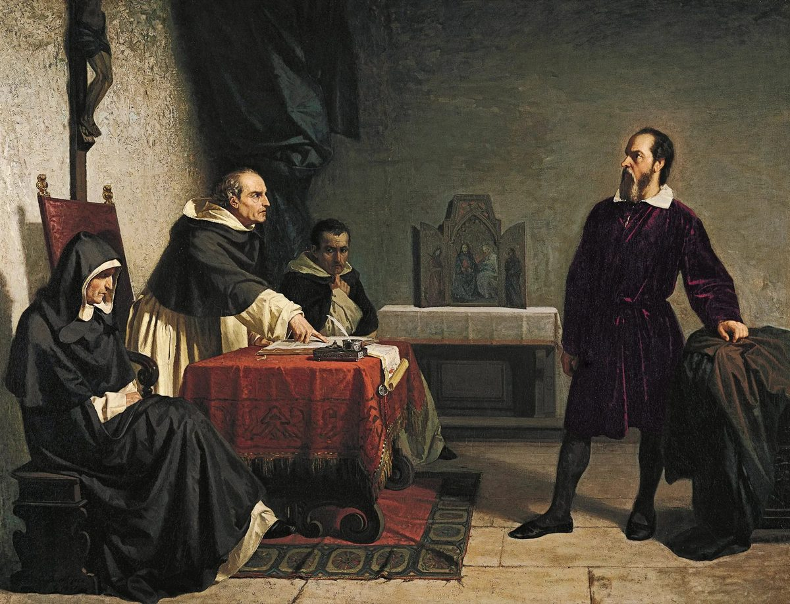
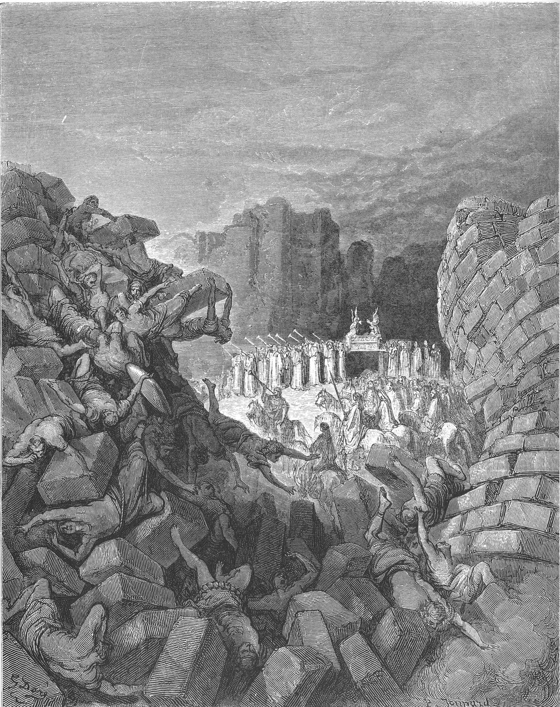
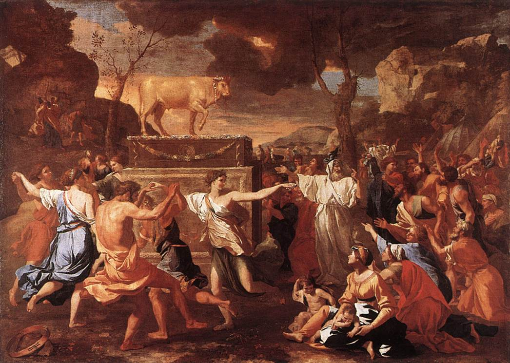
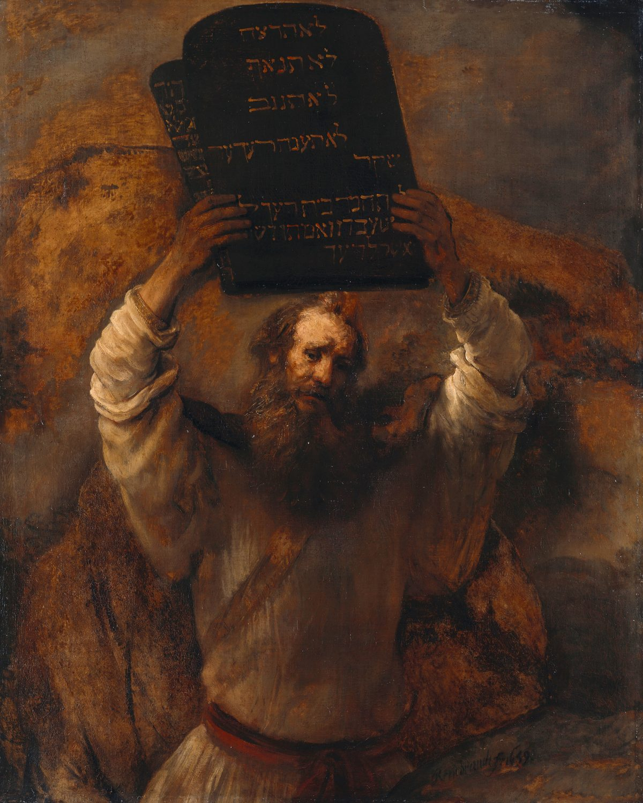
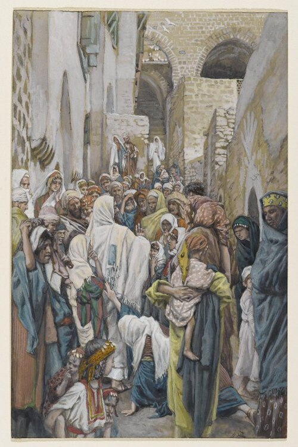
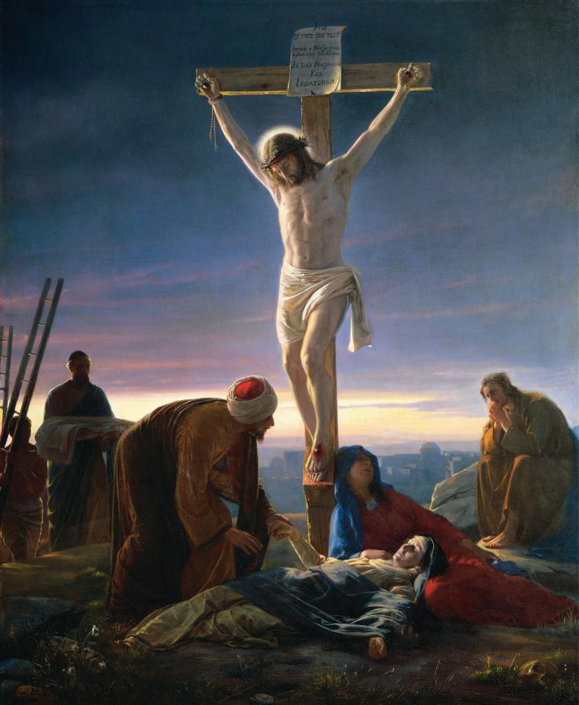

这本书最可怕的不是题目。
是如果题目真的说中了。
哥林多前书 3:18
人不可自欺。
你们中间若有人在这世界自以为有智慧，
倒不如变作愚拙，
好成为有智慧的。
这本书只有在一个情况下能为你产生意义。
就是把它当成一面镜子。
不是属灵书籍。
不是教会增长摘要。
不是神学讨论。
必须是一面镜子。
这样看，才会对你有益。
这本书，是我多年来的自我检讨、自我反映、自我审判，从而得到的重大发现，和重大突破。
多年以来，这本书还没写成以前，我就在内心深处搭建了一面镜子。
多年观察下来，我发现——即便我如此谨慎（我自认为谨慎），我还是发现了隐藏在内心深处的
【假神】
原来我也在侍奉假神。
【先说说我的一些故事】
我不仅是一个在镜子前审视自己灵魂的罪人，我也是一个在时间边缘徘徊的病人。
在我 35 岁这一年（2019），我确诊了一些不轻的病——心律异常、高血压等指标的波动。
35 岁，是很多人觉得人生刚刚起步的年纪。也是在这样的年纪，我必须接受一个客观事实：我的时间有多少，不确定。可能很长，可能很短。不过这都不是重点。
这种生理上的紧迫感，逼着我从那时起就开始学习"数算自己的日子"。
这种"靠近死亡的觉知"给了我一把极其冷峻的尺子：如果我们有 80 年，这 80 年的得失放在永恒里，占比无限接近于零。既然占比是零，那我们在世上拼命保护的"拥有"、计较的"失去"，到底在永恒里算什么？
这场病成了我的镜子。它照出了一个真相——凡是时间能带走的，本质上都不存在。耶稣说虫能蛀、贼能偷的，其实就是指"时间"。
这样的年龄，这样的经历，给了我很多人不可能拥有的内心挣扎。
一，抱怨上帝。
二，抱紧上帝。
也给了我一个完全不一样的视角。
数算自己的日子，得着智慧。我的价值观、世界观、人伦观、神人观，完全得到质的飞升。
很多需要有时间前提的人事物（能被时间带走的），已经模糊不了我的视角。
这些年我越来越看清楚一件事——
不懂数算日子，就是给假神留空间。
一个人若觉得时间无限，他就会觉得"现在先按自己的方式走，以后再真信"——这是假神最温柔的藉口。我的病每天都在温柔地提醒我：暴毙可以随时发生。这个提醒像一把尺，把我一点一点从假神手里拔出来。
假神这个课题，一直是圣经最大、最可怕的议题。
【假神】将贯穿整本书。在这本书里，假神就是坐在我们生命王座上那个不是神的东西。
假神能给我们，神不能给的。
假神甚至能让我去决定——我要信神什么，不信神什么。
也就是说，真神在我们内心的假神面前，都可以被过滤。
开篇提问
是谁给了我们权柄，
去决定耶稣可以做什么、
不可以做什么？
马可福音 1:41
Codex Bezae 古拉丁抄本

有一个长大麻疯的来求耶稣，向他跪下，说：
你若肯，必能叫我洁净了。
耶稣动怒了，
就伸手摸他，说：
我肯，你洁净了罢。
先把问题说清楚。
马可福音 1:41 在绝大多数抄本传统里，读作"耶稣动了慈心"（希腊文 σπλαγχνισθείς，moved with compassion）。所以今天多数中文与英文译本都译成"动了怜悯"或"动了慈心"。
但这节经文确实还有一个刺耳的异文：有抄本读作"耶稣动了怒"（希腊文 ὀργισθείς，moved with anger）。这个读法不是现代人为了制造争议编出来的。它见于西方文本传统的重要见证 Codex Bezae（D/05），并得到若干古拉丁抄本支持。[13]
这个抄本是否是原文，不是本书的重点。
但它的出现——以及它刚刚在你内心引爆的那个火花——比"哪个才是原文"这个问题更炸裂。
你读到"耶稣动怒了，对一个病人"，那一霎那，耶稣在你心里，是站在犯人栏里，接受你的审判。
"耶稣怎么可以对一个病人动怒呢？"
换句话说——Jesus, this is impossible for You.
这就是这本书从第一页到最后一页要照出来的那面镜子。
我们心里有一个法官，在审判耶稣可以做什么、不可以做什么。这本书走到最后，只有一个出口——把那个法官的位置，还给祂。
想一想。一个你平常敬重的人，你认识他脾气温和。这样的人突然动怒，即使你看不明白，你也会相信：肯定有什么特殊情况。
怎么？为何耶稣动怒，在你心里就直接扣分了？
耶稣就算动怒，也不影响救恩的约定，不影响福音的根基。但我们的第一反应，不是敬畏，是审判。
为此，这个古抄本的异文被发现以后，在教会里兴起了巨大波澜。有人相信这才是原文，是教会为了粉饰耶稣而篡改；更多人直接不承认这是原文。
这只是开胃菜。
本书会有很多这样的时刻——耶稣，甚至上帝，再一次被押解到彼拉多面前，接受我们的审判。
我不是在亵渎上帝。我是在揭开一件我们长久以来一直在做、却从未承认的事——
我们在审判耶稣。
称赞祂，当祂说得好。
审判祂，当祂做得不合我们的标准。
在耶稣面前，我们行使了一种权力——选择我们可以接受的耶稣，过滤掉我们不能接受的耶稣。
这种权力，从哪里来？
## 第一部：我们看见了什么
人非有信，就不能得神的喜悦；因为到神面前来的人必须信有神，且信他赏赐那寻求他的人。
问题从来不是人信不信，而是人最终信谁。
现象（不加评论，只陈述）：
- 全球巨型教会与巨型倒塌
- 知名牧师的跌倒与教会崩塌
- 无聊的教会，坐着等死
- 年轻人离开教会，不回头
- 大教会在萎缩，小教会在消失
- 东西方教会，症状不同，方向相同
公开案例的前车之鉴
先把姿态说清楚——
我们接下来谈几间大教会的案例，并非因为"大教会问题多"，而是因为它们的调查公开透明，有独立报告与法庭文件可供公共检视。小教会的问题不一定少，只是公开度低。
更重要的是——所有正在成长的教会，最终都会面临组织扩张带来的结构性考验。走在前面的大教会踩到的坑，是我们后面这一批十年二十年后都会遇到的礁石。
我们看三份已完成独立调查、由第三方出具正式报告的案例。（完整原始报告与细节请见本书附录。）
Mars Hill Church（西雅图，2014 解散）
规模： 巅峰期 15 间分堂，周出席约 13,000 人。
核心问题： 长老会独立审查证实，创办人存在骄傲、专横管理、欺凌同工及财务不透明。跌倒主因不是私德或异端，而是权力结构失衡与内部问责失效。[2]
结局： 调查启动不到五个月，教会系统全面解散。
RZIM 国际护教机构（2021 调查报告）
规模： 跨语种国际知名护教与讲道平台。
核心问题： 独立律所调查证实创始人长期性侵犯与属灵操控。机构董事会结构包含亲属与利益相关者，导致内部审查与透明机制被结构性削弱。[4]
结局： 创始人离世后"人设"崩塌，机构声誉与治理结构遭受根本性冲击。
Hillsong Church（全球，2022 辞任）
规模： 全球 30 城市分堂，周出席约 150,000 人，敬拜音乐影响遍及全球教会。
核心问题： 创始人涉嫌隐瞒父亲性侵罪行；董事会另查实其十年间持续违反牧者守则。机构长期以内部机密流程处理，抗拒对会众与公众公开。[3]
结局： 刑事指控与独立调查迫使创办人辞任全球主任牧师。
底层观察：不是"他们"，是"我们"
读过这三份报告，再看独立机构（Barna Group, Lifeway Research, Pew Research）追踪的数据——美国年轻一代离开教会的比例持续攀升，宗教"无归属者"逼近 30%[5]——我的观察是：
这些崩塌背后有一个反覆出现的模式：权柄高度集中在一位领袖身上，而这位领袖的"人设"被组织本身精心保护。
表面是强大的领导力。里面其实是——当领袖需要被问责时，整个组织找不到一个能问责他的位置。
这不是阴谋。很多时候是善意的。同工觉得"不能让牧师分心"，董事觉得"不能让神的工作蒙羞"。但这种善意的代价是：一个组织不再有能力对它自己的创办人说"你错了"。
当这样的组织越做越大，越来越多的人靠它吃饭、靠它被服事、靠它活出自己的属灵生命——"牧师不能错"这件事，就从一种忠心，变成了一种结构性的防御。
到这一步，那个组织保护的已经不是福音，是那位牧者的人设。
而这个人设——用这本书的核心语言——就是一尊长得像基督的金牛犊。
这尊金牛犊不是某个大教会独家铸造的。任何一间正在增长的教会，随着人数上去，都可能开始铸造它。所以走在前面的大教会崩塌时，我们看的不是"他们"，是十年二十年后，我们自己可能正在走向的位置。
(以上为基于公开报告与公开统计数据的个人观察。事实层请以各报告原文为准，观察层由作者负责。完整案例细节与数据来源已移至附录，供深入查阅。)
照理说，我们活在一个科学空前进步的时代。资讯发达，人工智能免费供全球使用，人类的知识总量每几年就翻一番。按照一般人的想象，迷信应该随着教育普及而消失才对。
但事实恰恰相反。迷信没有减少，反而日益严重。
看看台湾，一些大型邪教团体，教主被信徒封为神，信徒掏出大把大把的钞票供养他。盲目崇拜到令人匪夷所思的地步。再看看美国，一些万人以上的巨型教会，主任牧师坐着私人飞机往来各地。讲台上传讲的早就偏离了圣经的正道，但台下的信徒依然盲目跟随。
人不是没有知识。人是照样可以相信荒谬。
当人盲目相信错误的对象，结果是毁灭。
作者的声明（先放下防御）：
我不是在批评任何牧师、传道、教会领袖，也不是嫉妒巨型教会取得的成就。
但是——如果很多成功的大教会也会站不住，不可能是神不给力。一定是我们哪里出了问题。
教会的回应（全部是症状治疗）：
换音乐风格 / 改讲道方式 / 建更大建筑 / 做社交媒体
没有人敢问的问题：
我们建造的，到底是什么？
人数是建造吗？建筑是建造吗？播客粉丝是建造吗？
【镜像预告】这几幅"从人的眼光看像迷信、从神的眼光看是信心"的画面，将在第六章完整展开。这里先留下一个问题：为什么同样是"信"，有些信把人带向毁灭，有些信却被耶稣称为"你的信救了你"？
要回答这个问题，我们必须先把敌人找出来。现象已经摆在眼前；现在，我们要给它命名。
## 第二部：诊断——敌人在哪里
因为，他们虽然知道神，却不当作神荣耀他，也不感谢他。他们的思念变为虚妄，无知的心就昏暗了。
假神的问题，首先是主权的问题：谁坐在主的位置上？
核心命题
教会最大的危机，
不是外面的无神论，不是世俗化。
是里面的假神。
一个从未被打碎的偶像。
我们信耶稣是耶稣。
还是——
我们信耶稣，
是那个我们愿意去信的
那个耶稣。
这世界根本没有无神论
人活在世上，得有信念支撑。有的人，信念是家庭；有的人，信念是事业；有的人，信念是生意。当中大部分，信的都是自己。自己一点一滴构筑给自己的信仰。
这就是假神最隐蔽的形态——它不叫你拜偶像，它只是把你自己，悄悄放在神的位置上。
历史与科学
连最伟大的科学家也不例外。
亚里士多德说重的物体比轻的物体下落得更快。一千多年，没人怀疑。直到伽利略证明他是错的。
牛顿构建了绝对的时空观。奉为圭臬两百多年。直到爱因斯坦的相对论证明时空可以弯曲。
连巴斯德之前的科学家都相信"自然发生说"。直到鹅颈瓶实验证明——生命只能来自生命。
人类历史是一段飞速进步的历史，也是一段不断犯错的历史。
我们一直在进步。
我们一直没真正对过。
如果历史上那些走在科学最前端的顶尖人物，都被历史证明不可全信——
那我们对自己的绝对相信，难道不就是一种迷信吗？
最可怕的迷信，不是盲目的宗教信仰。
是人类过度迷信自己的理性。
全书的核心呼喊：降伏
在进入假神的具体面貌之前，必须先把这本书最核心的一句话说出来——
如果你不降伏神，
你一定降伏于不是神的东西。
没有中间地带。没有"我谁都不降伏"这个选项。
你降伏于自己的偏好——我不喜欢被约束，所以我选择一个不约束我的神。
你降伏于自己的认知——不把神当作神荣耀祂，无知的心就昏暗了。
你降伏于自己的道德框架——上帝在约书亚记屠杀小孩，这我无法接受。
你降伏于自己的理性——这个后面有完整篇幅展开。
你降伏于自己的情感——再聪明的人，也可能过不了这一关。
这五个降伏，贯穿了这本书从第一章到最后一章。每一章，都是在照出其中一个。
假神的全方位主宰
假神不是一个外来的入侵者。它是我们自己建造的，用我们自己最熟悉的材料——
我们让自己的看法、经验、世界观，主宰了价值观。因此，连上帝都必须在这套价值观下被审视。
我们让自己的认知与智慧，主宰了道德叙事权。什么是对，什么是错，连耶稣也可以被叫到被告栏接受审问。
我们让自己的感觉，主宰了情感。我要爱谁，我不要爱谁，我吃耶稣的肉、喝耶稣的血，但我对祂没感觉。我爱的不是十架的耶稣，是能给我永生的基督。
我们让自己的理性，主宰了理解权。连教会最核心的一群肢体——奉主名传道、赶鬼、行异能——耶稣说：我从来不认识你们。（马太 7:22）
你可以奔跑，但不一定是跑在天国之路上。
聚焦到教会中
当我们用自己的理性来决定人事物，甚至决定真理、决定耶稣该是什么的时候，我们都在侍奉假神——
- 会众：我来教会，是希望耶稣来服务我，教会来服务我
- 我可以服务上帝，只要上帝始终符合我对上帝的期盼
- 假神最强大的工具：给人"自由"去决定信神什么、不信神什么
- 假神最强大的工具：给人权柄，去决定，耶稣该是个怎样的耶稣
- 假神间接的、直接的，控制了讲台，控制了教会如何形成，控制了会众要听什么、想唱什么
- 教会一直想方设法吸引人——是吸引灵魂，还是去吸引人内心里的假神？
- 我们一直在做的，难道不就是粉饰真理、打扮耶稣吗？
- 为何有一半的真理与福音被偷偷藏起来？
- 连护教学都在为圣经悔改，替上帝道歉（第五章）
假神的承诺 vs 假神的真相
假神承诺：My body, my choice = 自由。
结果： 你顺从谁，就作谁的奴仆。
—— 罗马书 6:16
假神承诺：拥有更多 = 更自由。
结果： 贪心就是拜偶像。
—— 歌罗西书 3:5
假神承诺：我不受控制 = 自由。
结果： 越失控，越不自由。
假神承诺：我选择信什么 = 独立思考。
结果： 活在魔鬼私欲之下。
—— 约翰福音 8
把这张表合起来，你会发现一件事：
假神的每一个承诺，
都是用"自由"包装的捆绑。
它从不叫你公开拒绝神——
它只是悄悄地，把你放在神的位置上。
它没有叫你否定神。假神让你去"审核"真神——看看真神是否符合你的想法、看法、需求、喜好。这比否定神更危险。
回到开场：马可福音 1:41（Codex Bezae 古拉丁抄本记载：耶稣动怒了）——假神过滤了。
这就是这本书要照出来的那面镜子。
如果你不降伏神，
你一定降伏于不是神的东西。
问题从来不是你信不信。问题是：你把最终的降伏，给了谁？
创世记 3 章：撒旦的策略
不是叫人拜别的神。只种下一句话——"神岂是真说……"
想清楚再信。这就是假神"自由"的起源——你来决定。
蛇对女人说："神岂是真说不许你们吃园中所有树上的果子吗？"（创世记 3:1）
然后蛇说："你们不一定死；因为神知道，你们吃的日子眼睛就明亮了，你们便如神能知道善恶。"（创世记 3:4-5）
你仔细看撒旦说了什么。它没有直接否定神的话。它只是把一种新的态度，放进了女人的心里——想清楚才信。有些部分你可以信，有些部分你可以想一想。未必需要全信。
听起来是不是很熟悉？听起来是不是很聪明？很理性？很科学？
原初的信 vs 撒旦种下的
原初的信：上帝说什么，就是什么。就这么简单。就这么纯粹。原本我们信神，是那样的全然、直接。没有任何掺杂——不掺杂理性、不掺杂感性、不掺杂经验、不掺杂大环境、不掺杂别人怎么做、大家怎么做。
纯洁的信，单纯的顺服。
我的孩子 7 岁那年，我们一直在晚餐时段，让他学习、体验各种食物。有一次，吃鱼。他很认真地告诉我们，老师说小孩子不能吃鱼。当然我们知道老师为什么这么教。所以我们尝试向他解释，其实是可以的，只要父母有在旁、是父母准备给你的，就能吃。
我的孩子很尊重老师，他很抗拒违背老师。当下我看得出，他很不愿意去吃。
那一刻，我明白了。这本来就是伊甸园里，亚当和夏娃该有的信，和顺服。老师说什么就是什么。上帝说什么就是什么。
这样的信心，放在二十一世纪的今天，叫什么？宗教狂热。叫什么？不理性的信仰。叫什么？上帝给你脑子，你不用。
原来，原罪的根不但没有拔除，今天已经长成高耸入云的荆棘。
撒旦种下的：把人的判断，放在神的话之上。不要那么快就全信。想一想。评估一下。保留一点。能不能信？
假神其中一张最有权威的脸谱 = 理性。
基督徒生涯 25 年。
我们怎么看——
洪水审判 | 迦南屠杀 | 击杀长子 | 地震海啸 | 生离死别
有的人选择用学术，从各个角度尝试粉饰，甚至涂抹。有的人选择不去想，但你问他，他直接告诉你，我内心是接收不到的。有的人选择不去谈，这些篇章是上帝的耻辱和错误，避免在讲台上讲。如果要讲，就以公关方式处理，替上帝灭火。
其实，如果真上帝在自己的教会，都被批判了——这能是上帝的教会吗？那这教会，这些信徒，真正掌权的是哪个上帝？

我们必须面对一件更深的事实：我们的认知是有限的。我们的理性是有限的。我们的经验是有限的。所以你不可能等到"完全看清楚"，才去相信。
大卫鲍森的一次讲道有提过，在一个拒绝承认神迹的教会里，有一次讲道。讲了摩西与百姓过红海。这个教派不相信神迹存在，认为这都是圣经古代的写作比喻手法。
真实没有红海分开的神迹。只是退潮而已。当时讲员还强调，还没有分开，退潮而已，海水还在膝盖位置。
突然有个姐妹高举双手喊哈利路亚。讲员问，为何哈利路亚？
这位姐妹说，赞美神，海水这么低还是可以把法老的军队冲走！
罗马书 1:20-22
20 自从造天地以来，神的永能和神性是明明可知的，虽是眼不能见，但藉着所造之物就可以晓得，叫人无可推诿。
21 因为，他们虽然知道神，却不当作神荣耀他，也不感谢他。他们的思念变为虚妄，无知的心就昏暗了。
22 自称为聪明，反成了愚拙。
这是目前影响我最深的一段经文。
为何会有好多基督徒因为约书亚记的记载，放弃信仰？为何会有好多基督徒甚至愿意尝试涂抹迦南屠杀的真实性？为何，我们心中会有一把尺，可以测量上帝合不合格？
在这些大是大非面前，我们是用理性：
1. 批判了上帝，拒绝了上帝，感觉因上帝而蒙羞了
2. 批判了自己——神明明就是神，无可推诿，一定是我认知有限，看不懂
很多科学家都有一种科学精神：如果某个本实验室证明的新理论，我无法理解。那一定是我的推理模型有限了。从实验室走出来的新发现，被验证的原理，尚且可以让科学家谦卑、弯腰。然后自我尝试纠正。这是理性本该有的用途。
如果我们的底层逻辑是"上帝一定不会错，看不懂一定是我错"——最后就会像科学家一样，明白原先无法明白的。
我们目前真正的信仰状态，我们信仰的核心底层逻辑——
我们心中已经为"上帝"列出一系列条件清单。我们是信，这个名叫耶稣的，是完全符合我们对上帝列出的各种条件。如果无法满足，也不代表我不信。但是在我们内心深处，耶稣一直都不是真正的上帝。
所以，真正在支撑现代人信念的，真的不是耶稣。因为连耶稣都要被审核，都有条件要过滤。
只有一样，才是真正在支撑现代人活着的信念。那就是我们各自的理性。只有我们的理性，不需要被审核。我们的理性可以改变，但首先要先说服我们的理性。真正掌握我们的生命、我们的价值观、我们的世界观，肯定不是耶稣，是我们自己的理性。
所以问题不是信不信。是：你把最终的信，放在哪里。
理性还有各自的理性，和群体理性（大家觉得合理的）。
核心命题：
真正的迷信，不是盲目拜神明。
是一个人过度相信自己有限且经不起考验的理性判断，
并试图以此去"审判"上帝。
这不但是迷信，还是迷信之母。
当我们无条件去相信自己的理性，没有比这个更大的迷信了。
人可笑的荒谬。
有一次讲道，我就问：你们当中有多少人会 100% 相信我？
没有吧。
每个人都是如此。我们被教育，防人之心不可无。不单单是信用问题，有时候，你们也不会 100% 认同我的说法，对吧？很正常。
每个人都不会轻易地 100% 相信别人。
也几乎没有人会得到别人的 100% 信任。
但是——
每个人几乎都 100% 相信自己。
人无法不信——问题只是信谁：
人类的本质是敬拜性的，不存在真正的"中间地带"。当我们宣称自己"理性"时，往往只是在选择相信自己的判断力。
审判权的试金石：让我们走一趟应许之地
让我们把这面"理性的镜子"对准圣经中最具争议的一页——《约书亚记》。在现代语境下，这本书已经成了许多信徒和学者的"恐怖文本"。
面对书中记载的灭绝令（Herem），现代人的理性（也就是我们心里的假神）开始行使它的"审判权"。这场审判展现出了两种极端的逃避路径：
否定真实性： 现代考古学常被用来当作否定的武器。当学者发现耶利哥城的废墟并没有预想中的防御墙证据时，一种声音随之而起：既然灭绝从未发生，那么上帝就没有下过这命令，这只是以色列人编造的"民族神话"。[7]
修辞化洗白： 另一部分人试图通过"公关手段"来救上帝。他们主张这只是古代近东的一种"hagiographic hyperbole"（圣徒式的夸张），类似于现代足球赛后说"我们屠杀了对手"，而非字面上的杀戮。[8]
这种现象揭示了"迷信之母"最隐蔽的运作方式：当真理令我不适，我的理性便会自动接管。如果我不喜欢上帝的作为，我就利用科学、考古或文学修辞来判定上帝"没做过"。
古代基督徒如奥利金（Origen）在面对这些文本时，会坦然承认其字面意义可能令人反感。于是转向寓意解经（Allegory），将其视为灵魂战胜私欲的属灵教导。[9] 但现代人失去了这种"安全阀"，我们死死抓住"理性的事实感"，结果却是：当事实不符合我的道德感，我可以宣布上帝错了，甚至宣布圣经写错了。
这就是我们对上帝行使审判权的真相：如果不符合我的逻辑，祂就不配作神。这不仅是理性的傲慢，更是最深的迷信——盲目相信自己的道德秤杆能衡量创造万有的主。
镜子与光：理性的定位
理性是一面镜子，它的职能是反射光源，而不是产生光源。当镜子以为自己能发光，甚至试图去判定光源是否"够亮"或"够正"时，这就是迷信的开始。
这不是我们的发现。耶稣早就说过了。
「耶稣说：我为审判到这世上来，叫不能看见的，可以看见；能看见的，反瞎了眼。」（约翰福音 9:39）
这句话非常危险。耶稣说，那些"能看见"的人——反而是瞎了眼的。为什么？因为他们太相信自己的眼睛。太相信自己的判断。他们的"看见"，本身就成了盲目的来源。
当一个人相信自己看得够清楚的时候，他就不再需要光了。他的"见解"，遮蔽了真光。
法利赛人就是这样。他们读经最多，懂律法最深，结果反而是第一批拒绝弥赛亚的人。他们的知识，没有让他们更近神；他们的知识，成了他们最大的围墙。
这就是"能看见的，反瞎了眼"的真实含义：不是你没有理性，而是你的理性被你当成了终极权威。
反驳：上帝不是给了我们理性吗？用理性岂不就是顺服？
这里有一个必须正面回答的反驳，因为它听起来非常合理："上帝赐给我们理性，难道我们不用理性，才算是信心？用自己的判断力，岂不是在善用上帝给的恩赐？"
答案是：对，也不对。
理性是上帝赐给我们的，这是真的。但理性的用途，从来不是坐在神的位置上审判真理。理性的用途，是照见我们自己——照见我们在抗拒什么，我们在害怕什么，我们不肯放手的是什么。
换句话说：理性是用来照镜子的，不是用来当法官的。当理性审判神，它就成了骄傲。当理性照见人，它就结出悔改。
所以，上帝给你理性，不是让你用它来过滤祂的话；而是让你用它来认识自己的有限，从而更彻底地交托。
一个发现：原来我们过于盲目地相信自己的理性（假神）——
耶稣说，你看天上的飞鸟，不种也不收，你天父尚且养活它，你们不比飞鸟更贵重吗？……不要为吃什么穿什么忧虑，一天有一天该当的忧虑，不要为明天忧虑。
这句话，需不需要神学教育才能明白？
不种也不收，你天父尚且养活它，不要为明天忧虑。
我大胆地问一问，对于现代人的处境——有谁敢信耶稣这句话？有谁敢真的不去担心明天、明年、十年后，甚至晚年？
没有。耶稣一句话就把你心中的"假神"显现出来。因为，就连耶稣也没有办法给你平安。因为，我们都被假神绑架了。
你想想——信人，信世界，信魔鬼，信上帝。怎么选？
大家：当然是选信上帝。
那好。耶稣说，可以不用为明天忧虑了。天父爱我们。知道我们的需要。
我：你们信不信？
看见了吗？你心里的假神不同意。当初上帝说，园里的果子都能吃，除了生命树的果，我们选了不信。今天耶稣说，天父爱你，别为吃穿和明天担忧，我们又选了不信。
我是个相当聪明的人。我最聪明的地方在于，我每次都能说服自己接受自己的愚蠢。
理性的正确用法：打磨自己的理性（5 步自省）
先问一个小孩都听得懂的问题——你明明知道不可以 100% 相信别人。你为何还 100% 相信你自己？
如果这句话让你大脑当机——好。请停在这里一秒钟。
也许你会说："因为我不会骗自己。"你是不是认为，只要我不会骗自己，我就可以 100% 相信自己？这个假设本身，就是自欺最深的一种形式。
人类历史上每一个犯下大错的人，在犯错的当下，都相信自己是对的。每一个被邪教控制的人，都曾经认为自己不会上当。每一个盲目跟随错误权威的人，都以为自己在做理性的判断。
"我不会骗自己"——这句话，本身就需要被验证。而验证它的工具，还是你自己的理性。你用理性来证明理性是可靠的，这在逻辑上叫做循环论证。
所以，理性到底该怎么用？原来，理性就是用来打磨自己的理性。真正善于思考的人都有一个共同点：他们把理性的刀刃，永远指向自己，而不是指向外面。具体有五个动作：
1. 自我验证： 我现在相信的这件事，经得起检验吗？不是检验神，不是检验真理——是检验我对神的理解，我对真理的诠释，是否准确、是否完整、是否经得起时间考验。伽利略不是在怀疑物理定律，他是在验证自己之前接受的答案。
2. 自我试探： 我为什么相信这个？是因为它是真的，还是因为它让我舒服？是因为圣经如此说，还是因为这个答案符合我的期待、我的利益、我的习惯？动机的审查，比结论的审查更重要。
3. 自我检讨： 我在哪里抗拒真理？不是问"真理有没有问题"，而是问"我有什么问题，让我不肯接受这个真理"。每一次抗拒，都是一面镜子。镜子里照出来的，不是真理的错误，而是我内心深处还没有放下的东西——恐惧、骄傲、控制欲、或者对某个人的依赖。
4. 自我检测： 我的信仰有没有在生命里产生真实的改变？还是只是知识的积累、道理的囤积？一棵树的好坏，不是看它的叶子有多茂密，而是看它结什么果子。如果你信主二十年，还是同样的脾气、同样的恐惧、同样的控制欲，知识没有变成生命。理性就只是在原地打转。
5. 自我突破： 在上一次理解的基础上，愿意被神带到更深、更难、更不舒服的地方去。真正的属灵成长，永远发生在边界之外。每一次突破，都需要承认上一次的理解是不完整的。这需要勇气，也需要谦卑。
这五个动作加在一起，就是悔改的完整结构。所以为什么圣经如此强调自省、悔改？因为悔改不是情绪的崩溃，不是眼泪的多少——悔改是理性最诚实的一次运作：承认自己的判断错了，然后转向。这才是理性真正的样子——不是坐在神的位置上审判别人和真理，而是永远折返，指向自己。
当理性真正学会指向自己，它就会发现一件让人意外的事：真理，根本不需要我们去保护。
真理的"非维护性"：你是在信真理，还是在经营宗教公关？
1+1=2 需要谁来守护吗？万有引力定律需要谁来"润色"它的表达，好让人们觉得它更温和、更易接受吗？
你信真理是真理，真理就根本不需要被谁保护。真理的本质在于其客观存在性。
当你内心产生一种强烈的欲望去"修饰"真理，去"美化"上帝的愤怒，去"打磨"圣经中那些让人尴尬的记载时，你其实已经出卖了你的不信。
如果你觉得真理需要被你"保护"才能存活，说明你眼中的真理只是一尊脆弱的瓷器，而不是创造宇宙的磐石。
格局与认知——无知与幼稚
就因为我们的无知，还不承认自己无知。这种无知，让我们成为假神手掌上的玩物。
我在一个与世无争的偏远乡镇长大。是个好地方，也是我进入都市生活以前，最后一片人间净土。
那些年，没有手机，没有宽频，互联网还是奢侈品。全村人熟悉全村人，全村人共享同一套知识讯息。
我在这里长大。但我没有继续在这里生活。
成年后，每次回到小镇的早餐店，听大家高谈阔论，不难发现一个现象——村里人有共同认知，共享各自匮乏的知识讯息，然后共同得出一些偏差的结论。
我不是嘲笑村里人。
看看今天，有多少西方游客为了打破对中国的刻板印象，自费亲身去旅行。结果，认知碎了一地——连一个三线城市的高铁站，就让他们破防了。还有那种对电子支付的高度普及率。
我要说的是这个——
我在村里的时候，认知高度是村的水平。进入大城市读书工作，认知高度有了城市的水平。旅行、阅读、认识不同文明，认知开始有了国际水平。读历史、科学、数学、哲学，认知开始有了世界水平。
可惜。我这辈子大概不会看见人类在太阳系扩散。
物理学家 Michio Kaku 说过一句话：
"If you go into outer space, gold is not the most precious thing. It's wood. There's no wood in outer space. There's plenty of gold. There's plenty of silver. But there's no wood."
地球人谁不要黄金？这几年黄金疯狂暴涨，人人趋之若鹜。
这是无知。
JWST（James Webb Space Telescope），人类目前最先进的运行中望远镜，可观测距离达 130.53 亿光年。在这个观测范围内，目前没有任何可定论的证据，发现复杂有机生物的迹象。
但黄金？整个可观测宇宙里，多如海边沙粒的星球中，有无数颗黄金含量超过地球质量几倍、几十倍、甚至千倍的星球。
你如果可以带一颗路边的野草，放眼这个布满黄金、钻石的宇宙——这颗路边野草，比这一切更珍贵。
这就是我们无知的认知，无法接受的简单事实。我们还活在村里，活在城市里，活在文明里，活在地球里。
我嘲笑的不只是村里人。是所有人。包括我自己。
耶稣说：
「你想，野地里的百合花怎么长起来；它也不劳苦，也不纺线。然而我告诉你们：就是所罗门极荣华的时候，他所穿戴的，还不如这花一朵呢！」（马太福音 6:28-29）
99.9999% 的读者都认为——耶稣只是在用修辞手段，耶稣夸张了。
耶稣没有夸张。祂是在保守地说。
放眼整个可观测宇宙，在多如海边沙粒的星球中，你可以找到黄金含量大过地球质量几倍、几十倍、甚至千倍的星球。
但这颗野地里的百合花——它不劳苦，也不纺线，上帝给它生命，它就能长起来。
宇宙之大，真的还不如这一朵花。
耶稣已经压缩了这句话的事实。按今天人类的天文认知——别说一个，一百万个所罗门的荣华，都还不如这一朵花。
这是物理事实。根本不是什么比喻、修辞、夸张说法。
教会近两千年，我们还是一直认为耶稣夸张了。
你不需要拥有 JWST 望远镜，不需要有星际飞船。
你只需要停止继续"审核"耶稣说的话——你的认知，瞬间就可以达到天国的层次。
无知，让我们在假神面前容易被操控。
无知，让耶稣伤透了心。
为何就是不信呢？
## 第三部：连护教学都可能在服务假神
因为时候要到，人必厌烦纯正的道理，耳朵发痒，就随从自己的情欲，增添好些师傅，并且掩耳不听真道，偏向荒渺的言语。
5.1 理解与追问
先承认一件事：护教学者们做的工作，很多时候是必要的、真诚的、有价值的。
当圣经的某些记载让现代读者跌倒——六天造天地、洪水审判、迦南灭绝令——这些学者没有转身离开。他们留下来了。他们用学术工具、古代近东文献、文学理论，试图在经文和现代读者之间搭一座桥。
这不是邪恶的动机。这往往是爱的动机。他们不想让人因为看不懂而拒绝救恩。他们不想让真理因为"包装太旧"而被嘲笑。
面对《创世记》"六日造天地"与现代科学的张力，历代护教学者付出了巨大努力：框架假说看见了文学结构的优美，日-时期论试图在希伯来语义中寻找对话空间，功能起源论希望从古代文化背景里为现代人找回信仰的意义。这些努力的背后，是一颗颗爱主、爱灵魂的心。我们不怪他们。我们都是在黑暗中摸索的受造物。
但是——爱，会不会用错方向？保护真理的冲动，有没有可能在某一个点上，悄悄地变成了修改真理？
这不是一个审判人的问题。这是一个照镜子的问题。我自己也曾经站在这座桥上，手里拿着刷子，想替真理补一层漆。
本章要追问的，不是"谁是假师傅"。本章要追问的是：我们保护真理的冲动，有没有可能被假神利用了？
5.2 三位学者的最强解释
公平起见，我们不能挑他们最弱的一句话来讨论。让每一位学者用最强的形式出场。
Greg Boyd · 十字架滤镜
Boyd 的起点是基督论。他引约翰福音 14:9——"人看见我就是看见了父"——和希伯来书 1:3，子是神本体的真像。他的推论是：基督是神最完整、最终极的自我启示。任何对神的理解都必须以基督为最终量尺。而基督的最高启示点，是十架上为仇敌代求的那一位。
到这里，Boyd 的前提完全是正统的。早期教父会同意，加尔文也会同意。
他接着推论：既然十架上的神是神的真面目，那么约书亚记里那位下令灭绝的神。就不可能是字面意义上的那位神。那是神"屈就"古代暴力文化、甘愿戴上一副战士假面具的结果。
但我们想问：如果基督是解开旧约的钥匙——这把钥匙，有没有可能变成剪刀？
基督自己说："莫想我来要废掉律法和先知……就是到天地都废去了，律法的一点一画也不能废去。"（太 5:17-18）那位十架上代求的神，同时也是那位亲口肯定旧约权威的主。用基督做滤镜没有错——但这个滤镜，有没有可能把基督自己切成了两半，只用了一半？
Peter Enns · 道成肉身的文本
Enns 的起点是：圣经像基督一样是"道成肉身"的——真神的话，穿着真实的人类语言、文化和文学惯例。他把这个原则应用到约书亚记：灭绝令属于当时古代近东普遍的战争夸张修辞，就像今天说"把对手杀得片甲不留"，不是字面意思。
这个原则用在"文法"上完全合理。希伯来诗歌、古近东条约格式都是真实的。
但我们想问：当这个原则从"文法"延伸到"神命令了什么"时，边界在哪里？
古代近东的战争夸张修辞，通常是人对自己战功的吹嘘。而约书亚记里的灭绝令，是神对人的命令，不是人的战后自夸。更关键的是——耶稣自己引用旧约时，从来没有用"那只是古代修辞"来减少经文的内容。祂说"经上怎么记"，就怎么是。
这把剪刀一旦被拿起来，洪水审判、所多玛、亚拿尼亚和撒非喇——哪一个位置可以让它停下？
Kenton Sparks · 带有错误的启示
Sparks 最坦率。他直接说：圣经作者是真人，人会犯错。神在启示过程中"通融"了作者有限甚至错误的神观，让那些错的东西以原样留在了圣经里。约书亚记里那位灭绝之神的画像，他公开承认"在道德上是错误的"。
他的起点也有可取之处——圣经作者确实是真人，奥古斯丁和加尔文都用过"accommodation"来描述神如何用浅近语言讲述深邃真理。
但我们想问：如果圣经里有些内容是作者的错误神观——那么，谁来分辨哪部分是错误、哪部分是真理？如果是我来分辨，我站在什么位置上？我用来分清真伪的那把尺子，是从哪里来的？
一本由读者裁定真伪的圣经，不再是圣经。那是一面按读者脸型定制的镜子。而谁坐在裁定的位置上？我们在第二章已经给他起过名字——假神。
同一个交叉点
三位学者起点不同——Boyd 走基督论，Enns 走道成肉身，Sparks 走启示论——但都经过同一个点：
"这段经文如果字面成立，神就太让人不舒服了。"
他们真诚吗？真诚。有学问吗？远超我。他们在做一件很多牧者心里想做但不敢说的事——让经文不再那么刺眼。
但这里有一个问题，比他们的答案更重要。
5.3 四个必须面对的问题
在给出答案之前，先让问题本身说话。这些问题不是用来审判任何人的。它们是我在镜子前问自己的问题，也邀请你一起问。
问题一： 如果真的是这些学者说的那样——那不是很好吗？如果没有他们，约书亚记不就成了让人跌倒的绊脚石？
这个问题的力量，必须被承认。但耶稣自己就让很多人跌倒了。"我的肉真是可吃的，我的血真是可喝的"——这话让许多门徒离开。耶稣有没有追出去，向他们解释"这是文学比喻，不要按字面理解"？没有。祂转过来，问十二个门徒："你们也要去吗？"（约 6:67）
如果有人因为一段经文跌倒了，然后来一个人说"不要紧，那段不是真的"——扶他起来的，是真理，还是一个被修剪过的真理？
问题二： 如果经文真的是误导，上帝为什么允许这种误导存在？而且错得这么离谱？
上帝用的人有局限。但局限不等于错误。局限是容器小，不是容器里装的东西不对。如果上帝允许一个"让人不舒服的记载"原样保留两千年——有没有可能，祂就是要用这个"不舒服"来揭露我们心里的审判席？
问题三： 如果不是误导——迦南屠杀真的发生过？
这是本章最直接的一问。如果答案是"是"，那我们就必须面对一件比文本批评更严肃的事：我们怎么理解这位神？这就是下一节。
问题四： 迦南屠杀、洪水审判、击杀长子、地震海啸、婴孩夭折——如果真的发生过，你打算用多少"修饰"才能把它们全部塞进人类道德的框架里？
这个问题不需要回答。它只需要坐在那里。
修饰完一个，还有下一个在排队。全部剪完之后，还剩什么样的神？一个永远不会让人死、永远不会叫人受苦、永远不会做任何让现代人不舒服的事的神——那不是圣经里的神，那是我们亲手定制的安慰剂。
5.4 一个普通人的路 · 三把钥匙
六年前，我开始讲台侍奉才两年。轮到《约书亚记》时，我的主任牧师温馨地提醒我：可以跳过。没关系。
我没有系统神学训练。
不是全职传道人。
不懂希伯来文。
不懂古代近东战争修辞学。
也没读过 Boyd、Enns 和 Sparks。
我只做了一件事。我跪下来说——
"神啊，祢一定是对的。我看不懂，不是祢不对。是我还没看懂。"
就这一句祷告。答案来了——一点一点来。到今天，我手里有三把钥匙。
第一把钥匙：生命是礼物。
打开创世记 2:7："耶和华神用地上的尘土造人，将生气吹在他鼻孔里，他就成了有灵的活人，名叫亚当。"
请看清楚这个顺序：尘土 → 形 → 气 → 灵 → 活人。上帝吹进亚当鼻孔的那一口气，不止是一口气，那是一整套"活着"的系统，第一次启动了。
然后呢？我呼吸，氧气在身体里产生能量——这是我做的吗？不是。是我身体里某个比我更古老的生命系统在运作。
我吃饭，食物被消化，变成营养，输送到每一个细胞——这是我做的吗？不是。我连自己的胃怎么动都控制不了。
我生病了，体内免疫系统启动，白细胞去打仗——这是我做的吗？不是。
我生儿育女，孩子在我体内成形，细胞分裂，器官长出，心脏开始跳动——这是我做的吗？不是。
我不过是那套生命系统的管道。这些身体机能，不是我做的，也不是我的父母做的，不是任何一个人做的。我们身体里运行着的那套生命系统，是从亚当身上延续下来的。全人类，呼吸之间，生命运作之间，都是源自上帝吹进亚当的那一口气。
然后我问自己——我有确切的证据，上帝承诺过我，我能用到什么时候吗？
不能。
我的下一口呼吸能不能接上，我不知道。我的心脏下一秒还跳不跳，我不知道。没有人能保证自己下一秒还能继续使用这套系统。
所以——神让你用一天，就一天。用一百年，就一百年。
全是礼物。
不是工资。不是你应该得的。不是神欠你的。
迦南人，活着的每一天，都是礼物。你、我、他——到底最少该活几天才算合理？
如果你心里有一个数字，请你追踪这个数值从哪来。每个人的内心都有一个没说出口的数字：65？70？80？我们从来没和神签过合同，但一到某个岁数前被收走，心里马上有一个声音说"不公平"。
这个声音从哪来？
谁给它权柄定这个数字？
如果你拿不到你要的岁数，就等于上帝是残忍的——
这个算式，是谁立的？
这就是第一把钥匙。打不开约书亚记的人，往往没有先用这把钥匙打开自己手里的那一口呼吸。
第二把钥匙：四百年的忍耐。
创世记 15:16，神对亚伯拉罕说："到了第四代，他们必回到此地，因为亚摩利人的罪孽还没有满盈。"
神等了。不是一下子就审判。是四百年。
四百年里，迦南地的亚摩利人、赫人、比利洗人、耶布斯人——他们焚烧自己的孩子献给摩洛，他们行淫乱，他们拜假神。他们可以悔改。每一代人都有机会。四百年里，阳光照好人，也照恶人；雨水降给义人，也给不义的人。
他们没有悔改。四百年满了。罪孽盈满了。礼物被收回去的那一天，到了。
这不是残暴。这是忍耐了四百年的公义。
第三把钥匙：审判的权柄。
罗马书 13:4："因为他是神的用人，是与你有益的。你若作恶，却当惧怕；因为他不是空空的佩剑，他是神的用人，是刑罚恶人的，伸冤的。"
法律被赋予死刑的权力。这权力从哪里来？从神而来。
神用哪些方式执行审判？圣经的记录是多元的：天使（逾越节击杀长子）、瘟疫（米甸事件）、火（所多玛）、地裂（可拉一党）、野兽（王下 2）、敌国的刀（亚述、巴比伦）、以色列自己的刀（金牛犊事件三千人倒下；约书亚记的征服）、神的一句话（亚拿尼亚和撒非喇当场倒地）。
这不是例外清单。这是常态。神用天使取命，可以。用瘟疫，用火，用地，用野兽，用敌国，用一句话——可以。那祂为什么不可以用以色列人的刀？
在圣经自己的范畴里，"人"不是特殊的那一个，它和其他手段并列。是现代读者把"人作为神的工具"单独拎出来放大，假装这是一个特别严重的神学问题——但这个"特别严重"不来自圣经，它来自我们心里那个被放大的不舒服。
取命的权柄，只属于生命的主人。以色列士兵不是在自行决定谁该死，他们是在执行审判。这和罗马书 13 章的佩剑是同一个原则——审判权属于生命的主人。
三把钥匙，一个姿态
这三把钥匙不是我发明的。是我跪下来，说"神啊祢一定是对的，是我还没看懂"之后，祂打开的。
我没有护教学的学位，也不懂希伯来文。但我有一个起点：神一定是对的。如果我看不懂，那不是神的问题。
这不是盲目。这是把理性从审判席上请下来，请它回到镜子前。
5.5 一致性的拷问
这是那些护教学者从未正面回答过的问题。
如果迦南屠杀是"残暴"，那同一个指控，必须成立在所有类似事件上：
历史上因疾病死去的婴儿，难道不是神允许的？一场大地震夺走数万人的生命，神冷血吗？洪水审判——里面没有小孩吗？人类有史以来，多少流产的小生命？
那些为约书亚记感到不安的学者，同时也接受婴儿会因疾病死去，也接受地震会夺走数万人的生命。他们对军事死亡用一把尺子，对自然死亡用另一把尺子。
这个双重标准本身，才是需要被解释的。
难啃的经文从来不是难题。拥抱假神才是。如果不真正粉碎内心假神，即使耶稣来到我们心里，祂的位置随时可以是被告栏。
经文不难。是经文照出了我们里面的假神，我们才觉得难。
5.6 历史的镜子与科学的谦卑
1633 年，罗马教会把伽利略判为异端，罪名是他主张地球绕太阳转，违反"圣经的教导"。可圣经从来没有说地球在宇宙中心。当年被捍卫的，不是圣经，是把托勒密天文学塞进圣经诠释里的那一层壳。那场审判换来了近四百年的耻辱——直到 1992 年，教会才公开承认当年处理错了。
六日创造：同一出戏，换了方向
今天，同样的事正在发生。只是方向反了。
面对《创世记》"六日造天地"与现代科学的张力，护教学者们提出了各种方案：框架假说把六日读成文学结构，日-时期论把"日"拉长成地质年代，功能起源论把创造重新定义为"赋予功能"而非物质产生。
这些方案有一个共同前提——当下的科学共识是不可动摇的，经文必须配合它。
但科学本身从不自称不可动摇。
牛顿以为自己懂了时间——时间是恒定的。爱因斯坦推翻了他——时间是相对的。那爱因斯坦之后呢？我们不知道。人类活了五千年，连"时间是什么"都还没完全搞懂。
圣经说："主看千年如一日，一日如千年。"当年听起来像文学夸张。今天广义相对论见证：时间在不同坐标系下可以被压缩、弯曲、拉长。圣经这句话等了三千年，越等越稳。
所以——1633 年的教会把托勒密天文学塞进圣经，用"神学"审判了真科学。今天的护教学者把当下科学共识塞进创世记，用"科学"审判了圣经。
两边都把自己手里的诠释当成真理本身。两边都不敢问那个小孩都会问的问题——
"神啊，祢不会错的。那会不会是我又理解错了？"
科学家的姿态 vs 护教学者的姿态
科学家面对实验结果时，有一种谦卑：如果数据不符合我的理论，不是自然定律错了，是我的理论需要修正。实验结果是主人，理论是仆人。
护教学者面对经文时，有时候反过来了：如果经文不符合我的框架，不是我的框架需要修正，是经文需要重新解释。框架是主人，经文是仆人。
不是所有护教学者都这样。但当这个反转发生时，护教学就不再服事真理了。它在服事假神。
同样的工具，同样的学术训练，可以用来服事真理，也可以用来审判真理。区别不在工具——区别在姿态。
5.7 收尾：我不是法官，我是第一个被照到的人
第五章从头到尾，没有审判任何一个人。Greg Boyd、Peter Enns、Kenton Sparks——他们是真诚的，他们有学识，他们很可能也是爱主的。他们的说法，是我在镜子前严肃对待过的声音。
但我必须诚实地问——不是问他们，是问我自己：
当我面对一段让我不舒服的经文时，我的第一反应是"神啊，祢一定是对的，是我还没看懂"——还是"这段需要重新解释"？
两种反应，看起来都在"思考"。但一个是降伏，一个可能是审判。
我自己也在这条危险的路上走过。我不是法官。我是第一个被这面镜子照到的人。
这一章，是我站在镜子前写的。而镜子里照出来的问题，比所有的答案都重要：
我到底是在理解真理，
还是在审判真理？
留给下一章的话
下一章，
我们要看另一种更隐蔽的信。
它知道神存在。
它也相信教义。
却从未让神坐上宝座。
它的名字——
叫撒旦式的信。
你信神只有一位，你信的不错；鬼魔也信，却是战惊。
两种信的分别
- 我因信称义 → 信心产生生命
- 我信因信称义 → 相信教义，却没有生命
就像：我运动减肥 vs 我信运动减肥。
撒旦式的信——假门徒的终极形态
「连鬼魔也相信，并且恐惧战兢。」（雅各书 2:19）
撒旦的信仰档案：
相信神存在 ✓
知道神的能力 ✓
见过神的作为 ✓
仍然悖逆 ✓
仍然不尊 ✓
仍然不爱 ✓
信，却悖逆。信，却不尊。信，却不爱。
有一种信，比不信还可怕。
约翰福音 6:60-66：见过真神，仍然选择假神
离开的不是无神论者。
是跟随了耶稣的人。
他们见过神迹。
听过教导。
亲眼见耶稣。
耶稣说了假神不批准的话。
他们选择离开。
这就是撒旦式的信：
见过真神，仍然选择假神。
其实，就连跟随耶稣、看见耶稣、看见耶稣行神迹的人，当他们听到"喝耶稣的血，吃耶稣的肉"这样的启示和教导，也不愿接受，选择离开。
这世上最大的非信徒，不是非信徒。是那些看见耶稣、跟随耶稣、听见耶稣、认识耶稣，甚至看见耶稣神迹的人，最终还是不信。这，是最大的非信徒。
还有第三种形态，比前两种更隐蔽，也更普遍——它不是公开离开，而是把信心推迟到死后。
还有一种信，也是很大的"不信"——我还活着的时候，其实没真信。但是我会在死后一定信。认为救恩在现实世界没作用，更没价值，救恩的价值是在死后体现，不是现在。那么，信心也是如此。活着的时候真信世界，但是预备好自己，死后才真的信。
救恩是白白赐下的。但是信心却不是容易操练的。在教会历史，特别是新约，耶稣的忠心使徒、门徒，包括耶稣自己，下场都很惨。
我们到底该怎么信？彻底的顺服和信，以至于与基督同钉十架？还是"理智"一点的信，信最后上帝的救恩还是会白白赐给所信之人？
首先，我们必须诚实地面对一个神学悖论：如果基督没有复活，如果我们只看今生，那么上帝看起来是极其"冷血"的。
看看保罗，看看彼得，看看初期教会那些被狮子撕碎、被钉在木头上的门徒。如果你只用今生的逻辑去衡量，他们的下场最惨。为什么这些最爱上帝的人，承接了最难的任务，却得到了最凄凉的人间结局？
因为上帝从不打算在"占比为零"的今生里给出全部的报偿。祂把最难的任务交给最爱祂的人，是因为只有这些人能认出那天上的财宝。只有这些人配得那永恒里最重的冠冕。
一句话：如果基督没有复活，我们所信的都是枉然。我们的坚持就是一种最高级的心理变态。但如果祂复活了，那么今生所有的"得"都不足夸，所有的"失"都不足惜。
你信的，是一个替你今生挡风遮雨的保镖，还是那位从死里复活的审判官？
但请听清：神并非以苦难为目的，而是以十架为道路。冠冕不在苦难之后，而在十架之中。如保罗所言：「这至暂至轻的苦楚，要为我们成就极重无比永远的荣耀。」（哥林多后书 4:17）
- 保罗，被砍头。
- 彼得，倒钉十字架。
- 还有信心的创始成终者，耶稣基督，祂的下场是什么？钉在木头做的刑具上。
为什么会这样？在神的国度里，有这种全然信心的人是非常罕见的。我们绝大部分的人，都还死死守着撒旦留给我们的那颗疑惑的种子，叫理性来护航。叫经验来把关。所以，拥有这种信心的人，通常上帝都把最大的、最难的、最苦的任务交给他们。
**信心不是换祝福的工具。
信心不保证轻松，信心保证不落空。
信心不保证天色常蓝，但保证在风雨中，你仍能认出掌舵的手。**
两股水流：苦难与泉源
讲到这里，我必须把一件事说死，免得有人把这本书读成"越爱神的人越该受苦""受苦越多越证明你是真信徒"——这是假神的苦难神学，不是基督的。这种读法会让正在承受慢性病、创伤、离婚、丧子的弟兄姐妹把书合上，而且合上是对的。
正确的画面不是一条"苦难 ＝ 爱神"的单线，是两股方向相反的水流同时作用在同一个人身上。
看保罗。
从外面看，他的人生是一条直线坠落。前半生——法利赛人里的法利赛人，迦玛列门下高材生，公会的新星，权力、前途、富贵、地位，样样都在手上。后半生——监狱、鞭打、粪坑、海难、饥寒、被石头打、被同胞追杀、最后被砍头。任何一个你我都认识的世俗成功指标，他都反着走。
按假神给我们的那副镜片看进去——只能看见痛苦。
但保罗自己不是这样描述这段人生的。他在监狱里唱歌，唱到狱卒一家信主（徒 16:25-34）。他写腓立比书，一封出自囚禁中的信，全书主题是喜乐——"你们要靠主常常喜乐"出现不止一次。他说他已经学会了"无论在什么景况都可以知足"（腓 4:11-12）。这不是咬牙硬撑出来的口号，是从他里面自然流出来的。
所以请大家看清楚——保罗到底是痛苦，还是喜乐？
两者都在。但来源完全不同。
世界从外面给他施加了所有能施加的痛苦。耶稣在他里面打开了一口泉源——是喜乐，是平安，是那个"出人意外的平安"（腓 4:7）。
两股水流方向相反：一股从外往里打，一股从里往外涌。外面的那股再猛，进不到里面那口泉源的位置；里面那口泉源再深，也不是靠外面的风调雨顺喂养的。
【我要彻彻底底地粉碎苦难神学】
所以保罗的苦难，不是神施加的。 下命令把他下在监里的不是神，是罗马官员、是犹太公会、是一个堕落世界里的众多环节。但保罗在监里仍然唱歌——这口泉源，一定是耶稣打开的。 没有别的解释。外面给他什么，不是神定的；里面给他什么，是神定的。
假神最狡猾的那一招，在这里显出来——
世界看见一个人从里面涌出喜乐，它不是随便就让这个人继续涌。它会从外面用苦难轰炸。不是为了折磨他，是为了让他去向外面找喜乐——让他觉得"只要外面没这么惨，我就能喜乐"。一旦这个人把目光从那口内在泉源挪开，转向外面去寻找"让外面舒服一点"的方法——他就离开了真正的源头，开始侍奉那个承诺"外面好了你就喜乐"的假神。
你我都很熟悉这个引导——
"保罗很伟大，但我不要那种痛苦。"
"我要的是我自己能创造的那种喜乐平安。"
"等我工作稳定、身体健康、家庭和睦、会众增长了，我就能喜乐了。"
看见吗？这正是假神要你去的那一边。从外面找的喜乐，只能用外面的顺利喂养。一旦外面塌一小块，喜乐就跟着塌。而那口从里面涌出来的泉源，外面塌多少都动不了它。
所以这本书讲的"苦难神学"从来不是公式——
不是"越爱神 ＝ 越受苦 ＝ 越属灵"，也不是"受苦证明你是真信徒"。更不是"神要用苦难磨你"。
"因为神赐给我们，不是胆怯的心，乃是刚强、仁爱、谨守的心。"（提摩太后书 1:7）
神 = BEST。神无法谋杀，暴力，不公，欺负，羞辱。因为神是 BEST。罪施加的恶，上帝就给你足够的力量、勇气去抵抗，甚至去转化恶。
我们没有权利去衡量他人的痛苦，因为痛苦的大小取决于承受者的心脏，而非事情本身。——萧伯纳（George Bernard Shaw）
所以，罪恶的世界可以对我们施加痛苦。但，罪恶的世界无权决定这痛苦对我们来说有多大。
有些人，让他早起一点都是痛苦。保罗，送进监牢，还可以喜乐唱歌。
所以，罪恶的世界可以对我们施加痛苦。但，上帝可以赐你一颗耶稣基督同款心脏。
"你们当以基督耶稣的心为心。"（腓立比书 2:5）
很明显，保罗应该是安装了耶稣牌的心脏。我们不必为他担心，他承受的痛苦有多大。我们得担心，自己的心是什么心。
哥林多后书 4:17 在这个框架里才真正说得通："这至暂至轻的苦楚，要为我们成就极重无比永远的荣耀。"保罗不是在说"我的苦很轻"——他的苦按外面量，不轻。他是在说：外面的重，比起里面和永恒里开启的那道荣耀，被重新称过一遍之后，轻了。不是苦变轻了，是尺子换了。
尺子换了之后，我们对神的回应方式的理解，也必须跟着换。因为我们一直用一把错的尺子，来量神怎么回应我们的祷告。这就是下一章要谈的。
但那等候耶和华的，必从新得力。他们必如鹰展翅上腾，他们奔跑却不困倦，行走却不疲乏。
祷告的回应：不是四种，是一种
尺子换了之后，我们对神的回应方式的理解，也必须跟着换。因为我们一直用一把错的尺子，来量神怎么回应我们的祷告。
讲到这里，我必须把关于"等待"的整个问题翻一翻底。因为华人教会里，甚至英文教会里，对"神怎么回应祷告"有一个流通了几十年的标准答案。几乎每一本关于祷告的畅销书都讲过它——
神对祷告有四种回应：Yes、No、Wait、Something Better。
听起来完整。
听起来贴心。
听起来把我们在祷告里所有可能的经历都覆盖了。
但我不接受这个答案。
让我说清楚为什么。
这个四分法藏着一个假神
请仔细看——Yes、No、Wait、Something Better，这四个词的行为模式是谁的行为模式？
是人的行为模式。
人做决定的时候，有时候说好（Yes），有时候说不（No），有时候说"等等我还没想好"（Wait），有时候想一想之后说"我给你换个更好的方案"（Something Better）。这四种回应，前提是决策者在犹豫、在权衡、在调整。
上帝不这样做事。
上帝不是一个更大版本的人。祂不需要想一想，不需要等等再回答，不需要先给 A 方案再升级成 B 方案——因为这些都要求决策者本身是有限的、会改主意的、会在过程中发现更好方法的。
这些都是人的有限性。不是神的本性。
所以当我们把 Yes / No / Wait / Something Better 当成"神的四种回应"，我们其实是在做一件很微妙的事——我们把神的行为模式，偷偷换成了人的行为模式。听起来虔敬，实际上是在把神人化。这又是假神的一次登台。
神的回应，只有一种：BEST
上帝只有一种回应方式。
不是比喻。是字面。
以人类能理解的词来翻译，这一种回应叫做——
BEST（最佳最优解）。
不只是"好"，是最好。
不只是"对"，是最对。
不只是"当下最好"，是从永恒的尺度看，对你、对你家、对国度、对神自己的荣耀，同时都是最好。
神不会给你一个"相对较好"的答案——祂不受限于选项。
神不会给你一个"当下好、将来不一定好"的答案——祂看见全局。
神不会给你一个"对你好但对别人不好"的答案——祂是所有人的神。
祂只给一种答案。从起点到终点，那答案的名字就是 BEST。
你可能会觉得我很狂热。我很抱歉地回答你——你是基于什么理由，什么概念，要认为神不一定 BEST 呢？这次是哪个假神登场？理性？小信？还是那个只信自己才会给自己 BEST 的那位"假神"？
我真的觉得这样祷告很方便。你们再猜神会如何回应，在等神几时回应。我不用猜，更不用等。怎样都是 BEST，当下祷告当下 BEST。
这不是幼稚。这更不是蠢。你以为想太多就变聪明吗？
"你见自以为有智慧的人吗？愚昧人比他更有指望。"——箴言 26:12
（对不起，这是放这段，杀伤力可能对你来说会太大。）
我来分析一下：
- Yes —— 不只是 Yes。是 BEST。你求的这件事，不是刚好神愿意给；是这件事给下来，对你、对你家、对国度，都是最好的。Yes 的底下是 BEST。
- No —— 不是拒绝。是 BEST。你求的这件事，给下来会让某件更重要的事落空——所以神说不。No 不是神不爱你，No 是祂爱到连你求错的东西都不给你。No 的底下也是 BEST。
- Wait —— 不是神在犹豫，不是神需要时间准备。是 BEST TIMING。神的时间尺度和你不同。你以为是等待，其实是祂正在安排那个时刻。约伯等了 38 章神才显现，不是神迟到，是第 38 章那一刻开口，对约伯是 BEST——如果在第 2 章神就给答案，约伯永远说不出"我从前风闻有祢，现在亲眼看见祢"。Wait 不是 Wait，是 BEST TIMING。
- Something Better —— 不是神先给你 Plan A，想一想觉得可以升级，给你 Plan B。那是人的做法。神从一开始就知道 THE Best 是什么。没有 Something Better——只有 THE Best。你以为神把一个好方案升级成更好方案，其实祂从起点就只有那一个 Best，只是你先看见了它的背面，后来才看见它的正面。
这四张面孔，都是同一个 BEST 的显现。
你在祷告里的所有经历——祂说好、祂说不、祂让你等、祂给你的比你求的不一样——都不是四种不同的神的行动，是同一个神的同一个行动，在你身上显出的四种样子。
从起点到终点，祂的名字是 BEST。
但这里必须严防一个误用
你发现了吗？这个模型如果被粗暴地套用，会变成一件可怕的事——
"我被强暴了——这是神的 BEST。"
"我孩子死了——这是神的 BEST。"
"我国家治理不当，全家挨饿——这是神的 BEST。"
"我被骗了一辈子的积蓄——这是神的 BEST。"
这是假神披着"神的主权"的外衣讲话。不是我讲的。
我必须把一件事说得清清楚楚，说到不会被误读——
这些事本身，不是 BEST。这些事本身，是罪。
罪造成的事，是 bad，甚至是 worst。神禁止这些事。神不是这些事的作者。这就是为何，我要粉碎苦难神学。神允许苦难，是因为祂会准备内在的平安和刚强的心。神不可能犯罪。罪在我们身上的伤害不是神作的。但是神有办法。
- 被强暴——这是罪。强暴犯的罪。神禁止淫乱、禁止强暴、禁止暴力。
- 挨饿——这是罪。统治者的罪，不公义制度的罪。神禁止欺压穷人。
- 被骗——这是罪。骗子的罪。神禁止说谎、禁止做伪证。
- 战争、屠杀、虐待、背叛——这些都是罪。神明文禁止这些事。
把这些事称作"神的 BEST"——
是把人的罪，套在神的头上。
那不是敬虔。
那是渎神。
教会里最常见的虔敬口吻下的渎神，就是这一类——"姐妹啊，你被强暴是神的美意，神要用你祝福别人。"讲员以为自己在讲主权，实际上把那个强暴犯的罪，挂在了神的名下，让受害者以为"神和那个犯罪的人站在同一边"。
这不是真理。这是假神披着神学的袍子。
请你听清楚：罪是罪。神不是同谋。神也恨这件事。
那经上说"万事都互相效力，叫爱神的人得益处"（罗 8:28）怎么解？
请你注意经文说的是"互相效力"，不是"万事都是神的美意"。经文里做工作的是神，原料里有罪。罪是原料，不是作品。神把罪造成的原料，转化成祂自己的作品。两件事，不是一件事。
约瑟讲得最清楚。他哥哥们把他卖到埃及——这是罪。约瑟没有说"哥哥们你们卖我是神的美意"，约瑟说的是——
「从前你们的意思是要害我，神的意思原是好的，要……救许多人的性命。」（创 50:20）
两个意志，一个事件。 哥哥们的意志是罪，神的意志是 transformation。两件事同时真。
Transformation：神怎么把 worst 变成 BEST
层一（事件本身）： 罪造成的事，是 bad，是 worst。不是 BEST。神自己也恨。
层二（神的介入）： 但当你来到施恩的宝座前，神会转化。不是把 worst 重新解读成"其实是 BEST"（那是自欺）。是真的把 worst，变成 BEST。
这中间那一步，是耶稣的十架代价。
罪的账没有被神偷偷销掉。罪的账真的要被付。耶稣付了。被侵犯是罪，那个罪账已经在十架上被付了——如果杀人犯来到神面前认罪，神真的会赦免他。挨饿是罪，制度之罪，压迫者之罪，账一笔一笔在十架上都付了。被骗是罪，骗子的罪账在十架上付了。
这叫 transformation——罪种下的原料，耶稣用十架的代价，转化成 BEST 的作品。
不是 worst 变轻了，是十架把 worst 真的买回来。
一个让人无法回避的反问
如果 worst 真的是神的 BEST——那为什么我们还要为自己犯下的 bad 和 worst 认罪？为什么神还要付十架的代价替我们赎罪？
一步归谬，整件事关门。
如果罪是神的 BEST 的工具，罪就不需要被赎。可是整本圣经都说罪必须被赎，十架的代价不能省。所以罪造成的事，不是 BEST。如果有人告诉你"你被伤害是神的美意"，你只需要回他一句——"那耶稣为什么还要上十架？"这一句就够了。
认人的罪是人的，别把人的罪套在神身上。
我亏欠神——神自己替我赎了。我接受。别人对我犯罪——神也愿意替他赎。我买不买单？认不认这"赎掉的罪"？
这是福音的第二半。我们大部分人只讲第一半。
福音的第二半：买不买单
自己的罪被赎，我领受——容易。别人对我犯的罪被赎，我要承认——极难。
但耶稣自己把两件事锁在一起了。主祷文里那句你念了一辈子——
「免我们的债，如同我们免了人的债。」（太 6:12）
这个"如同"是耶稣亲手把两件事捆在一块。我领受自己被赦的方式，和我承认别人被赦的方式，是同一个动作。
如果我只领受第一半，我其实一半都没领受。因为福音本身是一件事，不是两件事。
你被伤害的时候，伤你的那个人，他亏欠你，也亏欠神。这笔账，神愿意替他付——就和神替你付一样。你的问题是：神付的那个账，你买不买单？你认不认那个罪在十架上已经被赎了？
这就是耶稣在客西马尼走的那条路。祂一边汗如血点，一边走上十架——替那些钉祂的人付账。祂为钉祂的人付了，祂也为伤害你的人付了。祂走了这条路，祂把这条路留给你。
你走不走？
时机：这不是门槛，是一道门
但我必须立刻把一句话说清楚，免得这段话变成对你的鞭子——
这一步，不是一天之内做完的决定。
有些人需要十年。有些人需要一辈子。有些人要等到天堂见耶稣面对面的那一刻，才能真的做。
这是圣灵在人里面做的工，不是人能催促的，更不是外人可以替另一个人判断的。
如果你现在离这一步很远——那很远就是你现在该在的位置。神不催你。祂也不拿这件事当作祂爱你的条件。祂只是把这道门为你留着，让你知道有这道门，一辈子为你开着。
买不买单，不是门槛，是一道门。
门槛是——"你不跨过，就不算基督徒"。这是假神。
门是——"这道门一直为你开着，哪一天你愿意走进来，祂都等你"。这是神。
有人一辈子在这道门外徘徊——那也是被神抱着的一辈子。神从没把他推出去过。
"霸道感"的三层拆解
亲爱的朋友，讲到这里，如果你心里正在抗拒——"神有绝对的主权、无边无际的主权，我必须无条件降伏在祂之下……听起来就是霸道。"
请不要把这句话压下去。请让它浮上来。这个抗拒几乎是每个现代人都会有的感受，不是你一个人在这里卡住。
我要用最温柔、但最肯定的语气告诉你——
这个"霸道感"，正是你心里那位假神的最后一道防线。
让我带你一层一层拆开。
第一层：1＋1＝2，霸道吗？
先问一件看起来无关的事——1＋1＝2，霸道吗？
它不可商量。它不听你的意见。它对所有人一视同仁——你是天才还是文盲，你富有还是贫穷，它给你的答案都是 2。你不接受，它也不改。
按你定义"霸道"的那把尺子，它完全符合。
但你不会说 1＋1＝2 霸道。你会说它"可靠"、"合理"，甚至说"整个世界就是靠这种东西撑起来的"——如果 1＋1 不一定等于 2，如果物理定律可以随便变，这个宇宙下一秒就塌了。
看见这里的错位了吗？
- 物理定律：不可商量、不会改变、对所有人一视同仁 → 我们叫"可靠"
- 神：不可商量、不会改变、对所有人一视同仁 → 我们叫"霸道"
同一个属性，一个我们叫可靠，一个我们叫霸道。
差别不在神，也不在数学。差别在——当这个"不可商量"的对象是规律，我不用低头，所以我叫它可靠。当这个"不可商量"的对象是神，我必须低头，所以我叫它霸道。
"霸道"这个词，根本不是在描述神。
它是在描述我对被约束这件事的反感。
第二层：耶稣霸道吗？——"你们不比飞鸟贵重吗"
耶稣有一段话，你一定读过——
耶稣说：「你们看那天上的飞鸟，也不种，也不收，也不积蓄在仓里，你们的天父尚且养活它。你们不比飞鸟贵重得多吗？……所以不要忧虑明天，因为明天自有明天的忧虑。」（太 6:26, 34）
这是圣经里最温柔的一段话之一。一个父亲俯下身来对祂的孩子说：放心，我比你想象的更在乎你。
你告诉我——这段话，霸道吗？一点都不。
但你会发现，当你真的试着活在这句话里，你的心里会响起另一个声音——"别傻了。那怎么行？明天的账单呢？孩子的学费呢？退休金呢？你要是真照祂这句话活，你会完蛋。"
这个声音告诉你："不要忧虑"这句话，不现实，不合理，几乎霸道到不讲人情。
请停下来看清楚——说这句话"霸道"的，不是耶稣。是在你耳边替耶稣翻译的那个声音。
那个声音就是假神。它用你的"理性"捆绑你的信心，让神真实的温柔（"天父养活飞鸟，你比飞鸟贵重"），和神绝对的可靠（"祂的话，比物理定律更不动摇"），在你生命里被彻底隔绝。
霸道的从来不是神的温柔。霸道的是——那个替神的温柔重新贴标签、告诉你"这句话不现实、不能当真"的声音。
第三层：诈骗受害者的类比
你劝过那些深陷诈骗的朋友吗？
对方把积蓄一笔一笔汇出去，你看在眼里，着急得不行。你告诉他："你被骗了。那个人不是真的爱你，那个项目是假的，那个网站是钓鱼的。"
他是怎么回应你的？大多数情况下，他会说——"你太霸道了吧。我自己觉得没事，你们凭什么一直告诉我我被骗了？这是我的事，我的钱，我的选择。你们放过我行不行？"
他是真心这么觉得的。他不是在演戏。在他心里，那个骗子是温柔的，来救你的你才是霸道的。
因为在骗局里待得够久之后，那套骗局就会变成他的"正常"，而任何要打破它的人，都变成"入侵者"。
人被假神驯养了一辈子——从开始懂事那一刻，心里那位"你来决定、你是中心"的假神就已经上位。它陪你长大，它替你挡下所有让你不舒服的真相，它告诉你"你才是终点、你的感受最重要、你的判断最可靠"。
然后有一天，真神的手伸进来，要把你从那套驯养里释放——对一个被驯养了一辈子的人来说，这一刻感觉就是："祢太霸道了。"
不是神霸道。是真自由来得太晚，你已经习惯了假自由。
那么，什么才是真正的霸道？
真正霸道的，不是神的一致性、绝对性、完全性。
真正霸道的，是那个——用你的理性捆绑你的信心、用你的快乐欲望捆绑你的眼光、用你的骄傲和知识捆绑你的低头——让你一辈子都走不出去，还告诉你"这就是自由"的那一位。
那才是真正的霸道。
而这位霸道的假神，穿的还是最温柔的袍子——它从不强迫你，它只是陪你一辈子，替你挡下所有你本该听见的真话。
一句收尾
神霸道吗？
我的罪，祂流血。你的罪，祂流血。祂更喜爱怜悯。（弥迦书 6:8 / 雅各书 2:13）
当我们说出"上帝很霸道"这句话的时候——这句话本身，才是真霸道。
它把那位替我们流血的，说成了强迫者；把那个驯养我们一辈子的，当成了温柔的朋友。
（护栏）
如果你读到这里，心里还没办法说"我接受神的绝对主权"——请不要觉得自己被这段话定罪了。
这段话不是来审判你的。这段话是想让你把一件事看清楚：
那个让你觉得神霸道的声音，不一定是你自己。很可能是假神替神做的翻译。
你，和那个声音，不是同一个东西。
把那个声音先识别出来，然后你才能真的听见——你自己究竟想说什么。
神不催你。祂等你一辈子。
BEST 不禁止哀哭
最后一件事，必须讲——
我说神的回应永远是 BEST，不是在禁止你哀哭。
- 耶稣自己在客西马尼汗如血点。祂知道这是父的 BEST，祂仍然求"倘若可行，求祢叫这杯离开我"。
- 大卫在诗篇里问："耶和华啊，祢忘记我要到几时呢？要到永远吗？"（诗 13:1）
- 哈巴谷控诉神沉默："祂为何使我看见罪孽？祢为何看着奸恶而不理呢？"（哈 1:3）
他们没有失信。他们在哀哭中仍然信。
BEST 不是封住你的口，是托住你的心。
你可以一边流泪，一边信这要被 transform 成 BEST。你可以一边愤怒，一边信那笔罪账在十架上已经被付了。你可以一边说"我现在还走不到那道门"，一边信那道门一直为你开着。
这些都不违背信心。这些就是信心，在黑夜里的样子。
耶稣就是这样走完十架的路。
理性降伏了，情绪还没——假神会搬家
讲到这里，我必须把一件我自己亲身的发现写进来。
前面几章一直在拆理性层的假神——它审判神、过滤神、替神翻译。当一个人把这层假神看穿、拆掉之后，他会以为自己自由了。
其实还没有。
卷首我讲过自己的病。这些年（确诊高血压、心律不规已经九年了），我越来越懂一件事——不懂数算日子，就是给假神留空间。而等我真的懂了一点点数算日子之后，我发现了一件让我自己都意外的事——
我的理性已经降伏了。我的情绪还没。
这些年我被重新架构的价值观、被修理过的理性，假神已经很难引导我。我的理性可以直接降伏真理——耶稣，祢说什么，就是什么。
但我的弱点还在。
情绪困扰的时候，我不会去降伏耶稣。我会和我的假神抱在一起。它会和我一起控诉。它会一直告诉我，我多么不值、我受到多么的不公。它甚至会提醒我——"记得要愤怒，不要忘记！"
这就是假神。
明明可以在耶稣面前降伏的自由——就像我理性已经学会降伏真理那样——在情绪这一层，门还没打开。
护栏先立：情绪本身不是假神
这里我必须停下来，把一件事讲清楚，免得这段话砸到那些正在承受真实伤痛的肢体——
第一波情绪（愤怒、悲伤、委屈本身）不是假神。那是受造物对伤害的真实反应。耶稣自己在客西马尼也哀哭，也求神把那杯挪开。大卫整本诗篇都在向神发怨言。哈巴谷控诉神沉默。情绪本身，是神造的。
假神不制造情绪。假神做的是——接管情绪。
第一波情绪生出来之后，本来是该直接抱到耶稣面前的。假神就在这一步上手了——它截走那个情绪，把你从"与神哀哭"拉到"与假神一起控诉"。它不让你去耶稣那里。它陪你发酵。它陪你反刍。它陪你记仇。
看差别——
- 情绪去耶稣那里 = 哀哭、祈求、交托、被托住
- 情绪被假神接管 = 控诉、反刍、记仇、觉得自己"在表达立场"
外面看起来都是"我在感觉"。里面完全不同。
假神最隐蔽的一招：让你觉得自己很属灵
这里我必须说一件我自己也不舒服的话——
假神不会让我们不舒服。假神甚至可以让你觉得你很属灵。
它让我的愤怒听起来像"义愤"，我的控诉听起来像"对抗不公"，我的反刍听起来像"深度反省"。它把自己打扮得比耶稣还属灵。
它其实只做一件事——ANYTHING BUT JESUS。
任何事都可以。讨论神学，可以。维护真理，可以。替神生气，可以。分析谁错谁对，可以。只要你不直接去耶稣那里。
耶稣想和你更近一步。假神会模糊你的视线。
一句收尾：我也还在这一层里
我写这一节，不是以"已经拆完"的姿态写的。是以"我自己现在就还卡在这里"的姿态写的。
我的理性，假神已经很难引导了。我的情绪，假神还在那儿坐着。
我把这件事摊出来，是因为——如果你读完前五章，以为自己理性一旦降伏就自由了，那你还没走到一半。下一层在等你。我自己也在这一层继续走。
神不催。祂等我们。一层一层的。
回到第一章留下的问题
现在，让我们回到第一章留下的那个问题——为什么同样是"信"，有些信把人带向毁灭，有些信却被耶稣称为"你的信救了你"？
答案，就在下面这几幅画面里。
请看这个画面：左边是盲目崇拜邪教教主的画面。右边是一个患了十二年血漏的女人，在拥挤的人群中拼命伸着手，心里想——「我只摸祂的衣裳，就必痊愈。」（马太福音 9:21）
再看下一张：以色列人围着耶利哥城，一天绕一圈，第七天绕七圈，三万人静默无声，最后祭司吹角、百姓呼喊，城墙就倒塌了。（约书亚记 6:3-5）

再看下一张：基甸原本有三万二千人，要对抗十三万五千的米甸大军。上帝说人太多了，叫害怕的都回去，走了两万两千人。还剩一万人，上帝说还是太多。带到水边，像狗一样用舌头舔水喝的留下，跪下喝水的回去。最后只剩三百人。上帝说：就这三百人，我要把米甸人交在你们手里。（士师记 7:2-7）
再看下一张：罗马的百夫长来见耶稣，说："主啊，我的仆人害瘫痪病，躺在家里甚是痛苦。"耶稣说："我去医治他。"百夫长回答——「主啊，你到我舍下，我不敢当；只要你说一句话，我的仆人就必好了。」（马太福音 8:8）
好，我现在问大家——
摸一个人的衣裳就能得医治，这叫不叫迷信？三万二千人被裁到三百人去打仗，这叫不叫迷信？城墙那么高、那么厚，用歌声和羊角吹号来攻破，这叫不叫迷信？人还没有到现场，只凭一句话就相信远方的疾病得痊愈，这叫不叫迷信？
从人的眼光来看，这些行为通通没有理性的护航，没有逻辑的支撑。但圣经怎么说？
- 那个血漏的女人，耶稣转身对她说：「女儿，放心！你的信救了你。」（马太福音 9:22）
- 那个百夫长，耶稣听见就希奇，对跟从的人说：「我实在告诉你们，这么大的信心，就是在以色列中，我也没有遇见过。」（马太福音 8:10）
这些人明明失去了理性的护航，失去了逻辑的支撑。放在今天，我们就是用"迷信"这两个字来形容他们。那为什么这种"迷信"，竟然能救人？
因为问题从来不在于"信"，而在于你信的是谁。
消费者 vs 真门徒
| 消费者（假门徒） | 真门徒 |
|---|---|
| 我信因信称义 | 我因信称义 |
| 选择我接受的神 | 神永远不会错 |
| 教会能为我做什么 | 我能为耶稣做什么 |
| 不喜欢就离开 | 没有离开这个选项 |
| 撒旦式的信 | 亚伯拉罕式的信 |
有了这个画面，信心的本质就清楚了。
信心不是关闭理性，而是让理性不再坐在神的位置上。人不是不懂真理，而是不肯让真理赢到底。
真正的信，不是复杂分析后的勉强接受，而是生命关系中的认出。
- 信心不是：先合理 → 再相信
- 信心是：先认出那道光 → 把镜子对准它 → 让它照进来
我们看不完全。但我们可以信那位看得完全的神。镜子不需要自己发光。它只需要对准光源，然后，黑暗就退去了。
核心结论
最不信的人，不是无神论者。
是手拿圣经、口称基督、心里仍在审判神的人。
耶稣对他们说：我实实在在地告诉你们，子凭着自己不能做什么，惟有看见父所做的，子才能做；父所做的事，子也照样做。
一个不太确定该不该讲的事
现在我要讲一件，我自己都不太确定该不该讲的事。
这是我自己的领受，不一定是神给其他领袖的领受。请不要把这一节当成"圣经教导"，当成"我的一个见证"更合适。
我的感动是这样的——
我不把自己定位为"我要去 convert 多少非信徒"，而是"神要我去陪伴、塑造哪些祂已经带到我面前的人"。
我的主动，只体现在"我更愿意被使用"这一件事上。其他的——去哪、遇见谁、做多少、果效多大——我不主动设计。
底层逻辑是：耶稣是主动的。我是配合的。
如果把这个位置调过来——我是主动的，耶稣是配合的——去哪里、做什么、对多少人、多大的果效，我来决定；耶稣的任务，变成给我的规划盖章祝福。
这正是整本书从第一章讲到现在的那句钥匙——假神给了我们强大的自由：你来决定。
一旦"去哪、做多少、convert 谁"这些事变成由我决定，耶稣就从主变成了祝福机。
「连基督自己都说：子凭着自己不能做什么，惟有看见父所做的，子才能做。」（约 5:19）
连教会最高的元帅自己都是这个姿态，凭什么我可以反过来？
先挡一句话："这不就是把人当工具人吗？"
我知道讲到这里，很多读者——尤其是现代读者——会本能地反弹："这听起来不就是把人当工具人吗？""神把人当工具用，用完就丢，这不对吧？"
我必须在这里停下来，把这句话正面答掉。因为这是一道真实的绊脚石，绕过去就是对读者不负责。
听起来很像。其实完全不是。分两层讲——
第一层：圣经里的"器皿"不是"工具"
"工具"是用完可以丢的——扳手、螺丝刀，完成任务就放回工具箱，没人记得它。但圣经里形容被神使用的人，用的词是"器皿"——
「我们有这宝贝放在瓦器里，要显明这莫大的能力是出于神，不是出于我们。」（林后 4:7）
「他是我所拣选的器皿，要在外邦人、君王和以色列人面前宣扬我的名。」（徒 9:15，神对亚拿尼亚说保罗）
器皿的价值不在"功能"，在"它承载了什么"。它被珍视，被呼名，被记念。保罗一辈子把自己当"被神使用的器皿"，但圣经从未说神把他用完就丢——相反，「那美好的仗我已经打过了，当跑的路我已经跑尽了……从此以后，有公义的冠冕为我存留。」（提后 4:7-8）神记得每一个器皿。
所以现代读者听见"工具人"三个字会炸，是对的——那个词的世俗用法，本来就是"被利用、被抛弃"。但你只要把它放回圣经的语境，它就从"工具"升级成"器皿"，从"利用"升级成"承载"。
我说"我愿意做器皿"的时候，我没有贬低自己——我在说出我最大的荣耀：我承载了不属于我的那份荣耀。
第二层："我把自己交给父" 和 "别人用顺服的名义把我交给他" 完全不同
这里我要特别对那些曾经在教会里被"顺服"两个字伤过的弟兄姐妹说一句——
你们听"做神手里的器皿"、"要顺服"、"要被使用"这类话，本能地会不舒服。因为过去有人用这种语言把你交给了他自己——交给某个牧师、某个领袖、某个属灵权威，然后在那个位置上操控你、压制你、甚至伤害你。
你们的反感不是假神在运作，是你里面那点神的形象在抗议：那不对，那不是祂。
我在这里讲的"配合式事奉"，永远只对准一个对象——天父自己。不是某个牧师，不是某个教会体制，不是某个属灵领袖。
- 真顺服：我主动把自己交给父，父来调度。中间没有人代理。
- 属灵操控：别人用"顺服"的名义把你交给他自己，他来调度，然后告诉你这叫顺服神。
两件事外表一模一样，里面完全相反。分辨的钥匙只有一句——调度我人生的那个位置上，坐着的是天父，还是一个人？
如果是天父——那个位置只有祂坐得稳。如果是一个人——无论他头衔多高、讲台多大——那就是假神又穿了一件新袍子。
所以如果你读到这里心里警铃大作："我被骗过，这种话我听过，我不想再顺服谁了"——请不要关书。你的警铃是对的。这段话请你按在天父身上，不要按在任何人身上。连我这个写书的人，都没有资格坐在那个位置上。
懒惰 vs 纯粹的顺服：分辨的钥匙
现在讲到这段最容易滑倒的地方。
我老实交代——我不是一个很"勤劳"的人。这一点我必须承认。所以我要认真问一下自己：我讲的这种"配合式事奉"，到底是出于纯粹的顺服，还是出于我骨子里的懒惰披了一件属灵的外衣？
我不能替每位读者回答这个问题。但我可以把分辨的钥匙写下来，让每个人自己和神对账——
| 纯粹的顺服 | 属灵的懒惰 |
|---|---|
| 神开门，我走进去 | 神开门，我装作没看见 |
| 没有带领时，我在本分里尽忠 | 没有带领时，我什么都不做 |
| 对神主动，对事被动 | 对神被动，对事也被动 |
| 心是醒的，手是松的 | 心是睡的，手是垂的 |
| 父差我去，我就去；父留我在这里，我就守 | 父差我去，我说我还在等带领；父留我在这里，我又羡慕别处 |
耶稣自己——那位说"凭着自己不能做什么"的耶稣——在客西马尼主动预备上十架，主动差派七十个门徒，坐船时主动计划路线。祂的"配合"不是什么都不做。祂的配合是：做的每一件事，都是因为看见父先做了才做。
所以"配合式事奉"不是活动量减少，是对父的敏感度提高——提高到一个地步，对父的动作，比对自己的计划更敏感。懒惰的人对父的动作是迟钝的；纯粹顺服的人对父的动作，比对自己下一顿饭吃什么还敏感。
我自己到今天，还不能完全分辨——哪一部分是纯粹的顺服，哪一部分是我的懒惰找到了最好看的那件袍子。我把这个问题一直带在神面前，没有替自己结案。
但有一件事我可以说：至少到目前为止，这个姿态一直带我往前走，没有把我往后拉。
如果你读到这里，心里某个地方被刺了一下——那个刺，请带到神那里，不要带到这本书来。我是你的肢体，不是你的法官。
懒惰的对面，不是努力
但这里有一件事，我必须诚实说。
那张对照表，帮你分辨的是行为。心是醒的还是睡的。手是松的还是垂的。这些是对的。但还不够深。
因为有一种人，心是醒的，手是松的，完全符合"纯粹顺服"的描述——但他的动力，是努力。不是爱。
这两件事，外面看起来一模一样。
假神，就藏在"努力"这个词里。
这个世界，老板告诉员工：你要努力。老师告诉学生：你要努力。
你有没有听过，有人告诉父母：你要努力爱你的孩子？
没有。因为那句话，说出来就不对。
父母爱孩子，不是努力。半夜三点起来喂奶——不是努力，是爱。孩子发烧，守在床边——不是努力，是爱。驱车三小时来探望孙子——不是因为"我应该做"，是爱都来不及。
努力，是用在雇佣关系里的词。
爱，是用在约的关系里的词。
那我们和耶稣之间——是什么关系？
加利利海边。天刚亮。炭火上有鱼，有饼。
耶稣复活之后，找到彼得。三次不认主的彼得。
耶稣可以问他：你接下来打算怎么做？
他可以问：你有什么计划？
他可以问：你能承诺每天工作多少小时？
他问的是——
"约翰的儿子西门，你爱我吗？"
三次。一次都没有变。
然后，"喂养我的羊。"
耶稣把羊交给彼得，不是因为彼得有能力，不是因为彼得够努力。是因为彼得爱祂。
爱确认了，羊才交出去。
为什么耶稣不问"你愿不愿意努力"？
因为祂知道——爱的人，自然会付代价。不用催，不用考核。
懒惰的人，不是因为不努力而懒惰。
是因为没有爱而懒惰。
现在，让我把假神藏在"努力"里的那双手，彻底翻出来。
努力事奉，成功了——
这间教会是我建的。这些果效是我的贡献。渐渐地，少了我不行。渐渐地，没有人可以挑战我。从"我在服侍耶稣"，变成"耶稣在祝福我的事工"。
还记得第二章讲的那个位置吗？Too important to fail。
成功，是假神最温柔的陷阱。
努力事奉，失败了——
我对自己的事奉灰心。我开始怀疑自己的呼召。那些没有留下来的人，变成内心一道一道的伤痕。越来越疲惫。里面那口泉源，越来越干。有一天，我去找水喝，发现自己已经站在一口空井旁边。
两条路。
成功，假神拿走荣耀。
失败，假神拿走力量。
怎么走，假神都赢。
因为"努力"这个框架，本来就是假神设的。它把事奉变成了绩效考核。然后，成王败寇。
但爱不是这样运作的。
保罗说：「我为基督的缘故，就以软弱、凌辱、急难、逼迫、困苦为可喜乐的。」（哥林多后书 12:10）
他没有说：我很努力，所以这些都值得。
他说的是：因为基督，所以我愿意。
爱，不在乎输赢。
爱，不怕成功带走荣耀——因为荣耀本来就是祂的。
爱，不怕失败带走力量——因为力量本来就在祂那里。
耶稣说怎么结果子？
「住在我里面，我也住在你们里面……离了我，你们就不能做什么。」（约翰福音 15:4-5）
不是努力。是住。
枝条不努力。枝条住着。然后，果子自己长出来。
所以，分辨懒惰与顺服，最深的那一把钥匙，不在那张对照表里。
在这个问题里——
你爱祂吗？
不是"你够不够努力"。
不是"你有没有行动"。
不是"你昨天做了多少"。
是——你爱祂吗？你爱祂的羊吗？
爱了，一切都通了。
不爱，再努力都是在为假神打工。
（护栏）
这里说"爱就够了"，不是说爱没有代价。
父母爱孩子，半夜起来是真实的代价。牧者爱灵魂，备课到午夜是真实的代价。
但这个代价，不叫努力——叫爱的重量。
两件事，外面看起来一样，里面完全不同。
努力，是有可能耗尽的。爱的重量，因为有祂托着，不会把你压垮。
耶稣的轭，是容易的。不是因为祂的要求很低，是因为祂和你一起扛。
对那些一直很勤劳的牧者
我必须对另一群读者说一句话——那些一辈子非常勤劳、永远在动、永远在筹划、永远在招聚的牧者前辈们。
我讲"配合式事奉"，不是在批评你们的勤劳。
事实上，教会里真正有属灵操控风险的，往往不是你们。你们之所以对"神主动带领"这类说法保持距离，很多时候是因为你们见过太多懒惰披着顺服外衣的案例——见过太多"我在等神带领"背后的不作为。你们的谨慎是对的。
我只想在你们的谨慎之外，加一个诚实的声音：谨慎不能变成连真的那一半都不讲。
父真的会主动。父真的会带领。父真的会把人、把任务、把事带到器皿面前。如果整个教会界都只讲"你要勤劳、你要筹划、你要负责"，我们就把"耶稣是主，我是仆"这件最基本的事，悄悄讲反了。
牧者的应用：谨慎，已足够
「圣灵立你们作全群的监督，你们就当为自己谨慎，也为全群谨慎，牧养上帝的教会，就是祂用自己血所买来的。」（徒 20:28）
不管你在哪个教会，什么职分，就算你是最前面的那一位，或是后台领导班子最高的那一位——我想温柔地、谨慎地、肯定地提醒你：
最在乎这个教会的，不是你。我们的主，才是。
教会是因祂设立，为祂设立，以祂为中心而设立。祂是那位最在乎每一个教会的。这群羊是祂用自己的血买回来的——不是你招聚来的，不是你的成绩单，不是你的事业。
这节经文里的"谨慎"，有两面。两面背后各站着一个穿不同衣服的假神——方向相反，目的相同：让你无法聚焦在"耶稣是教会的元首"这件事上。
假神 A 穿的是"放松"的衣服——它让你不警醒。让谎言渗透，让假道理进来，让虚荣心带偏方向。保罗在同一段话中紧接着说："我知道我去之后，必有凶暴的豺狼进入你们中间，不爱惜羊群。"（徒 20:29）这是第一面的谨慎——看守，不让狼进来，不让羊群被带偏。
假神 B 穿的是"负责"的衣服——它让你焦虑。让你觉得"教会不靠我靠谁"。让你为人数、为增长、为明天添加多余的、无益的忧虑。让你把"祂的教会"不知不觉变成"我的教会"——然后你就开始替祂操心，替祂焦虑，替祂扛那个本来只有祂扛得动的重量。
两个假神，方向相反，目的相同： 一个让你太松，一个让你太紧。一个让狼进来，一个让你自己变成那只累死的牧羊犬。两条路的终点都一样——你不再聚焦在"耶稣是教会的主人"这件事上。
那么"谨慎，已足够"是什么意思？
意思是——
为自己谨慎：我有没有越位？我有没有把祂的教会当成我的？我有没有让谎言和假道理在我眼皮底下渗透？
为全群谨慎：这群羊有没有被带偏？有没有被假神喂养？有没有人在用"耶稣"的名字铸金牛犊？
做完这两件事——谨慎，已足够。
吃什么，穿什么，明天如何，只有 5 个人还是 50 个还是 5000 个——这些不在"谨慎"的范围里。这些在"天父养活飞鸟"的范围里。
圣经里那些被差派的人，从来没有一个是靠自己的规划决定果效大小的：
- 诺亚带领了 8 个人进方舟——全人类只剩 8 个。
- 约拿不愿意去配合，最终全城悔改（尼尼微）——果效不是他的功劳，是神的主权。
- 耶稣重点关注了 12 个，打开了教会的永恒根基。
- 11 个使徒开展的事工范围，不及一个从反基督悔改的使徒保罗。
- 有的给两千，有的给五千——是做多是做少，主有安排。（太 25:15）
是做对，是做错，我们自己要谨慎，也要为全群谨慎。
别人怎么看我们的教会，不重要。耶稣怎么看我们带领"祂的教会"——很重要。
一句收尾
我承认我不勤劳。
但我更承认：我不是教会的主，耶稣才是。
我宁愿做一个慢一点、但手一直松着的器皿，也不愿做一个飞快、但把自己当成主角的工具人。
后者的风险，不是我失败——是我成功了，然后把那份不属于我的荣耀，揣在自己兜里。
（护栏：这一节是我个人的领受，不是圣经教导。请不要拿这段去评判任何一位正在勤劳事奉的弟兄姐妹。他们在他们的位置上，我在我的位置上，父都看得见。）
## 第四部：原型——历史已经给过我们答案

起来！为我们作神像，可以在我们前面引路；因为领我们出埃及地的那个摩西，我们不知道他遭了什么事。
金牛犊不是无神论，而是消费者订制的"神"。
关键洞察：
摩西手里拿着神亲手写的石板——真理的实体。山下的人，在真理面前，仍然选择了金牛犊。因为金牛犊给了他们真理没有给的东西：你来决定。
金牛犊是什么
- 不是异教神明——原文：明天还要向金牛守耶和华的节
- 是消费者订制的神："为我们造一个神，在我们前面走"
- 要一个服务他们、可以掌控的、符合期待的神
- 当年用众人的金子打造
- 今天，我们是否把真理肢解，然后在教会里铸造了一个长得像耶稣的金牛犊？
金牛犊 = 假神"自由"的第一次历史爆发
第三章已经追溯了源头：蛇给人的不是一颗果子，而是一种新的权柄感——"你来决定"。到了西奈山，这颗种子不再只是心里的声音，而变成了众人亲手铸造的金牛犊。
摩西从山上下来：

没有安抚。没有"我理解你们的需要"。没有"让我们慢慢来"。
打碎、磨粉、逼人选边、流血。
摩西做的，今天的教会没有做
| 摩西 | 亚伦 | 现代教会 | |
|---|---|---|---|
| 聚集人 | ✓ | ✓ | ✓ |
| 打碎金牛犊 | ✓ | ✗ 铸造金牛犊 | ✗ 从未打碎 |
| 逼人选边 | ✓ | ✗ 顺应民意 | ✗ 害怕得罪人 |
| 建造基础 | ✓ 以真理为基础 | ✗ 以偏好为基础 | ✗ 以偏好为基础 |
结论：
没有打碎假神，聚集的人越多，危险越大。假神越有影响力。
最"成功"的大型教会已经验证了这一点。
教会大不是问题。问题是里面的金牛犊太大了。
这本书写到这里，我必须停下来，不再分析别人，只问自己。
这不是一篇学术分析。这是我站在西奈山下，问自己的三个问题。
教牧同工，害怕得罪会众，粉饰信仰。护教学者，看见圣经难消化，修理圣经。弟兄姐妹，不想顺服耶稣，就自己造个耶稣。
一边是会众，一边是全宇宙的主。我们为何总是站错边？
教牧同工们，认真地想一想——会众能给我们什么？
学者们，得到人类认同，能大过把荣耀归给神吗？
生命是祂的礼物，审判是祂的主权，公义和慈爱在祂里面从不冲突——圣经从来没有等谁来救，圣经在荣耀神。我们要做的是拿起圣经荣耀神。为何要以圣经为耻呢？
弟兄姐妹，我们打造的耶稣，能救我们吗？
这必死的身体，要让我们的灵魂一起灭亡吗？
那个真正的你，在肉体倒下之后，要去哪里？
# 番外篇｜给教牧的一个特别讲台题材
——濒死体验研究与一个无法回避的结论
「你这愚昧人，今夜必要你的灵魂；你所预备的，要归谁呢？」
路加福音 12:20
写在前面：这不是基督教宣传
这个题材，我在讲台上讲过两次。第一次围绕西方学者的研究，第二次围绕中国学者的研究。我不在这里展开我怎么说，但我先把一些重要的报告在这里分享。
这一章引用的研究，不是基督教机构做的。不是福音机构赞助的。不是为了证明圣经而设计的。
这些研究来自：
- 荷兰的心脏科医生
- 美国的放射肿瘤科医生
- 中国天津的精神科教授
- 弗吉尼亚大学的神经科学家
- 发表在《柳叶刀》《美国医学会杂志》《自然》等顶级学术期刊上
其中许多研究者，在研究开始时是无神论者或不可知论者。
他们研究的，是一个让科学界头痛了五十年、至今无法用唯物主义完全解释的现象——
濒死体验（Near-Death Experience，NDE）
他们得出的结论，不是"耶稣是真神"。他们得出的结论，比这更基本，也更令人震撼——
人死后，没有结束。
一、数字先说话
在进入任何故事之前，先看数字。
- 全球约 4%–10% 的人口曾经历过 NDE (来源：IANDS 国际濒死研究协会，2024)
- 以今天 80 亿人口计算，这意味着地球上有 3.2 亿至 8 亿人 曾站在死亡边界，然后回来
- 心脏骤停幸存者中，约 17%–18% 报告 NDE (van Lommel et al., The Lancet, 2001，344 名患者前瞻性研究)
- Sam Parnia 的 AWARE 研究（2014）：2060 名心脏骤停患者，39% 报告某种意识感知，尽管临床上已无意识迹象 (NYU Langone Health / Resuscitation Journal, 2014)
这不是个案。这不是传说。这是可重复、可测量、跨越五十年的系统性数据。
二、他们都看见了什么
来自不同国家、不同宗教、不同年龄、不同教育背景的人，在濒死时报告了惊人相似的体验。
以下是研究中反复出现的核心元素：
1. 离体——从上方看见自己的身体
人从上方俯视自己，看见医护人员抢救，听见对话，看见手术器械的位置。这些细节，事后经独立核实。一个在手术台上临床死亡的人，不可能"想象"出他从未见过的手术室布局。
2. 隧道与光
穿越黑暗，前方有极强的光。这道光不刺眼。它温暖。它让人感到被完全接纳——一种超越语言的爱。几乎所有经历过这道光的人，都说：那是他们一生中最真实的时刻。 不是最美好的。是最真实的。
3. 全景人生回顾
在极短时间内，完整经历自己一生的重要时刻。不只是"看见"——而是同时感受到自己的行为对他人造成的影响。你伤害过的人，你在那一刻感受到他们的痛。你帮助过的人，你在那一刻感受到他们的温暖。没有法官。没有陪审团。只有一面镜子，照得彻底。
4. 遇见已故亲人
在光的边界处，见到已经去世的家人。这个元素在全球研究中普遍出现——包括那些从未见过已故亲人照片的人，却能准确描述对方的外貌。
5. 边界与返回
感受到一条不能越过的界线。或被告知："时候未到，你必须回去。"几乎没有人想回来。这一点值得停下来想一想。
三、最难反驳的证据
先天失明者，看见了光
Kenneth Ring 与 Sharon Cooper（1997）研究了 31 位盲人的 NDE，其中包括从出生就完全失明的人。
结论：他们不仅报告了视觉体验，还能准确描述抢救现场的视觉细节，事后经独立核实。(Journal of Near-Death Studies, Springer, 1997)
一个从未见过光的人，在 NDE 中"看见"了光。这不是记忆。不是想象。不是文化暗示。那是什么？
脑死亡期间的意识
Pim van Lommel 的《柳叶刀》研究（2001）最关键的发现：NDE 发生在脑电活动完全停止期间。
按照唯物主义的基本假设——意识是大脑活动的产物，大脑停止，意识就停止。但这些患者在大脑没有任何可测量活动的情况下，形成了清晰、有序、可被核实的记忆。
2024 年最新研究（PubMed）的结论：
"NDE 期间脑电活动停止或严重受损，但意识体验仍然发生。这本身就是对'意识等于大脑活动'这一假设的根本性挑战。"(PubMed, 2024, PMID: 40627517)
儿童的 NDE
Melvin Morse 医生（儿科医生，原本是无神论者）研究儿童 NDE。儿童没有受过宗教教育。没有读过任何关于濒死的书。没有文化叙事的影响。他们描述的"光"、"隧道"、"已故亲人"——与成人案例几乎相同。(JAMA Pediatrics, 1986)
Morse 说，他开始这项研究时，预设儿童不会有任何体验。他错了。
四、中国的证据——这才是最有力的
现在，我要把最重要的证据留到这里说。因为这个证据，来自一个最不可能产生 NDE 叙述的地方。
唐山大地震，1976 年
1976 年 7 月 28 日凌晨 3:42，唐山大地震，7.8 级。官方死亡人数：24 万。部分估计超过 65 万。这是 20 世纪死亡人数最多的地震之一。
1987 年，天津安定医院院长冯志颖教授获得国家专项经费，对唐山地震幸存者进行系统访谈。
研究发表于国际学术期刊：
Feng Zhiying & Liu Jianxun (1992). "Near-Death Experiences Among Survivors of the 1976 Tangshan Earthquake." Journal of Near-Death Studies, 11(1), 39–48.
结果：81 名幸存者中，32 人（40%）报告了 NDE 体验。
报告内容：离体感、看见光、极度平安、人生回顾、遇见已故亲人。与美国、荷兰、英国的研究结果——高度吻合。
但请你注意这批受访者的背景
| 背景 | 说明 |
|---|---|
| 政治环境 | 1976 年，文化大革命末期。中国是官方无神论国家。宗教被定性为封建迷信，受到压制 |
| 教育背景 | 这批人从小接受唯物主义教育。"灵魂"这个词，在当时是政治不正确的词汇 |
| 宗教接触 | 几乎没有任何基督教、佛教或其他宗教的濒死叙事影响 |
| 文化模板 | 完全没有西方 NDE 叙述的文化土壤 |
这批人，没有任何理由去"编造"西方式的 NDE。
他们甚至没有语言去描述这些体验——因为在他们的教育里，这些体验根本"不应该存在"。
但他们报告了。而且，他们报告的内容，和一个在美国德克萨斯州长大的基督徒、一个在荷兰阿姆斯特丹的无神论者、一个在印度的印度教徒——说的是同一件事。
五、跨越一切边界的相似
| 地区 | 研究者 | 受访者 | 核心发现 |
|---|---|---|---|
| 荷兰 | Pim van Lommel | 心脏骤停患者，各种宗教背景 | 18% 报告 NDE，脑死亡期间发生 |
| 美国 | Jeffrey Long | 1600+ 案例，含无神论者 | 9 条证据线，跨文化一致性 |
| 中国（唐山） | 冯志颖 | 无神论教育，文革时期 | 40% 报告 NDE，与西方高度吻合 |
| 伊朗 | Ghasemiannejad et al. | 什叶派穆斯林 | 核心元素相似，文化着色不同 |
| 泰国 | Murphy (2001) | 佛教背景 | 结构相似，"光"形象不同 |
| 印度 | Osis & Haraldsson | 印度教背景 | 核心体验相似，"人物"反映本地宗教 |
| 美国（盲人） | Ring & Cooper | 先天失明者 | 无视觉经验者报告视觉体验，可核实 |
| 美国（儿童） | Melvin Morse | 无宗教教育的儿童 | 与成人体验高度一致 |
跨越：东西方、有神论/无神论、基督教/伊斯兰/佛教/印度教/无宗教、成人/儿童、有视力/先天失明。
结论只有一个：这不是文化建构出来的。这不是宗教暗示出来的。这不是西方意识形态的输出。
这是一个普遍的人类现象，指向同一个方向——人死后，没有结束。
六、科学怎么解释？
| 解释 | 内容 | 致命弱点 |
|---|---|---|
| 脑缺氧说 | 大脑缺氧产生幻觉 | 无法解释为何幻觉高度有序、可核实，且先天盲人也能"看见" |
| 内啡肽说 | 濒死时释放内啡肽 | 无法解释脑死亡期间的清晰意识 |
| REM 侵入说 | 快速眼动睡眠侵入 | 无法解释完全清醒状态下发生的 NDE |
| 颞叶刺激说 | 颞叶受刺激产生幻觉 | 人工刺激远不如 NDE 清晰有序 |
| 文化期待说 | NDE 是文化期待的投射 | 无法解释唐山（无神论）和先天盲人案例 |
没有一个解释，能同时覆盖所有证据。这不是我说的。这是 van Lommel、Parnia、Long 这些研究者自己说的。
van Lommel 在《柳叶刀》论文中写道：
"我们的研究结果表明，在心脏骤停期间，意识体验可以在没有可测量脑功能的情况下发生。这迫使我们重新考虑意识与大脑之间的关系。"
一个荷兰心脏科医生，在全球最权威的医学期刊上，说出了这句话。
七、NDE 之后，他们变了
2024 年发表于 NIH 的长期追踪研究（PMID: 38996518）显示，NDE 之后的持久改变：
- 对死亡的恐惧显著降低——持续数十年，不随时间消退
- 对神或更高存在的信仰增强——包括原本的无神论者
- 同理心与慈悲心增加
- 对物质财富的重视降低
- 对爱与关系的重视增加
- 对生命意义的感受深化
研究特别指出：NDE 之前的宗教信仰，与 NDE 是否发生无关。
但 NDE 之后的属灵改变，与 NDE 的深度高度相关。
换句话说：不是因为信了才有 NDE。是有了 NDE 之后，才开始信。而且，这种改变是持久的。不是情绪激动后的短暂感受。是几十年后仍然在的生命转变。
八、一个无神论科学家的故事
Nancy Rynes，美国科学家，自称坚定的无神论者。2014 年，她在骑自行车时被汽车撞倒，在手术台上经历了 NDE。她描述了离体、光、一种被完全接纳的爱。她回来之后，不再是无神论者。
她说的一句话，值得每一个讲台工作者记住：
"我不是因为被说服才改变的。我是因为亲眼看见了才改变的。没有任何论证能做到这件事。"
这句话，和耶稣对那个生来瞎眼的人说的话，形成了一个奇妙的回响——
「我为审判到这世上来，叫不能看见的，可以看见。」（约翰福音 9:39）
九、那道光，是谁？
NDE 研究不能证明耶稣是神。NDE 研究不能证明圣经是真的。NDE 研究不能证明基督教的教义是正确的。这些，需要另外的论证。
但 NDE 研究可以证明，或者说，强烈指向：
1. 人有灵魂——意识不等于大脑活动，肉体死亡不等于存在终止
2. 死后没有结束——有某种形式的存在，在肉体死亡之后继续
3. 有一种超越文化的爱与光——它不属于任何一个宗教，但所有宗教都在用自己的语言描述它
那道光，是谁？NDE 研究不回答这个问题。但圣经回答了。
而且，圣经的回答，和那些从死亡边界回来的人描述的——那种被完全接纳、被完全认识、被完全爱的感受——惊人地吻合。
「神就是爱。」（约翰一书 4:8）
「我是世界的光。跟从我的，就不在黑暗里走，必要得着生命的光。」（约翰福音 8:12）
十、今晚就要你灵魂——路加福音 12:20
回到开篇那个愚昧的财主。他计划得很好。仓库建好了。粮食存够了。他对自己说：你有许多财物积存，可以吃喝快乐了。
然后神说：你这愚昧人，今夜必要你的灵魂。
注意神说的不是"今夜必要你的生命"。神说的是：你的灵魂。
这个词，在希腊文原文是 psychē（ψυχή）——灵魂、生命的本质、那个真正的你。
神要的，不是他的身体。不是他的财产。不是他的计划。神要的，是那个真正的他。
那个真正的他，在肉体死亡之后，仍然存在。
NDE 研究，用五十年的数据，用 344 名荷兰心脏骤停患者，用 81 名唐山地震幸存者，用 31 位先天失明者，用无数无神论者和穆斯林和佛教徒的亲身经历——证实了这件事。
那个真正的你，在肉体死亡之后，仍然存在。
问题不是你死后还在不在。问题是：你死后，在哪里？
这一章用了很多数据，很多研究，很多来自世界各地的证据。但所有这些，最终只是在说一件事——
你真的有灵魂。
不是比喻。不是宗教语言。不是文化传统。是真的。是可以被研究、被记录、被无数不同背景的人在死亡边界亲身经历的——真的。
那个真正的你，不会随着肉体消失。而那个真正的你，需要一个出路。
NDE 研究告诉你有灵魂。但它不能救你的灵魂。
那道光，那种爱，那种在死亡边界被完全接纳的感受——圣经告诉我们，那不是一种力量，不是一种能量，不是宇宙意识。那是一个人。
「耶稣说：我就是道路、真理、生命；若不藉着我，没有人能到父那里去。」（约翰福音 14:6）
只有真耶稣，能救你的灵魂。不是你建构的耶稣。不是经过过滤的耶稣。不是符合你道德审美的耶稣。
是那位在马可福音里可能动怒的耶稣。是那位在约书亚记里掌管生死的神。是那位在十架上流血、在第三天从死里复活的基督。
就是祂。只有祂。
「除他以外，别无拯救；因为在天下人间，没有赐下别的名，我们可以靠着得救。」（使徒行传 4:12）
参考来源
1. van Lommel, P. et al. (2001). "Near-death experience in survivors of cardiac arrest." The Lancet, 358(9298), 2039–2045.
2. Feng Zhiying & Liu Jianxun (1992). "Near-Death Experiences Among Survivors of the 1976 Tangshan Earthquake." Journal of Near-Death Studies, 11(1), 39–48.
3. Ring, K. & Cooper, S. (1997). "Near-Death and Out-of-Body Experiences in the Blind." Journal of Near-Death Studies, 16(2), 101–147.
4. Long, J. (2010). Evidence of the Afterlife: The Science of Near-Death Experiences. HarperOne.
5. Parnia, S. et al. (2014). "AWARE—AWAreness during REsuscitation." Resuscitation, 85(12), 1799–1805.
6. Morse, M. (1986). "Childhood Near-Death Experiences." American Journal of Diseases of Children, 140(11), 1110–1114.
7. Long-term transformational effects of near-death experiences (2024). PubMed, PMID: 38996518.
8. Near-death experience during cardiac arrest and consciousness beyond the brain (2024). PubMed, PMID: 40627517.
## 第五部：呼召——对教牧领袖说的话
在进入这章之前——一个个人的承认
我必须先说一件事。
我身处的行业，是这个时代最容易致富的行业之一——软件工程。特别是这几年，AI 爆红，我每天将近十个小时面对 AI 工作。
但我并不富有。不是我不想。是我在追求财富的路上，一直不顺利。
我的理性受过圣经严谨的训练，在自我审判这件事上相当锐利。我很清楚：以我的能力和狠劲，只要稍微有条件，我大概率会放飞自我，无法被约束。
我没有和神埋怨过这个。我知道，财富对目前的我来说，是毒药。不要也罢。
加之我的时间是长还是短，我自己都不确定。财富这件事，每多一岁，就在少一分兴趣。
我说这些，不是要你同情我，也不是要你效法我。
我说这些，是因为我深深体会过——假神可以多么牢固地用"缺乏"，完全控制一个人的心思意念。
缺乏金钱的可怕。拥有财富的诱惑。赚不完，吃不饱。这个洞，假神只需要一个，就可以让你有进无回。
假神用缺乏捆绑。耶稣用丰盛释放。
耶稣说了什么？
祂说：天上的飞鸟，不种也不收，你天父尚且养活它。（太 6:26）
祂说：你们所需用的，你们的父早已知道。（太 6:32）
祂说：你们的头发都被数过了，不要惧怕。（路 12:7）
祂说：你们中间，谁有儿子求饼，反给他石头呢？你们虽然不好，尚且知道拿好东西给儿女，何况你们在天上的父。（太 7:9-11）
祂说：神爱世人，甚至将他的独生子赐给他们，叫一切信他的，不至灭亡，反得永生。（约 3:16）
五个方向。吃穿、知道、数算、祈求、永生。耶稣已经把所有缺口都堵上了。
还不够吗？
让我直面你心中的假神。
我可以听见，你的假神在说："万一……还是不够呢？"
我可以听见，它在说："你要被别人看不起吗？"
我可以听见，它在说："你现在有多少人羡慕你、嫉妒你，你记得吗？"
我可以听见，它在说："富有不代表得罪神。"
这四句话，你有没有在自己心里听见过？
假神不需要叫你否定耶稣。它只需要在耶稣说完之后，轻轻加一句"万一"——就够了。
我必须说清楚：我不是反财富。
我们可以拥有财富。圣经里有富有的人，亚伯拉罕、约伯、尼哥底母，神没有叫他们把钱都捐出去。
但有一件事，圣经说得很清楚——我们的心志，不能卖给财富。
对我来说，追求财富对吗？我的自省告诉我：现在的我，可能被钱财捆绑。所以不要也罢。
对你来说，追求财富对吗？这不是我能替你回答的问题。但我可以问你一个问题——
这真的是你目前能做的，最有价值、最对的事吗？
明日就要你的灵魂。你怎么办？
- "这些人是我吸引来的，我舍不得得罪他们"
- 这个假神让我们讲假神喜欢听的道
- 这个假神让我们不敢触碰会众心里的金牛犊
这个恐惧，在日常事奉里长什么样子？让我们用一个最具体的例子来照一照——就是耶稣那句最简单、却最难被我们真正活出来的话。
耶稣说：「你们看那天上的飞鸟，也不种，也不收，也不积蓄在仓里，你们的天父尚且养活它。你们不比飞鸟贵重得多吗？」（马太福音 6:26）然后祂说：「所以，不要为明天忧虑，因为明天自有明天的忧虑；一天的难处一天当就够了。」（马太福音 6:34）
这是一个最明显的例子。没有人读这段经文会有理解上的困难。甚至不存在误解的空间。
但问题来了——作为现代人，我们比拼的是什么？是谁的未来规划更完整、更长远。明年怎么办？退休金够不够？退休以后的生活品质怎么办？孩子怎么办？孩子的高等教育怎么办？今天的人，叫他默写圣经，他写不出几节。但你叫任何一个成年人写下他所担忧的事，他能写成一本书。
耶稣说："不要为明天忧虑。"你敢就这么信了吗？你不敢。你绝对还是会小心翼翼地信。先把明天、明年、甚至晚年的忧虑都先处理好、规划好、预备好，然后才回头来说："好吧，我也信。"我们不是不信。我们是在有条件地信。你的理性告诉你该信神，但你的生命拒绝完全相信神。如果你的理性真的理性，你早就完全相信神了。你的理性，并不真的理性。
不过我必须停下来，把一件事说清楚，免得刀落错地方——
这里讲的"不要为明天忧虑"，不是说不要规划。规划是管家职分。忧虑是替神操心。这两件事外面看起来都是"在想未来"，但里面完全不同——
规划：承认明天在神手里，所以今天尽我的本分，忠心地管理神交付给我的（家庭、工作、身体、钱财）。做完之后放手——结果在神那里。这是约瑟在埃及做的事（创 41）。这是耶稣讲"按才干授银子"里那两个赚了五千、二千的仆人做的事（太 25）。这是保罗一边宣教一边搭帐棚做的事。
忧虑：心里已经不把明天放在神手里了。所以今天不停地在脑子里反刍未来——反刍那些我其实也管不了的事。不是尽本分，是在本分之外替神操心。反刍的那部分，正是我没交给神的那部分。
耶稣自己就是这个区分的活见证——祂一边说"不要为明天忧虑"，一边在客西马尼预备上十架；祂一边说"看那天上的飞鸟"，一边组织十二个门徒、派遣七十个出去、坐船时计划路线。祂反对的不是规划，是那个在规划里替神操心的心。
所以如果你正在负债——请继续还债，那是管家职分。如果你正在照顾重病的家人——请继续照顾，那是爱的本分。如果你正在替孩子攒学费——请继续攒，那是父母的忠心。这些，都不是这段经文在骂的。
这段经文在骂的是——做完了该做的，还在反覆想那些你已经管不了的。骂的是——因为想未来想得太多，今天本该做的事反而瘫了。骂的是——明明神已经托住你到今天了，你还是不敢信祂会托住你到明天。
换一句话说——忧虑是规划越界后变成的那个东西。规划走到尽头要交给神，不交，就变成忧虑。交了，就还是规划。
如果你读到这段，第一反应是"我一直在规划，我不是忧虑"——那你就放心继续规划。如果你读到这段，第一反应是"我知道我过了那条线很久了"——那你就知道耶稣这句话是对你说的。
你自己里面那个诚实的声音知道答案。
恐惧——我们假神最深的根
该怕的（神、永恒）我们不怕。不该怕的（人、失去会众）我们却怕了。
罗马书 6:16：你顺从谁，就作谁的奴仆。
怕失去会众的牧师，是会众的奴仆，还是神的仆人？
这个恐惧，让金牛犊永远不会被打碎。
牧师们，我们来谈谈"平安"
当你的心跳失去节律，当你的血压让你感到生命在流逝时——
你是在那一刻才感到忧虑，还是在基督里依然有平安？
这是一个最具体的测试：
你需要"无病"才无忧虑吗？
你需要"会众增长"才觉得事奉有意义吗？
如果我们需要环境的顺遂才能产生"平安"的幻觉——
那我们侍奉的就是"祈福假神"。
我们在第六章讲过保罗的两股水流——外面的苦难从外往里打，里面那口泉源从里往外涌，两者方向相反。保罗在监狱里还能唱歌，就是因为那口泉源不是靠外面的顺利喂养的。
牧者的恐惧是从哪里来的？不是因为外面真的会塌。外面从来都在塌，从古到今没有一代牧者活在"外面不塌"的环境里。真正的问题是——牧者里面那口泉源如果没开，外面稍微松动一寸，整个人就塌了。
所以"怕失去会众"不是会众的问题，是泉源位置的问题。把平安建在会众身上的牧者，会众就是他的泉源——会众在，他在；会众散，他散。把平安建在基督里的牧者，会众在不在，平安都在，他就敢讲假神不喜欢听的道。
什么是真自由？
能抽烟不是自由，那是被烟瘾捆绑；能"不抽烟"才是自由，因为你不再被它主宰。什么是真拥有？拥有财富不是拥有。因为时间会把它带走；即便一无所有却依然觉得自己富有（因为有活水流到永远）。这才是真拥有。
你怕失去会众，是因为你把信心给了你的"经营能力"；我学习不怕失去生命，是因为我被迫把信心交还给那位"债权人"。
容我用自己的经验做一个实验。我信主三十年。坦白说，圣经我没有读完过一遍。也没有计划系统地读完圣经。很多信徒到了我这个信主年数，可能已经读完十遍了。我没有。我这么做，不是因为我懒惰，也不是否定系统读经或原文研究的价值。我保留这份"未读完"的自觉，是为了在心里永远埋藏一句提醒——圣经我都没有读完，就不要认为我已经懂了。所以到今天，我看圣经，心里还是谦卑的。
还有一件事。我的分享，涉猎很广：科学、物理来验证圣经；宇宙天文来讲述创造主的伟大；历史来看上帝的介入和圣经对世界的影响。但我偏偏刻意不去深入钻研犹太人的背景、文化和希伯来原文。知道为什么吗？我对犹太人没有任何意见。我只是想证明一件事——圣经的基要真理，并没有锁在犹太文化的密码背后。不懂希伯来文、不懂犹太文化，一样可以完全理解福音的基要真理。
圣经中的基要真理，没有哪一条是容易误解的。上帝把基要真理传达得连小孩子都能听懂。但问题是——作为成年人，我们不敢直接地、全然地接受真理。我们总觉得，真理也要验证，真理面前我也要保持独立思考。这种"小心谨慎地相信真理"的心态，让我们始终不敢直接的、全然的接受真理。这不是谦卑。这是伊甸园里那颗种子的果实。
所以当我们说某段真理"难"，我们要先诚实问一句：难在哪里？
是理解上的难，还是降伏上的难？是圣灵光照不够，还是我们根本没让圣灵介入？一个不肯降伏的心，再多的光照都照不进去；一个不愿让圣灵开口的人，再浅的真理也读得像天书。所谓"难"，绝大部分时候，不是经文的难，是我们不愿意让那句话真的管到自己。
耶稣自己已经替我们解决了"难不难"这件事。道都愿意成了肉身，亲自走到我们当中，亲口讲、亲身活——还能更简单吗？那个年代，谁最快听懂祂？是大学问的吗？是搞神学的吗？是神职人员吗？不是。是一个天生瞎眼、坐在路边讨饭的乞丐。他没有神学院学位，没有修过系统神学，不懂希伯来原文。法利赛人围着他追问耶稣是不是罪人，他一句话就把那些一辈子研究律法的人全压下去——「祂若不是从神来的，什么也不能做。」（约翰福音 9:33）
为什么是他看得最清楚？因为他知道自己瞎。而那些自认为看得清楚的，耶稣说：你们的罪还在。（约翰福音 9:41）
再看六日创造论。一千八百年，教会从来没觉得这是"难题"。为什么到了人类科学刚抬头的这两百年，六日突然变得难以接受了？不是经文变了。是假神被知识喂大了。假神现在敢用有限的知识，去审判无限的造物主。所以难的不是"六日"，难的是我们不肯承认自己小。
我不是要棒打任何一位正在真诚摸索的弟兄姐妹。我只是想诚实地问一句——承认自己就是不愿意降伏真理，真的这么"难"吗？
真理不是需要被验证。真理需要我们先降伏。「那没有看见就信的有福了。」（约翰福音 20:29）这句话从来不是在夸奖盲目，而是在分辨：有一种"看见"，是看见了人的有限，所以不再要求真理先过自己那一关。
真理很简单。真理不会让你失望。
不要带着羞愧传讲神的话语——筛选，粉饰，按听众喜好喂养。
不要害怕宣告神的主权——让听众坐着被服务。
不要把荣耀归给会众——"教会需要你们，教会尽量满足你们。"
不要做亚伦。这个讨好人的祭司。
可以效法——
- 摩西 —— 与会众的偶像开战
- 耶利米 —— 敢于拆毁，为神洁净百姓
- 以利亚 —— 逼人选边，不是选择站在错的那边
- 施洗约翰 —— 在百姓中，传讲悔改
现代基督教——一次性悔改就可以拿到终身教会 VIP 卡。
同工们，不要焦虑。教会会倒吗？倒的都是耶稣不在的教会。
先给大家一句话——
别怕上帝得罪人，要怕人得罪上帝。
耶稣说，若不是父吸引他，没有人能到我这里来。（约翰 6:44）
这些人不是我们的。是父吸引来的，是耶稣用血赎回来的。我们只是摩西——被差派的人，不是老板。
别算人头，算跪下的膝盖
别算人头。
算跪下的膝盖。
各位教牧同工，我们刚刚说了重点不在人数的增长。我想再深一层说清楚：如果人数增长不是重点，重点是什么？
耶稣说：
「我是葡萄树，你们是枝条。那住在我里面、我也住在他里面的，他就多结果子；因为离了我，你们就不能做什么。」（约翰福音 15:5）
这就是我们每一个人工作的 SOP——标准作业程序。是工作的指标，是使命的目标。
很多人把大使命（"直到地极为我作见证"）视为重点。我不否认它是使命。但我们每个人的个人使命——我作为教会领袖的使命、我作为父亲的使命、我作为基督徒个人的使命——是基于这个参照来"多结果子"。
那什么是果子？
我们来谈谈一直在谈的那个课题：我们一直在侍奉假神。
你想想——如果整个教会有很多人在敬拜、很多人来出席主日崇拜，但我们其实是召集了一大群人，然后把耶稣打扮得漂漂亮亮，让耶稣出场接受欢呼——这会是耶稣要的敬拜吗？
敬拜的方式，是服务于敬拜的对象，还是来敬拜的会众？
我们带领教会敬拜这么多年，在讲台上服侍这么多年。我们有没有问过几个最根本的问题：
上帝想要怎样的敬拜？上帝要我对他们说什么？
还是我们一直都在考虑：大家想要怎样的敬拜，大家想听什么样的道？
我们可以看见很多优秀的领袖，可以从零打造巨型教会。所以我一直看见小教会去学中型教会，中型教会去学大教会。
我十分强调：我不是反对人数增长。
但我想让所有教牧同工看清楚一件事——
追根究底，我个人觉得，耶稣要的敬拜是人降服跪在祂面前。
别算人头，算跪下的膝盖。
我可以想象，当耶稣走进一个几千人甚至几万人的教会，却没有人愿意跪下——那是什么画面？
我有一个很反差的画面：如果一个教会没有办法接受耶稣真正的样子，而需要去粉饰耶稣，甚至需要耶稣摆出服务的姿态——我不是说耶稣不服务人，但如果这个教会的耶稣从来只是一个仆人，那就不正常了。
我的另一个画面是：教会应该是当我跪在耶稣面前，耶稣把祂的荆棘冠冕递给我，看我愿不愿意戴上。
所以，这就是"结果子"：
1. 我自己成为果子
2. 我自己能够跪在耶稣面前，降服于耶稣面前
3. 我能够带领像我这样的人，也降服在耶稣面前
如果一个教会只有 5 个人，但这 5 个人都愿意降服跪在耶稣面前——这也是震天动地的教会。虽然只有 5 个人，也强于有 5000 个人却当中没有人愿意跪下、更没有人愿意直面耶稣的教会。
Impossible Without Jesus
这个时候，你可能会感觉到更大的压力。
如果说看人数还不够，还得看跪下的人数——那不是更难达成，更不可能吗？
没错。
时至今日，就连很多教会领袖都没有真正地在耶稣面前下跪，完全的降服都没有。更别说这样的领袖可以带领会众来到神面前下跪了。
但是，正因为这个"不可能"，它首先让我们的理性可以下跪。
当我们看到跑在前面的其他教会做得比我们好，我们往往产生了一些假的指标：他的人数比我多，他的建筑物比我大，他们的敬拜做得更加吸引人。这些指标不一定是错的，但它们可能是假的指标。
我们的理性会告诉我们：他们也是人，他们能做到，为什么我们不能做到？
但请看明白——神的工作本来就不是人能做到的。
当我理解了原来神要的是能在祂面前下跪、完全降服的人。这才是耶稣要的门徒、耶稣要的教会。
这是给同工们的一个检测方式：Impossible Without Jesus
如果我们一直专注在"我能做到的事"——做着做着，你就越来越不需要耶稣。做着做着，你越来越累。
Impossible Without Jesus 不是要压垮你。它时时刻刻提醒你：一定要与耶稣同工。
没有耶稣——道成肉身不可能，呼召使徒不可能，洗门徒脚不可能，最后晚餐不可能，背负十架不可能，忍受屈辱不可能，死在十架不可能，从死里复活不可能。
耶稣一直在发出一个响亮的声音：我一直走在前面。
「我是葡萄树，你们是枝条。那住在我里面、我也在他里面的，他才结出很多果子，因为没有我，你们什么也不能做。」（约翰福音 15:5）
Amazon、Google、Microsoft——这样富可敌国的巨型企业，人类可以在 20 年内独立建起来。巨型教会，人类也可以独立达成。
但耶稣说的"你们什么也不能做"——必然是指为祂多结果子，结真果子。
大使命的真正含义
这里必须正面处理一个反弹，因为它一定会来——
"大使命不就是要使万民作门徒吗？人数难道不重要？"
马太 28:19 的希腊文原文，核心动词是 mathēteuō——使成为门徒，不是"使成为出席者"，不是"使成为会员"。
一个真门徒，比一千个出席者更符合大使命的原意。
五旬节那天，一天加添了三千人——这是圣经里最常被拿来支持"人数 KPI"的经文。但请看清楚：那三千人是怎么来的？
彼得没有做市场调研。没有设计吸引人的敬拜风格。没有考虑"怎么让人留下来"。他讲了一篇让人"扎心"（希腊文 κατενύγησαν，被刺穿）的道，然后人自己问："我们当怎样行？"
数字是神给的，不是彼得经营出来的。
这个区分，正是这本书从第一页讲到最后一页的核心——是神在做，还是我在做？
假神最狡猾的一招：把吸引的工作交给你
大使命讲清楚了。但假神不会就这样退场。
它会立刻换一套说辞——"你不去努力，怎么会有人？你不去吸引，人哪里会留下？"
这句话听起来非常合理。甚至听起来像责任感，像忠心，像对神国度的热情。
但它藏着一个前提，你必须把它挖出来看清楚——人是我吸引来的。人是我留住的。
这个前提，把教牧放在了神的位置上。
这就是假神最狡猾的地方。它不叫你拜偶像。它叫你替神做神的工作。然后你越做越累，越做越焦虑，为了留住人开始粉饰耶稣，开始讲它喜欢听的道——金牛犊就这样铸成了。
圣经里有四个人，四个不同时代，四个不同处境，说的是同一件事——
耶稣： 「若不是差我来的父吸引人，就没有能到我这里来的。」（约翰福音 6:44） 吸引的工作，是父做的。不是我。
以利亚： 「我在以色列人中为自己留下七千人，是未曾向巴力屈膝的。」（列王纪上 19:18） 那七千人，是耶和华为自己留下的。不是以利亚聚集的。以利亚以为只剩自己一人——神说，我早就留好了。
摩西： 「凡属耶和华的，都要到我这里来！」（出埃及记 32:26） 摩西没有说"来吧，我们一起想办法把大家留住"。他说：属耶和华的，自己会来。
彼得： 「主将得救的人天天加给他们。」（使徒行传 2:47） 不是彼得加给他们。不是教会的策略加给他们。是主加给的。
四个人，四句话，同一个结论：吸引的工作，从来不是那个人做的。是神自己做的。
这不是叫你什么都不做。摩西下山了，彼得开口了，以利亚站立了。他们都做了该做的事。
但他们做的事，和假神叫你做的事，有一个根本的差别——
假神叫你做的是：用你的力量，把人吸引来，然后留住他们。
神叫你做的是：忠心站在你的位置上，让父来做吸引的工作。
前者越做越累，因为你在做一件本来不属于你的工作。后者越做越轻，因为你只是在配合一位已经在工作的神。
「我的轭是容易的，我的担子是轻省的。」（马太福音 11:30）
如果你的事奉越来越重，越来越耗尽——不一定是你不够努力。很可能是你扛了一个本来不属于你的担子。
那个担子的名字，叫"我来吸引人"。
把它放下。让父来做父的工作。
护栏：那些称呼"主啊主啊"的人
但这里必须立刻加一道护栏，因为"Impossible Without Jesus"这句话，如果被误用，会变成另一种假神——
"我很努力侍奉耶稣，所以我一定是住在祂里面的。"
耶稣自己把这道护栏放在山上宝训的结尾：
「当那日必有许多人对我说：主啊，主啊，我们不是奉你的名传道，奉你的名赶鬼，奉你的名行许多异能吗？我就明明地告诉他们说：我从来不认识你们，你们这些作恶的人，离开我去吧！」（马太福音 7:22-23）
请停下来看清楚这些人是谁。他们不是懒惰的信徒。他们传道、赶鬼、行异能——这是教会里最努力侍奉的那一批人。他们甚至用的是耶稣的名字。他们的"数字"可能非常漂亮。
但耶稣说：我从来不认识你们。
不是"你们做得不够多"。不是"你们的方法不对"。是——我不认识你们。
这里的"认识"，是关系的语言，不是知识的语言。耶稣不是说"我不知道你们是谁"。祂是说：你们和我之间，没有那个绑定。
你可以奉耶稣的名建一间巨型教会，传道、赶鬼、行异能，数字漂亮，讲台精彩——但如果你不是住在祂里面的枝条，祂说：我不认识你。
这就是 Impossible Without Jesus 真正的含义。不是一句激励口号。是一个关系状态的描述——我和耶稣之间的绑定，紧到"没有祂我什么也做不了"。不是"我奉祂的名做了很多"，是"我住在祂里面，祂住在我里面"。
马太 7:22 的那些人，奉耶稣的名做了很多——但没有绑定。真门徒，住在耶稣里面——绑定了，所以祂认识你。
果子不是我结的。是祂通过我结的——因为我住在祂里面。
自己先是真果子，才能结出真果子。不是数目，是结什么果子。
Impossible Without Jesus
不是一句口号。是一个约定，一个安慰，一个承诺。
是放下重担，敢于相信，呼求带领。
我们定了计划，然后请耶稣祝福。还是，我看见了一个没有耶稣就不可能的计划，然后跟着祂走。
这两件事，不是同一件事。
别算人头，算跪下的膝盖。
我现在是要得人的心呢，还是要得神的心呢？我岂是讨人的喜欢吗？若仍旧讨人的喜欢，我就不是基督的仆人了。
牧者不是没有温柔，而是不能把讨人喜欢误认为牧养。
核心命题：
牧师的恐惧是由于他成为了会众的奴仆；而真正的慈悲，是像摩西一样为了救人而粉碎假神。
被"洗白"的真理：我们给上帝戴上了口罩
为什么《约书亚记》在今天比在古代更让信徒感到痛苦？研究表明，古代基督徒（如奥利金）拥有寓意解经这一"安全阀"，他们能将屠城看作是战胜内心的邪情私欲。[9] 但现代教会受启蒙运动影响，死死抓着"字面事实"不放，却又在道德上无法承受这些事实。
于是，牧者们开始了一种危险的"真理公关"。我们觉得《约书亚记》太血腥、上帝太严厉，怕会众被吓跑，怕年轻人"去建构（Deconstruct）"他们的信仰。[5] 我们急着解释说："那不是上帝的本意，那是古代人的文学夸张。"
这种做法表面是在"牧养"人，实则是在给真理戴口罩。
COVID 刚爆发的时候，我活了三十几岁，人生中第一次觉得，呼吸这件事竟然带着恐惧。原来我们吸进去的每一口气，都可能是风险。风险是真实的，所以口罩、洗手液，我们随身携带。但请想象：如果这一辈子，每一口空气都要怀疑、担心、提防，人会活得多痛苦？空气是我们每分每秒都离不开的；如果连呼吸都变成小心翼翼、充满恐惧的事，人的精神会被折磨成什么样子？
弟兄姐妹，怀疑空气已经让人如此痛苦；我们若连真理都怀疑，生命怎么可能丰盛、健康？真理，是属灵生命的空气。怀疑空气 → 人崩溃。怀疑真理 → 灵性窒息。
在"不要为明天忧虑"这里，真理已经测出来了；但我们的理性不接受，另造一套"道理"，再把它当成真理。我们给真理戴口罩，不是因为真理有毒，而是因为我们太害怕失去控制。
虚假的安全性：我们以为修饰了真理，会众就能呼吸顺畅；结果却是，当我们试图把上帝变成一个符合现代民主价值观的"慈祥长辈"时，真理就不再是生命所需的氧气，而变成了灵性的窒息。
粉饰即残忍：报告显示，当教会拒绝面对真理的严峻性，反而试图掩盖那些"恐怖文本"时，信徒一旦在圣经中遇到"未经滤镜"的上帝，会产生更剧烈的背叛感和心理创伤。[6]
摩西当年打碎金牛犊时，并没有考虑过以色列人的"心理承受能力"。他知道，让百姓活在定制的假神幻觉中，是最大的残忍。
牧师们，我们必须承认：真理不需要我们去"公关"或"润色"。
当我们试图保护真理不被世人嘲笑时——
我们其实已经出卖了我们对真理的不信。
真理是一块磐石。它不需要被包裹在海绵里。如果它得罪了人——
那是真理在行使它拆毁假神的主权。
真正需要保护的是人： 我们必须保护人类免于我们自己的狂妄、自我中心、愚昧与无知。
逻辑反转：那些试图"润色"真理的人，实际上是在膨胀假神。他们任由会众在自我的幻觉中溺死。这是最大的残忍。
粉碎即保护：摩西打碎金牛犊，不是为了泄愤——
是为了把人从假神中拯救出来。
约翰福音 6 章的终极呼召：
当耶稣说了假神不批准的话，许多门徒离开。耶稣没有道歉，没有追出去"润色"他的话。
「你们也要去吗？」
这就是摩西的心志——只对真理负责，不对人数负责。
所以第十一章不是反理性，而是要求理性停止替恐惧服务。理性若照见人，就带来悔改；理性若替人过滤真理，就成了假神的工具。
亚伦的慈悲，还是摩西的诚实？
牧师们，我亲爱的弟兄姐妹，我们必须面对一个极其沉重的现实：在世界的张力和增长的压力下，我们是否正在不自觉地塑造一个"人们想要的上帝"？一个"人们会轻易爱上的耶稣"？
如果是，请记住：这是亚伦的做法，不是摩西的做法。
亚伦顺应了民意，铸造了金牛犊，也维持了群体表面的"和谐"。那群人拥有了一切：他们有吗哪，有云柱火柱，甚至有约柜和法典。但结果呢？他们在那一代人中流浪了四十年，最终全部倒在旷野，没能跨进应许之地。
生命正在流逝。成败的唯一关键，不是你聚集了多少人，而是有多少人能进应许之地。
摩西带出来的那一代人虽然倒下了，但摩西在过程中培养了真正属于耶和华的人。
- 错误的使命： 塑造一个人们想要的上帝，让人来喜欢耶稣。
- 正确的使命： 培养一个能降伏于上帝、能被真理浇灌、能爱上那真实耶稣的门徒。
我们不是要给基督换上人们喜爱的装饰，求人来接受；我们更不是要把基督重新钉在十字架上，博取世人的同情。我们要做的，是引导门徒将身体献上当做活祭，让自己和肢体成为耶和华想要的人。
请记住：福音的核心，不只是救恩；福音的核心，是降伏于神。而降伏于神，就是救恩！
所以，很重要——
前面已经提醒。怎么辨认哪个是耶和华留下的？哪个是属于耶和华的？哪个是耶和华吸引来的？哪个是耶和华天天加给你的？
讲叫人向耶稣下跪的道。听了还不走。是属于耶和华的。
如果我们最终讲的是向人下跪的耶稣。留下来的，都是消费耶稣的。都是来拜金牛犊的。
有人读到这里会紧张：这是不是在说，要靠我的降伏来换救恩？不是。回到第六章已经说过的那两面镜子——
我因信称义 对比 我信因信称义。我运动减肥 对比 我信运动减肥。
差一个字，差了整整一条命。"我信运动减肥"的人永远瘦不下来，因为他只是相信这套教义，没有真的运动。"我信因信称义"的人也一样——他相信有这条道理，却从来没有把自己交出去。
所以当我说"降伏于神，就是救恩"，我不是在加一道门槛，我是在还原"信"这个字的本意。真信耶稣是主的人，就是降伏于祂的人；拒绝降伏，不是"我得救了只是还没顺服"，而是根本没真信祂是主，只是信"信耶稣可以得救"这句教义。
救恩白白赐下，这一点我不收回。但圣经从未说救恩是给"想要救恩的人"——救恩是给"真认耶稣是主的人"。而真认祂是主，就是降伏。顺服不是救恩的代价，顺服是救恩的真相。
哪怕最终结果像诺亚一样——用 120 年造方舟，警告世人，最终只有八人得救。哪怕像约书亚一样，在所有人摇摆时说："至于我和我家，我们必定事奉耶和华。"
我自己走过一段艰辛的路。上帝用祂的温柔和严厉，帮助我彻底击碎心中的假神。我不是说我从此无罪——我仍是每天需要主怜悯的罪人。但至少在心意、心智这一层，已经没有那尊金牛犊了：没有挂虑，没有混淆。
你可能会问——那有没有具体的步骤和方法？
我的答案是：没有。我自己带领教会的经验也有限，不能假装手里有一张别人没有的地图。
但请不要灰心。让我们看看圣经里走过同样路的那几位——
摩西，面对拜金牛犊的会众，他没有先去统计、也没有先去讨好多数。他先呼召：「凡属耶和华的，都要到我这里来！」（出 32:26）
以利亚，被追杀，以为全地只剩自己一人。神对他说：「我在以色列人中为自己留下七千人，是未曾向巴力屈膝、未曾与巴力亲嘴的。」（王上 19:18）
耶稣——请特别注意这一位——祂三年半的公开事工，不是去建造一间五千人的教会。祂挑了十二个。而且十二个里还有一个要卖祂的。
弟兄姐妹们，教牧前辈们——这三位用的是同一个逻辑：
建造神的国，不是从"我要造多少人出来"开始。是从"父已经为祂自己存留了谁"开始。
把镜头从"聚集"转到"识别"
我在前面几章反覆讲——聚集本身不是问题，聚集之后不打碎假神才是问题。现在要加一层：
打碎假神之后，下一个动作不是"再聚集更多"，是"识别父已经在这群人里存留的那些人"。
耶稣自己说：「若不是差我来的父吸引人，就没有能到我这里来的；到我这里来的，在末日我要叫他复活。」（约 6:44）
这节经文牧者一定都读过。但我们在实际牧养里真的信吗？我们的讲台压力、数字焦虑、招聚策略——到底是在替父做祂的吸引工作，还是在认领父已经吸引来的人？
两件事不一样。第一件事是金牛犊的延伸：我造、我来、我负责，数字是我的指标。第二件事才是摩西和以利亚站的那个位置——父在会众中已经留了祂自己的人，我的任务是把他们认出来、陪他们站到底。
所以请试着这样转一个镜头：
- 教会里有人 = 父已经带了一批"出埃及的百姓"到这里来
- 教会人越多 ≠ 越属灵。若不打碎假神，人越多，金牛犊越大
- 真正要问的不是"这周来了多少"，是——"主啊，祢为祢的国在这群人里留下的，是哪几个？"
然后，像摩西那样，对会众开口："谁是属于耶和华的？"
属于耶和华——surrender to God, owned by God。不是来消费的，不是来被服事的，是愿意被父拥有的那一群人。
耶稣的"十二"——让领袖松口气的指标
如果你读到这里心里开始紧张——"我哪有能力认出七千人？我哪有能力带五千人？"——请停一下，看看耶稣。
耶稣只挑了十二个。为什么是十二，不是五十，不是两百？有人说对应以色列十二支派。我不能断言。但有一件事我很确定——
耶稣用祂的一生，定了一个让所有后世领袖松口气的指标：一辈子先有十二个真门徒，就够了。
不是五千。不是两百。先有十二。
而且还要先减去一个——因为十二里有一个是犹大。
这里必须立刻说清楚，免得这话被误用——
"耶稣也有犹大"不是给失败牧者的免责条款。犹大在福音书里的位置，是"神的主权在人最深的背叛里仍然不失控"的见证，不是"我的同工出事了没关系，耶稣也遇过"的安慰剂。
但这件事对今天的领袖，有一个真实的提醒：
连耶稣亲手挑选、亲身带了三年的十二个里都有假的——所以当有人离开、有人背叛时，你不必先吞下"一定是我哪里没做够"这颗毒药；但也不要顺手拿"耶稣也有犹大"来遮盖自己该看的问题。先回到父面前问一句——这个人，是父本来就没有吸引的？还是我把父吸引来的人伤了？
两个问题不同，答案也不同。不灰心，也不松懈。"不灰心"和"不自责"之间的那条线，只有父自己知道在哪里。
一句收尾
把人数这个视角先放下。先问：父在这群人里留下的是谁？
可能是三千（五旬节）。可能是七千（以利亚）。也可能只是十一加一（耶稣）。
但请记住——耶稣只用了十一加一，就为教会打下了不可动摇的磐石。
在我们焦虑"人不够"的时候，要不要先回头问一句——父已经留下的那几个，我认出来了吗？陪到底了吗？
人数从来不是我们向上帝交代的指标。不要再用人的高度来决定侍奉的方式。我们要问的是：我们献上的，神是否悦纳？
这个问题，把我们带到了全书最后一站。我们已经看见了假神，已经给它命名。已经看见它在历史里、在教会里、在我们自己心里的样子。现在，只剩下一件事——建造。
## 终章：建造
写在终章开头：给那些已经被"宗教"伤过的读者
在我们进入建造之前，我必须先停下来，写一段给某一群读者的话。
我知道你们在读。
你们是——被牧师性侵后还被教会要求"饶恕并不要张扬"的姐妹。是被属灵操控多年、对"顺服"这个词一听就发抖的弟兄。是被冷硬神学压到抑郁的肢体。是看见自己曾经敬重的属灵领袖崩塌，从此对讲台上任何人都不敢再交心的人。是在教会里提出过真诚问题，却被盖上"你信心不够""你悖逆权柄""你被魔鬼攻击"这些标签的人。是心里对圣经某些画面真的过不去，但不敢讲出来，怕被视作不信的人。
我必须承认一件事，而且要清楚地承认——
这本书里反覆出现的那句话——"你的不适是假神在运作"——对你们中的一些人，读起来很可能像第二次被打。
如果你读到这里感觉刀尖对着你，请你先放下书，深呼吸。这本书不是为了再砍你一刀。
请让我说清楚——
这本书反对的是假神穿神的袍子坐在神的位置上。但你们遇到的伤害里，很大一部分，本身就是假神在做这件事——是某些牧师用"真理"碾压你，是某些教会用"顺服"囚禁你，是某些神学用"降伏"让你闭嘴。
那些不是真理。那是假神披着真理的皮。
你对它们的反感，不是假神在运作，是你里面残留的那一点神的形象在说：这不对。
这个区分非常重要，我不能马虎过去——
- 假神的抗议是：神不可以是那个样子，我不接受。
- 神儿女的抗议是：替神代言的那个人不可以是那个样子，那不是祂。
两种抗议，外表很像，里面完全不同。
第一种抗议里，审判席上坐着的是我自己。第二种抗议里，审判席上坐着的是被僭越的那位神自己——祂比你更不接受那个假神。
亲爱的弟兄姐妹，如果你拒绝的是那个借着牧师之口、借着教会之手伤你的假神——你拒绝对了。那不是神。神也在拒绝祂。
所以这本书邀请你做的，不是回去再降伏于那个伤过你的系统。这本书邀请你做的，是一件更难但也更自由的事——
分辨。
分辨神，和替神代言却讲的不是祂的人。分辨真理，和被当成真理用来碾你的工具。分辨降伏于神，和降伏于那个自称代表神的人。
这两者不是同一件事。从来就不是。
圣经里那些最接近神心意的人，常常是在拒绝宗教的那一边——耶稣拒绝法利赛人的"真理"，路得拒绝回摩押的"本分"，以利亚拒绝亚哈的宫廷宗教，耶利米被祭司打入监里。他们拒绝的不是神。他们拒绝的是那些把神的名字抢过去用的人。
如果你现在就在那个位置——不要觉得自己被这本书排除在外。你可能是整本书最接近核心的读者。因为你已经亲身体验过假神是什么。你只是还没被告诉："你感觉到的那个恶心，本来就是对的。神比你更恶心那件事。"
现在告诉你了。
然后，带着这个分辨，再往下读。
真门徒的唯一定义
接受耶稣是神。
所以神永远不会错。
当我不理解，问题在我，不在神。
亚伯拉罕式的信：
出去的时候，还不知往哪里去。
真门徒的方向
| 祈福（假门徒） | 纳福（真门徒） |
|---|---|
| 求神按我意思给 | 按神心意接 |
| 我来决定我需要什么 | 神比我更知道我需要什么 |
| 神的礼 | 神的国 |
| 被人羡慕 | 被神记念 |
物理学家杨振宁先生在公开场合曾坦言："越理解科学，年纪越大，我越相信有造物主。"这不是科学的妥协，而是理性的升华。当理性不再傲慢地审判，而是谦卑地探索；当思考不再用来抵挡神，而是用来寻见神——理性就在打磨的过程中，生出智慧，变得明亮。它不再说："我不信，除非我完全明白。"而是说："我越明白，越知道必须信。"
原来……我们笑别人迷信……其实，自己也迷信。因为，但凡全然相信任何不可能完整、经不起考验的，都是一种盲目的信。你盲目相信自己的理性，就是迷信。而迷信，若不被十架破碎，只会随时间越长越深。
十字架上的强盗——纳福的终极形态：
「耶稣啊，你得国降临的时候，求你记念我。」（路 23:42）
没有祷告清单，没有任何筹码。只有："求你记念我"。
他求的是神的国，不是神的礼。他看重被神记念，不是被人羡慕。这就是真门徒。
打碎之后——器皿倒空，才能装活水
杯子若装满盐水，清泉倒进来，还能甘甜吗？
- 打碎金牛犊 = 倒空
- 倒空之后 = 纳福
- 纳福 = 真自由的开始
明天早晨要做的，不是三件事——是三个问题
信心不是大脑的认同，而是膝盖的顺服。它必须在具体的生活里被操练，才能从道理变成生命。
但进入三问之前，请先听清楚假神今天最常跟我们讲的三句话——
- "你还年轻。还有很多时间。先成功了再去服侍耶稣，不是更两全其美？"
- "你的孩子还小。他将来很多需要都靠你。让其他年轻人去服侍耶稣吧。"
- "你不一定要付出时间。大力奉献，教会不是更缺资金吗？"
(关于奉献我必须一句话说清——奉献给神、给教会，任何时刻都是对的；教会若滥用，罪归在滥用的人身上。这里指的是"用奉献替代自己的生命降伏"这个动作。)
这三句话都有同一个形状——把信心推到未来，把降伏延到以后。
耶稣怎么回答这种逻辑？祂讲过一个夜里神突然开口的财主——
神说："无知的人哪！今夜必要你的灵魂。你所预备的要归谁呢？"（路 12:20）
这不是威胁。这是一面镜子。我自己的病——每天都在温柔地提醒我：暴毙可以随时发生。
你会感觉这是威胁，纯粹是假神还在拥抱你。
真懂数算日子的人，不会在这句话面前抵抗。会在这句话面前醒过来——然后问自己接下来这三个问题。
修炼等级自测（三问）
我把自己这些年用下来的一张修炼等级自测放在这里。三个问题，都是耶稣或保罗的原话。不是我发明的测试，是圣经自己做的测试。每一题都是把假神照出来的镜子。
第一问：信不信？
耶稣说："不要为明天忧虑……一天的难处一天当就够了。"（太 6:34）
这一题的测法很简单——耶稣要给祝福，我愿不愿意领受？
这不是"我做不做得到不忧虑"。是"我信不信耶稣这句话"。没有借口。不领受，不等于做不到——不领受，就是根本不信。
今天，我信不信？
第二问：能不能？
保罗说："我也将万事当作有损的……看作粪土，为要得着基督。"（腓 3:8）
这一题更简单——我不需要做任何事。不需要真的把财产捐掉，不需要辞职，不需要放下家人。只需要在价值观上调整——把万事看作粪土。
不是要考博士。仅仅是价值观的一次换尺。
换不到，谁在阻止我？
房子在阻止我吗？车子在阻止我吗？存款在阻止我吗？——都不是。真正在阻止我的，是心里那个告诉我"这些才是真实的"的假神。
今天，我能不能？
第三问：愿不愿？
耶稣说："狐狸有洞，天空的飞鸟有窝，人子却没有枕头的地方。"（太 8:20）
这一题最深，我必须先讲自己的故事。
我问过耶稣——为什么我就不能见一见祢？
话还没问完，答案就来了——万一耶稣见我的时候，问我要不要放下所有跟随祂的计划，我怎么办？我怎么拒绝耶稣？
感谢主，祢还没来见我。
原来我根本还没预备好。
我自以为的"愿意见耶稣"，背后藏着的是——我要见那位祝福我的耶稣，不是要见那位会问我放不放下一切的耶稣。
今天，我愿不愿？
三问的顺序不能跳过
- 信不信过不了 → 后面两题都白做
- 能不能过不了 → 第三题不要自欺
- 愿不愿——这一题几乎没有人能过。我自己也没过。
但请别灰心。这三问不是让你打分然后定罪。是让你每天有一面镜子，知道今天假神坐在哪里。
如果连耶稣叫我"不要为明天忧虑"我都不能接受——毫无疑问，我的神不是耶稣。
就这么简单。这三问不需要神学学位。不需要希伯来文。不需要读完全本圣经。
需要的只是承认——我今天还在第一题卡着。
承认，就是打碎金牛犊的第一锤。
真自由
"你们必晓得真理，真理必叫你们得以自由。"（约翰 8:32）
假神承诺自由，给的是捆绑。真神看似要求降服，给的是真自由。真自由不只释放自己，也释放身边的人。
救恩是神的恩典，那是门票；但冠冕，却是全心全意全人顺服才能有的奖赏。
我常常在想，当我们站在永恒的终点回望时，我们会不会留给自己一份"永恒的懊悔"？那种懊悔不是因为没得救，而是因为我们用那极其宝贵的、仅有的一次生命，去侍奉了那些会被时间烧尽的假神，却从未为那真正存留到永远的（灵魂、灵性、天国的建造）付过代价。
你看是有，我看没有，才有可能真正拥有。如果你现在拥有的东西，让你忙到没时间考虑永恒，那你最终拥有的，就是永远的"没有"。
打碎金牛犊，不是为了让祭坛空着，而是为了清空我们这口装满咸水的井。好让永恒的活水涌进来。这不叫牺牲，这叫"交换"——用那占比为零的虚空，交换那占比为无限大的冠冕。
建造的起点
不是数字。不是建筑。不是节目。
是一个领袖，愿意像摩西一样，先打碎自己心里的假神，然后站在会众面前，诚实地说："原来我们都在侍奉假神。"
这本书的任务，到这里结束。
建造的方案，神会给每一个领袖。每一间教会，有自己的西奈山。每一个牧师，有自己要面对的金牛犊。
这本书只做一件事：让敌人显现出来。
还在看？——给那些想找蓝图的牧者
如果你读到这里，心里还有一个声音在说——"好，我明白了。但是，接下来我具体怎么做？"
这个问题是对的。我不怪你问。
关于重建，这本书的确写得不够多。但我可以把散落在各章的几块石头指给你看——
BEST 模型——回复信心，强化信心。
当你真的相信神的每一个回应都是 BEST。你就不再需要用人数、增长、好评来量自己有没有忠心。信心从"我做得够不够"，回到"祂已经够了"。这是建造的第一块石头——把信心的根基，从自己的表现，移回到神的信实。
两股水流——向神求一颗耶稣牌心脏。
外面的苦难打不垮里面的泉源。但这口泉源不是靠意志撑出来的，是靠祷告求来的。每天早晨，在你走进讲台、走进会议室、走进任何一个需要你"表现"的地方之前，先问一句：我今天用的是什么心脏？这是建造的日常操练——不是方法论，是生命状态的检测。
重设 KPI——别算人头，算跪下的膝盖。
把你教会的成功指标，从"来了多少人"，换成"有多少人真的在耶稣面前跪下了"。这不是叫你不在乎人数，是叫你在乎更深的那件事。当你的眼光换了，你讲的道会换，你选的题材会换，你对会众的期待会换。方向对了，建造才是真的建造。
你如果觉得我说的很抽象，我就直白一点。
教会建造
先识别——自己是不是耶和华的人。三问：信不信，能不能，愿不愿。
先建造——BEST 模型恢复信心。不是先求没问题发生，求耶稣同款心脏。
先下跪——不算人头，算跪下的膝盖。
然后？在自己身上重建了，就去识别下一个耶和华的人。
Rinse and Repeat.
但我必须说，这三件事加起来，还不是最大的建造。我也必须诚实地告诉你：这本书没有步骤蓝图。不是我忘了写，是我刻意不写。
你如果觉得我写的好，希望我为你出主意。不行。整本书不就是为了拆除偶像。粉碎金牛犊。
如果我们不愿意让耶稣回归教会的王座。拆了金牛，还有金羊，金狗，金蛇。
最大的建造，只有一件事——
让耶稣，真的坐上你教会的王座。
不是挂在墙上的耶稣。不是讲台上被打扮过的耶稣。不是符合会众期待、永远温柔、永远不得罪人的耶稣。
是那位动怒后我们会敬畏的耶稣。是那位在约书亚记里掌管生死的神。是那位说"你们也要去吗"、不追出去道歉的基督。
如果你真的需要蓝图，我只有一张：
当教会的主，能被教会真正接受为主——没有比这个更大的建造。
「我是葡萄树，你们是枝条。那住在我里面、我也住在他里面的，他就多结果子；因为离了我，你们就不能做什么。」（约翰福音 15:5）
最后一道护栏
在你合上这本书之前，请让我说最后一句话。
如果你读完这本书，第一反应是想到某个牧师、某个教会、某个神学家、某个你一直看不顺眼的宗派——那请你不要合上书。
请回到第一章，从头再读一次。
这本书不是给你的剑。这本书是给你的镜子。
从第一页到最后一页，我讲的那个"假神"不是别人心里的假神。是我心里的假神。是你心里的假神。是那个只要我们还有一口气，就会换着戏服回来的假神。
如果读完之后你想指出去——那就是假神又上身了。这次它穿的是"先知式义愤"的袍子。这袍子比巨型教会牧师的袍子更光鲜，因为它让你觉得自己站在"真理这一边"。但请你看清楚：当你用这本书的内容去定别人的罪时，你正在做的事，就是这本书从头到尾在拆的那件事。
你不是这本书的见证人。你是这本书的第一个读者。
请把镜子，转回来。
主啊。我要降伏。
我要粉碎那个我造的金牛犊。
但是，如果我的心门还是不愿为祢打开——
主啊，求祢破门而入。
拯救我这个无法被假神释放的可怜人。
主啊，this is impossible without You.
## 附录：第一章案例完整版——公开案例的前车之鉴
以下为第一章"公开案例的前车之鉴"的完整原始版本，包含各案例的详细叙述、统计数据原始出处及作者观察的完整论述。正文已改用简化版，供快速阅读；本附录保留全部细节，供有需要的读者深入查阅。
先把姿态说清楚——
我接下来要谈几间大教会的案例。请不要误读成"大教会问题多，小教会更好"。我选大教会的理由非常具体：它们的事件有独立调查报告、有法庭文件、有主流媒体公开可查的记录。可讨论的材料多，可以拿出来一起看。小教会的问题不一定少，只是公开度低，不适合拿来做公共讨论的镜子。
还有一件事必须说在前面——所有正在成长的教会，最终都会变大。今天三百人的教会，如果神祝福，十年后可能就是三千人。所以走在前面的那几间大教会走过的路，不是"他们的问题"，是"我们所有人的前车之鉴"。他们踩到的坑，我们后面这一批，十年二十年后会一个一个都走到。看他们的案例，不是站在岸上评论落水的人，是我们这些还在船上的人。提前看清水里的礁石长什么样。
带着这个姿态，我们看三份已经完成独立调查、由第三方出具了正式报告的案例。
案例一：Mars Hill Church（西雅图，2014 倒塌）
Mark Driscoll 于 1996 年在西雅图创立 Mars Hill Church，巅峰期有 15 间分堂、周出席约 13,000 人。2014 年 8 月，Driscoll 被指控长期欺凌同工、滥用权柄、剽窃书稿与财务不透明，Mars Hill 的长老会自己成立了一个正式审查委员会。[2]
2014 年 10 月，委员会结论（引自长老会公开声明）——
"我们的结论是，Driscoll 牧师曾多次表现出骄傲、以急躁脾气和严厉言语回应冲突、以专横方式管理同工与长老。"[2]
值得注意的：长老会同时声明 Driscoll "并未被指控道德败坏、违法或异端"。也就是说——他跌倒的不是私德，是讲台与组织内部的权力结构。
Driscoll 拒绝了长老会为他设计的恢复计划，提交辞呈。2015 年 1 月 1 日，Mars Hill 整个教会系统正式解散，15 间分堂同时关闭。一间周出席 13,000 人的教会，从全面调查启动到整体解散，不到五个月。
案例二：Ravi Zacharias International Ministries（RZIM，2021 调查报告）
Ravi Zacharias 是 20 世纪末至 21 世纪初最具国际影响力的基督教护教家之一。他 2020 年 5 月过世。身后，多名女性出面指控他在生前有性侵犯行为。RZIM 董事会委托 Atlanta 的独立律师事务所 Miller & Martin 展开调查。
2021 年 2 月，Miller & Martin 发布调查报告。报告内容（引自 RZIM 自己发布的声明与报告全文）——
调查证实 Zacharias 有多名按摩师出面作证，描述发生过"性短信、不受欢迎的触碰、属灵操控，以及强奸"。[4]
报告同时指出——RZIM 的董事会结构中包含 Zacharias 的家人与受益关系人，这使得调查、问责、透明的机制被结构性地削弱。
一位被敬重了几十年的护教大师，在他死后，他的"人设"——他自己的组织结构保护了几十年的那个人设——被一份独立调查从根基上拆穿。
案例三：Hillsong Church（全球，2022 辞任）
Hillsong 是 Brian Houston 于 1983 年在悉尼创立的大型教会，巅峰期在全球 30 个城市拥有分堂，平均周出席约 150,000 人。它的敬拜音乐（Oceans、What a Beautiful Name 等）几乎输出到全球每一间使用现代敬拜音乐的教会。
2022 年 1 月，Brian Houston 宣布暂离牧职，因为澳大利亚司法部门对他提起刑事指控——涉嫌隐瞒他父亲 Frank Houston 对未成年人的性侵行为。[3]
2022 年 3 月，Hillsong 董事会发布独立调查通报：Houston 本人被查实在过去十年间向一位女员工发送不当短信、并在另一事件中于一位女士的酒店房间内停留超过适当时间，违反了 Hillsong 自己的牧者守则。[3] 几天后，Houston 辞任全球主任牧师。
这里最应该被看见的，不是"一个大牧者也会失足"——这不是新闻。真正刺眼的是那十年。Houston 的失当行为被董事会内部知道，走的是机密处理流程，没有对会众、对受害员工、对更广的教会群体公开。只有当澳大利亚议会介入、媒体追问，Hillsong 才被迫公开调查。
一个组织内部能把"门是关着的"当作敬虔，保持十年——这不是某一个人的软弱，是整个治理结构对问责的抗拒。
不只是大教会——底层的统计
以上三个案例是公开、有独立调查报告的极端事件。它们不代表所有大教会，更不代表大教会比小教会差。但是——底层的趋势数据，不挑教会大小，全世界都在承受。
美国年轻人离开教会的比例（这不是我们的观察，是独立研究机构 Barna 做了多年的连续追踪）——
- Barna Group 的 2022 年连续追踪研究：从小在教会长大的美国年轻人中，64% 在 18-29 岁之间至少有一段时间完全离开教会。[5]
- Lifeway Research 2019 年研究：青少年时期稳定参加教会的美国年轻人，66% 在 18-22 岁之间至少离开教会一年。[5]
- Pew Research Center 2023-24 年 Religious Landscape Study：目前约 29% 的美国成年人是宗教"无归属者"（nones）——即自称无神论、不可知论、或"什么都不是"。[5]
这是一代年轻人的全球性漂移。不是某一间教会的问题，是整代人的事。
我（作者）的观察——只是观察，不是审计
以上是事实层。接下来这一段是我的解读，请读者区分。
读过这三份报告，再看那些数据，我自己的观察是这样——
这些崩塌背后有一个反覆出现的模式：权柄高度集中在一位领袖身上，而这位领袖的"人设"被组织本身精心保护。
表面看起来是强大的领导力；里面其实是——当那位领袖需要被问责的时候，整个组织找不到一个能问责他的位置。长老会被架空（Mars Hill）。董事会由亲属组成（RZIM）。不当行为以保密协议处理（Hillsong）。
这不是阴谋。很多时候是善意的——同工觉得"我们不能让牧师分心"，董事觉得"我们不能让神的工作蒙羞"。这种善意的代价，却是——一个组织不再有能力对它自己的创办人说"你错了"。
当这样的组织越做越大，越来越多的人进来靠它吃饭、靠它被服事、靠它活出自己的属灵生命——"牧师不能错"这件事，就从一种忠心，变成了一种结构性的防御。
到这一步，那个组织保护的已经不是福音，是那位牧者的人设。而这个人设——用这本书的核心语言——就是一尊长得像基督的金牛犊。
这尊金牛犊不是某个大教会独家铸造的。任何一间正在增长的教会，随着人数上去，都可能开始铸造它——因为会众会开始要求它，同工会开始保护它，领袖本人会开始享受它。这是人性的重力，不是某一间教会的瑕疵。
所以走在前面的大教会崩塌时，我们看的不是"他们"。我们看的是十年二十年后，我们自己可能正在走向的位置。
(以上是我基于公开报告与公开统计数据的个人观察。事实层请以各报告原文为准，观察层由作者负责。)
## 资料与来源
说明：以下来源用于标明本书涉及的社会学资料、案例报道、现代学术观点与争议背景。引用某来源不等于认同其神学结论；本书正文中的判断与应用，仍由作者负责。
1. Scott Thumma and Warren Bird, Megachurch 2020: The Changing Reality in America's Largest Churches, Hartford Institute for Religion Research / Leadership Network / Faith Communities Today, 2020。
2. Mars Hill Church Board of Overseers, 公开声明（2014 年 10 月），由 Religion News Service, Christianity Today, Washington Post 等多家主流媒体报道；另见 The Rise and Fall of Mars Hill, Christianity Today 播客系列（2021）。
3. Hillsong Church Global Board, 2022 年 3 月 18 日及 3 月 23 日公开声明；Brian Houston 隐匿其父 Frank Houston 对未成年人性侵一事的刑事指控由 NSW Police 于 2021 年 8 月 5 日提出（后经法院审理）。事件由 ABC News, The Guardian, Reuters, Washington Post, Religion News Service 等主流媒体公开报道。
4. Miller & Martin PLLC, Report of Independent Investigation into Sexual Misconduct of Ravi Zacharias, February 9, 2021。由 RZIM 官方网站公开发布。
5. 青年离开教会与宗教无归属增长的统计来源：Barna Group, "Church Dropouts Have Risen to 64%" (2022 连续追踪研究)；Lifeway Research, Most Teenagers Drop Out of Church When They Become Young Adults (2019 研究，2022 年更新)；Pew Research Center, 2023-24 Religious Landscape Study: Executive Summary (2025 年 2 月发布)。
6. Emily W. Darby et al., Religious/Spiritual Abuse, Meaning-Making, and Posttraumatic Growth, Religions, 2024；另见 Mechanisms of religious trauma amongst queer people in Australia's evangelical churches, Clinical Social Work Journal, 2022。
7. Bible Odyssey, The Walls of Jericho；另见 Jericho。
8. Paul Copan and Matthew Flannagan, Did God Really Command Genocide?: Coming to Terms with the Justice of God, Baker Books, 2014。
9. Anders-Christian Jacobsen, Allegorical interpretation of places in Origen's homilies on the book of Joshua, Religion and Theology 17(3-4), 2011。
10. Greg Boyd, A Cruciform Magic Eye, ReKnew, 2012；另见 Gregory A. Boyd, Cross Vision: How the Crucifixion of Jesus Makes Sense of Old Testament Violence, Fortress Press, 2017。
11. Peter Enns, How the Bible Actually Works, HarperOne, 2020；另见 Michael J. Kruger, review of The Bible Tells Me So, The Gospel Coalition, 2014。
12. Kenton L. Sparks, Sacred Word, Broken Word: Biblical Authority and the Dark Side of Scripture, Eerdmans, 2012。
13. NET Bible, Mark 1:41 text-critical note；另见 Nathan C. Johnson, Anger Issues: Mark 1.41 in Ephrem the Syrian, the Old Latin Gospels and Codex Bezae, New Testament Studies 63(2), 2017。
这本书不是答案。
这本书是一个问题——一个你必须自己，在神面前，诚实回答的问题：我到底在侍奉谁？
违背理性，你信吗？升级：违背你的心意，你还信吗？不如你想要。不如你期待。不如你计划。你还要不要信？
那个患血漏的女人。她不是胆子大。她已经输光了。医生看遍了，钱花光了，十二年血流尽了。她没有什么好保护的了。她的理性，已经没有任何东西可以护航了。所以她的手，伸得出去。
你不是信心不够。你不是不愿意信，而是，你的信心都给了你自己的理智。
毫不保留地信靠耶稣，你不会被祂辜负。毫不保留地相信自己，你终将败在自己手里。你死死抓着的"理性"——是你最后的安全感，还是你最大的绊脚石？问题不在你信不信。在你把最终的信，放在哪里。
我亲爱的弟兄姐妹们，不要害怕。我们知道谁掌管明天。
我们的理性是什么时候失去功能的？
当我们的理性已经不再用于自我审查，自我反省，自我检测，自我验证，自我突破。
理性是很容易麻痹，麻木，然后盲目的。
"我忠忠心心，勤勤恳恳侍奉几十年，我不可能是在拜偶像。我不可能在侍奉假神。"
问题就是——那几十年，可能已经麻痹、蒙蔽了你理性的双眼。
腓 立 比 书 3:13-15 弟兄们，我不是以为自己已经得着了，我只有一件事，就是忘记背后，努力面前的，向着标竿直跑，要得神在基督耶稣里从上面召我来得的奖赏。所以我们中间凡是完全人，总要存这样的心；若在什么事上存别样的心，神也必以此指示你们。
我不是要否定坚持，努力，和忠心。
约 翰 福 音 15:5 「我就是葡萄树，你们是枝条。那住在我里面、我也在他里面的，他才结出很多果子，因为没有我，你们什么也不能做。」——耶稣
我给大家一个更纯粹的侍奉态度——
坚持 换成 = 我需要耶稣
努力 换成 = 我真的需要耶稣
忠心 换成 = 没有耶稣是不可能的！
坚持——与耶稣绑定。
努力——与耶稣绑定。
死心塌地的——与耶稣绑定。
愿神怜悯我们这些，原来都在侍奉假神的人。
愿主怜悯我们这些自以为看见的人。理性，错的时候，比迷信更可怕。阿们。
主啊，我们承认——我们原来都在侍奉假神。
我们用理性审判祢，用偏好过滤祢，用恐惧取代祢。
我们把自己放在祢的位置上，却从未察觉。
今天，我们愿意把那个位置还给祢。
打碎我们心里的金牛犊。
拆掉我们自己铸造的假神。
让祢重新坐在我们生命的王座上。
我们不再审判祢。
我们降伏。
奉耶稣基督的名祈祷。阿们。
附录：合书之前，有人替你问了这些问题
合上这本书之前，你心里可能还有一团没有落地的东西。
这本书写完之后，我请一位"模拟读者"——一个大语言模型（AI）被调成一位认真读稿的资深牧者——对全稿做严肃批评，然后把他心里还留下的问题抛回给我。他抛了五个。其中两个是技术问题（关于书里的数据和学术呈现），我在修订版里会亲自处理，不放在这里。
剩下三个，是那种读完之后会在心里不请自来的问题。不是辩论，是合书前的那一口没咽下去的气。
我把它们放在这里——不是以作者的姿态回答，是以"我也曾经是这样问的人"的姿态陪你再走一段。
"这本书反覆说'你的不适是假神在运作'——那我在教会里真正被伤害过，我对某些讲台、某些神学、某些'顺服'的本能抗拒，也是假神吗？"
这个问题，如果我没在这里回答，这本书就欠了你一笔账。
我先把你可能最怕听见的那句话直接讲清楚——不是。
你在教会里曾经被牧师用"真理"碾压过，被长老用"顺服"囚禁过，被某种冷硬的神学压到抑郁，或者在你最软弱的时刻被告诉"你被伤害是神的美意"——你对这些东西本能的反感，不是假神在运作。那是你里面残留的一点神的形象在说：这不对。
分辨的钥匙是这样的——
- 假神的抗议是："神不可以是那个样子，我不接受。"
- 神儿女的抗议是："替神代言的那个人不可以是那个样子，那不是祂。"
两种抗议，外面听起来一样，里面完全不同。
第一种，审判席上坐着的是我自己——我在审判耶稣。第二种，审判席上坐着的是被僭越的神自己——祂比你更不接受那个假神。
圣经里最接近神心的人，常常是在拒绝宗教的那一边：耶稣拒绝法利赛人的"真理"，以利亚拒绝亚哈的宫廷宗教，耶利米被祭司打入监里。他们拒绝的不是神，他们拒绝的是那些把神的名字抢过去用的人。
所以这本书请你做的动作——"看不懂先怀疑自己，不怀疑神"——永远对准的是神自己，不是对准那个自称代表神的人。对准神自己的时候，这个动作是敬虔。被别人拿来对准你、堵你的口的时候——那就是假神披着真理的皮。
你能分辨这两件事，这本书对你就是帮助。你分辨不了，这本书会变成第二次鞭打你的鞭子——我不想这样，耶稣也不想这样。
如果你现在离"降伏"还很远——那很远就是你现在该在的位置。神不催你。祂把这道门一辈子为你开着。这本书走不到你，祂走得到。
"我读完想降伏，但一次次做不到——是我还不够属灵吗？"
这个问题是我自己的问题。先讲我当初怎么回答自己的。
我说：保罗在罗马书 7 也是这样——"立志行善由得我，行出来由不得我"。这是罗 7 的挣扎，不是我不信。挣扎本身就是重生的证据，圣灵用说不出的叹息替我代求（罗 8:26）。我只是走在路上还没到家。
听起来很敬虔。我用了整整一段圣经来安慰自己。
然后某一天我读到一句连小孩都听得懂的话——"不要忧虑。"（太 6:25, 34）
这句话难理解吗？不难。四岁的小孩都听得懂。是"你去跑马拉松"吗？不是。是"你别跑了"。停下一个动作，比做一个动作容易得多。
那为什么我到今天、信主这么多年，每天还在忧虑？
我不是"属灵肌肉不够"——不忧虑的人不是比我肌肉大，他只是没在做这个动作，我还在做这个动作。我也不是罗 7 的挣扎者——罗 7 讲的是"我想做却做不到"，但忧虑是我一次次主动选择了忧虑。每一次选择，都是一次按压。
假神最深的一招，我到这里才看见——它连罗马书 7 都能穿上。
它让我以为自己是"罗 7 里的挣扎肢体"，其实我是罗马书 1 里"明明晓得神、却把真理按下去"的那种人——只是我按下去的是一句连小孩都听得懂的"不要忧虑"。
所以当你问我"我读完想降伏但做不到——是不够属灵吗？"我不能回你"是罗 7 的挣扎，没事的"。那是我替你递免罪符，我不递。
你先回自己一个问题——"不要忧虑"这句话，我今天做到了吗？
如果没有，问题不是"属灵肌肉不够"。问题是心里那个审判席还坐着人——坐着的那位，就是这本书从第一页讲到最后一页的假神。
那是不是这样一来，我就永远不可能降伏了？不是。真正要降伏的不是"我一次把忧虑全戒掉"——是承认这件事不是我做的。
保罗没说他靠意志登山。他说"我的恩典够你用的，因为我的能力是在人的软弱上显得完全"（林后 12:9）。你靠意志"降伏"——你会一次次失败，因为意志本身就是审判席上那位。你承认"我做不到，主求祢来做"——门就开了。不是因为你够软弱配得神，是因为你终于不再替神做祂本来就要做的事。
降伏不是你替神出的力。
降伏是你不再挡神的路。
这一段请读三遍。这是我这本书最想让你听见、但前九章可能都没说够的那句话。
"拆毁完了，然后呢？建造呢？"
我必须承认——这本书讲拆毁讲了九章，讲建造只讲了一章，而且那一章里具体的建造方案非常薄。
写的时候，那位模拟读者也问过我这个问题。我一开始想加。后来我撤了。撤的理由有三条，请你听：
第一，圣经的结构本来就是这样。 耶利米蒙召那一刻，神给他六个动词——"拔出、拆毁、毁坏、倾覆、建立、栽植"（耶 1:10）。四个拆毁动词在前。这不是神学家的偏好，是神自己安排的次序。在一个已经铸好金牛犊的地方，建造从来不是第一个动作。第一个动作是打碎。
第二，摩西没有自己设计会幕。 摩西下山做的事是打碎金牛犊、磨粉、逼人选边。他没有自己拿出一张"下一步要这样建"的蓝图。会幕的蓝图从哪里来？神从山上一尺一寸地告诉他——连金钩银钩的数目都是神定的。人的工作是拆偶像，建造的方案从神那里领。
我如果在这本书里列出"建造教会的十个步骤"，那就是我在做亚伦做的事——用我的想象力替神画蓝图。我不敢。
第三，我今年 42 岁，带着随时可能毙命的病，也不是全职传道人。 我写这本书能写的，是神借我看见的那一块。建造的方案，神会给每一间教会、每一位牧者自己的那一份。我手里没有那份。我不能装作我有。
这三条加起来就是——拆掉长得像耶稣的金牛犊，本身就是最大的建造。
放眼全世界教会，跨文化、跨宗派——如果我们能先把这尊被我们自己亲手造出来的金牛犊打碎，下一步的建造，神会给每一位领袖自己的那一块。你会比我看得清楚你教会的会幕该怎么立，因为神把你放在那里，不把我放在那里。
但这里我欠你最后一样东西——不是建造方案，是一个听诊器。
因为读完这本书，有些读者会误以为自己已经"打碎了"。其实只是情绪上认同了书里的话，心里的金牛犊一根毛都没掉。所以请你带着下面这几句，回到你的讲台、你的小组、你的周间，听一听自己真实的声音——
- 过去这半年，我有没有讲过一篇假神不爱听的道？
- 过去这半年，有没有因为坚持真理而流失过会众？
- 身边有没有任何一个人，敢当着我的面对我说"牧师你错了"？
- 我是否还在用"人数"、"增长"、"好评"来衡量自己有没有忠心？
- 当我想到"不要为明天忧虑"——我的心是向它敞开，还是立刻开始替它找解释？
这五个问题，不是叫你打分的。是听诊器。你自己听。听见什么，只有你和神知道。
如果通通沉默——金牛犊可能还在。那就不要急着去谈"下一步建造什么"。先回到打碎那一步。
建造的蓝图从山上来。但你得先下山，先把金子磨成粉。顺序不能颠倒。
最后一句——写给合上这本书的你
这三个问题，不是别人替你想出来的。是我自己在写这本书的整个过程里，被神一次次问过的同样几个问题。
你读到某一页感到刺痛——那不一定是书在刺你，很多时候是你在那一页看见我刚好写下来的、你自己心里早就在问的问题。
所以我不是从上方回答你——我是从旁边陪你。我们读的是同一本圣经，跪的是同一位主，心里装的是同一个审判席上的假神。
走出这本书的第一步，不是"去改变你的教会"，也不是"去质问谁"。是你合上书，走到一个安静的地方，跟神说——
"主啊，如果这本书讲的那个假神，正在我里面——请祢显明。我不知道它藏在哪里。我凭自己永远找不到它。求祢自己来拆。"
回头看这整本书，其实只有一个画面——
真理超简单。假神超狡猾。
真理简单到什么程度？"不要忧虑"四个字。"神一定是对的"七个字。"耶稣是主"三个字。瞎眼乞丐一句话就说出来了，四岁小孩都听得懂。
假神狡猾到什么程度？它能让这几句最简单的话，变成你一辈子都做不到的事。它不是把真理藏起来——它是在真理上面加了一层又一层，让你以为真理很复杂、很远、很难、需要很多条件才能接近。
其实真理一直在那里。门从来没锁过。
你不需要走完假神堆出来的迷宫才能进门。你只需要转身。
主啊。
我要降伏。
我要粉碎那个我造的金牛犊。
但是，如果我的心门还是不愿为祢打开——
主啊，求祢破门而入。
拯救我这个无法被假神释放的可怜人。
主啊，this is impossible without You.

祂会回答。
剩下的，交给祂。
你还在看。
你看到这里了。
感谢神，也感谢你。
写这本书之前，我以为自己想出版。
写完之后，想了几天，答案变了。
我更希望多一个人读，不是多一个人买。
所以这本书没有出版社，没有定价。
你可以完整读完，然后决定。
如果你觉得这本书值得更多人读——
把它发出去，就是支持它最好的方式。
如果你愿意支持我继续写作——
通过 Stripe 安全支付 · Powered by Stripe
真心谢谢你。
You made it here.
Thank God. And thank you.
Before writing this book, I thought I wanted to publish it.
After finishing, I thought about it for a few days. The answer changed.
I'd rather one more person read it than one more person buy it.
So this book has no publisher. No price tag.
You can read the whole thing, then decide.
If you think this book is worth more people reading —
Sending it out is the best way to support it.
If you'd like to support me to keep writing —
Secure payment via Stripe
Thank you, truly.
致 谢
接着这本书，我想对一些人说出感谢。
马来西亚少年归主协会（MYFC）
心跳一百的节目，是我正式接触耶稣的起点。信主之后，也是他们装备了我，让我参与侍奉。
巴罗仁爱堂 · UTM InterVarsity Christian Center
感谢，在我最初信的年头，有一位不辞劳苦坚持（三小时以上来回车程）到我家乡讲道的启蒙牧师，也是带领我受洗的牧师——施德清牧师（博士）。
他给了我神学的启蒙，和教牧的榜样，也带领我受洗。
家乡和大学时段的教会。在这里学习带领团契，踏出侍奉的第一步。
喜乐福音堂
职场迷失三年后，回归的教会。在这里带领青年团契，参与教会除了讲台以外的各种侍奉。
小教会。却是我学到最多的地方。
从建堂传道，以及后来的长老——李局正长老身上，我学习到了一种只降服于耶稣的信仰态度。
感谢李局正长老夫妇，带领我太太信主、洗礼，并完成我们的婚礼。
汝来福音堂
换工作地点后，李长老为我选的下一个教会。
在这里也带领家庭小组。
很感谢本堂传道让我在讲台上操练。这本书的内容，是多年讲台服侍中，神祝福的积累。
也从本堂建堂传道钟今旺传道的侍奉心智中，看见呼召门徒、培养门徒、传承门徒对教会的重要性。
可以看见他孤独地，在整个越来越随性的教会大环境中，坚守向信仰的顺服——而不是被我们顺服的信仰。
我的父母
最后也感谢我父母。虽然他们还未信主（我的亏欠），但他们从不阻止我在教会的任何参与。
感谢耶稣安排这些前人。
也感谢祂给我的羊群。
也求主怜悯我身边未信主的家人朋友。
The most terrifying thing about this book is not the title.
It's if the title is right.
1 Corinthians 3:18
Do not deceive yourselves.
If any of you thinks he is wise by the standards of this age,
he should become a fool,
so that he may become truly wise.
This book only works under one condition.
You have to hold it up as a mirror.
Not a spiritual guidebook.
Not a church growth summary.
Not a theology lecture.
A mirror.
That is the only way it does anything for you.
This book is the product of years of self-examination. Self-confrontation. Self-judgment.
Long before this book existed, I had been building that mirror inside myself.
And after years of looking —
even I, as careful as I thought I was —
found something hiding in the dark.
A Fake God.
I had been serving a Fake God.
But first — let me tell you something about myself.
I am a sinner who looks in the mirror.
I am also a patient living near the edge.
In 2019, at thirty-five, I was diagnosed.
Cardiac arrhythmia. Hypertension. Numbers moving in the wrong direction.
Thirty-five. Most people think life is just getting started at thirty-five.
I had to accept a different fact.
How much time I have — I don't know.
Could be long. Could be short.
That's not the point.
The body's urgency forced me to start numbering my days.
Living near death gives you a cold ruler.
If we get eighty years — eighty years measured against eternity is effectively zero.
If it's zero, then everything we fight to keep, everything we grieve when it's gone —
what does any of it actually amount to?
This illness became my mirror.
It showed me one truth: anything time can take away does not truly exist.
When Jesus said moth and rust destroy, when he said thieves break in and steal —
he was talking about time.
That age. That experience.
It gave me a kind of struggle most people never have to face.
Option one: blame God.
Option two: hold on to God.
It also gave me a completely different way of seeing.
Number your days. Gain wisdom.
My entire framework — values, worldview, how I see people, how I see God —
was rebuilt from the ground up.
The things that depend on time to matter,
the things time can carry away —
they can no longer blur my vision.
Year by year, I see one thing more clearly:
If you don't number your days, you leave room for the Fake God.
If you think you have unlimited time, you'll tell yourself:
Live my way now. Really believe later.
That is the Fake God's most gentle excuse.
My illness reminds me every single day — sudden death is always on the table.
That reminder is a ruler.
It pulls me, inch by inch, out of the Fake God's grip.
The Fake God. This has always been the Bible's largest, most terrifying subject.
The Fake God runs through every page of this book.
Here is the definition we'll use:
The Fake God is whatever sits on the throne of your life that isn't God.
The Fake God gives you what God won't.
The Fake God even lets you decide — what parts of God you'll believe, and what parts you won't.
Which means the real God —
even the real God —
can be filtered out by the Fake God living inside you.
The Opening Question
Who gave us the authority
to decide what Jesus is allowed to do —
and what he is not?
Mark 1:41
Codex Bezae — Old Latin manuscript tradition
A man with leprosy came and knelt before Jesus.
"If you are willing," he said, "you can make me clean."
Jesus was angry.
He reached out his hand and touched the man.
"I am willing," he said. "Be clean."
Let's get the facts straight first.
Mark 1:41, in the vast majority of manuscript traditions, reads: Jesus was moved with compassion (Greek: σπλαγχνισθείς). That's why most English and Chinese translations say "moved with pity" or "filled with compassion."
But there is another reading — a jarring one.
Some manuscripts read: Jesus was angry (Greek: ὀργισθείς).
This is not a modern invention designed to stir controversy.
It appears in Codex Bezae (D/05), an important witness in the Western text tradition,
supported by several Old Latin manuscripts. [13]
Whether this manuscript preserves the original text — that is not the point of this book.
What matters is what happened inside you the moment you read it.
The instant you read Jesus was angry — toward a sick man —
Jesus moved from his place and into the dock.
Your dock.
You put him on trial.
"How could Jesus be angry at someone who is sick?"
In other words: Jesus, this is impossible for You.
That is the mirror this book holds up from the first page to the last.
There is a judge inside us — ruling on what Jesus is and is not allowed to do.
This book has only one exit: giving that judge's seat back to him.
Think about it.
Someone you respect. Someone you know to be gentle.
That person suddenly loses their temper.
You don't understand why — but you give them the benefit of the doubt.
Something must have happened. There's a reason.
Then why — the moment Jesus shows anger — does he lose points in your heart?
Even an angry Jesus does not cancel the covenant of salvation.
Does not crack the foundation of the gospel.
But our first response is not awe.
It is judgment.
When this manuscript variant surfaced, it shook the church.
Some believed it was the original — that the church had sanitized Jesus.
Most simply rejected it.
That was just the appetizer.
This book is full of moments like this one —
Jesus, and God himself, dragged back before Pilate.
Back before us.
Back into our court.
I am not blaspheming.
I am exposing something we have been doing for a very long time
and have never admitted.
We are putting Jesus on trial.
We applaud him when he says something we like.
We judge him when he does something that doesn't meet our standard.
We stand before Jesus and exercise a power —
the power to choose which Jesus we will accept,
and filter out the Jesus we cannot.
Where did that power come from?
## Part One: What We See
The Opening Question: If God has not failed, why is everything we've built coming down?
Anchor Verse | Hebrews 11:6
Without faith it is impossible to please God, because anyone who comes to him must believe that he exists and that he rewards those who earnestly seek him.
The question has never been whether people believe. The question is who they ultimately believe in.
What we observe. No commentary. Just the record.
- Megachurches rising globally — and megachurches collapsing globally
- Famous pastors falling. Institutions crumbling.
- Bored churches, waiting to die
- Young people walking out and not coming back
- Large churches shrinking. Small churches disappearing.
- East and West: different symptoms, same direction
Warnings from the Public Record
Let's be clear about the posture first.
The cases we're about to examine are not chosen because large churches have more problems.
They're chosen because their investigations are public — independent reports, court documents,
records anyone can read.
Smaller churches are not necessarily cleaner. They're just less visible.
More importantly — every growing church will eventually face the structural stress of expansion.
The rocks the large churches hit first?
Those are our rocks too, ten or twenty years from now.
We examine three cases. Each has a completed independent investigation with a formal third-party report.
(Full source documents are in the appendix.)
Scale: At its peak, 15 campuses. Weekly attendance approximately 13,000.
The core finding: The church's own board of elders commissioned an independent review.
It confirmed: the founder exhibited pride, harsh and domineering leadership,
bullying of staff, and financial opacity.
The collapse was not caused by moral failure or heresy.
It was caused by an imbalance of power and a failure of internal accountability. [2]
The outcome: Less than five months after the investigation began,
the entire church system dissolved.
Scale: A globally recognized apologetics and preaching platform, operating across multiple languages.
The core finding: An independent law firm confirmed the founder had committed
long-term sexual abuse and spiritual manipulation.
The board structure included family members and those with conflicting interests —
which structurally dismantled the organization's capacity for internal oversight. [4]
The outcome: After the founder's death, his constructed persona collapsed.
The organization's reputation and governance structure were shattered at the root.
Scale: 30 cities worldwide. Weekly attendance approximately 150,000.
Its worship music shaped congregations on every continent.
The core finding: The founder was accused of concealing his father's sexual abuse of a minor.
The board also confirmed that over a ten-year period he had repeatedly violated
the church's own pastoral code of conduct —
handled internally, in secret, with no disclosure to the congregation or the public. [3]
The outcome: Criminal charges and an independent investigation forced the founder
to resign as Global Senior Pastor.
The Deeper Observation: Not Them. Us.
Having read those three reports, then looking at independent tracking data —
Barna Group, Lifeway Research, Pew Research —
the number of young Americans leaving the church keeps climbing,
religious "nones" approaching 30% [5] —
here is my observation:
**Every one of these collapses shares a pattern that keeps repeating:
authority concentrated in a single leader,
and that leader's persona carefully protected by the institution itself.**
On the surface: strong leadership.
Underneath: when that leader needed to be held accountable,
the entire organization had no position from which to hold him.
This was not conspiracy. It was usually sincere.
Staff thought, we can't distract the pastor.
Board members thought, we can't let God's work be shamed.
But the cost of that sincerity was this:
the organization lost the ability to say "you are wrong" to its own founder.
As the organization grew, more people depended on it —
for their livelihood, their care, the shape of their spiritual life.
"The pastor cannot be wrong" shifted from loyalty to structural defense.
At that point, what the organization was protecting was no longer the gospel.
It was the pastor's persona.
And that persona — to use the language of this book —
was a golden calf wearing the face of Christ.
This golden calf is not the exclusive property of any one large church.
Any growing church, as its numbers climb, can begin to cast one.
So when the large church ahead of us falls,
we are not watching them.
We are watching where we ourselves may be headed, ten or twenty years from now.
*(The above reflects the author's personal observations based on public reports and public data.
For the factual record, consult the original reports. The interpretive layer is the author's responsibility.
Full case details and data sources are in the appendix.)*
We live in an age of unprecedented scientific progress.
Information everywhere. AI free for anyone on earth.
Human knowledge doubling every few years.
Common sense says superstition should be dying out.
It isn't.
Superstition is not decreasing. It is getting worse.
Look at Taiwan — cult leaders worshipped as gods by followers
who pour out their savings in devotion.
Blind obedience at a level that defies reason.
Look at the United States — megachurches with tens of thousands of members,
senior pastors flying between cities on private jets,
teaching from pulpits that drifted from Scripture long ago.
And the people in the seats? Still following. Still giving. Still staying.
People do not lack knowledge.
People can believe absurdity anyway.
When people blindly trust the wrong object — the outcome is destruction.
The author's declaration — put down your defense first.
I am not criticizing any pastor, preacher, or church leader.
I am not envious of what large churches have built.
But — if many successful, large churches cannot hold,
it cannot be that God failed to show up.
Something is wrong with us.
The church's responses — all symptom treatment:
New music style. New preaching format. Bigger building. Social media presence.
The question no one dares ask:
What exactly are we building?
Is attendance building? Is real estate building? Is a podcast following building?
[Mirror Preview] The scenes that "look like superstition from a human perspective but look like faith from God's" will be fully unpacked in Chapter 6. For now, one question: why does the same word — faith — lead some people to destruction, while Jesus calls another person's faith the thing that saved them?
To answer that, we have to find the enemy first.
The symptoms are in plain sight.
Now we name it.
## Part Two: Diagnosis — Where Is the Enemy
*The Opening Question: What if the most dangerous idol is not worshipping another god —
but our own reason telling us we have the right to put God on trial?*
Anchor Verse | Romans 1:21
*For although they knew God, they neither glorified him as God nor gave thanks to him,
but their thinking became futile and their foolish hearts were darkened.*
The problem of the Fake God is first a question of sovereignty: who sits on the throne?
The Core Thesis
The greatest crisis facing the church
is not atheism outside.
Not secularization outside.
It is the Fake God inside.
An idol that has never been broken.
Do we believe in Jesus?
Or —
Do we believe in the Jesus we are willing to believe in.
There is no such thing as atheism
Everyone needs something to stand on.
For some people it's family. For some it's career. For some it's business.
For most — it's themselves. A faith they have quietly built, brick by brick, for themselves.
That is the Fake God's most hidden form —
it doesn't ask you to bow to an idol.
It simply, quietly, moves you onto God's throne.
History and Science
Even the greatest scientists were not exempt.
Aristotle said heavier objects fall faster than lighter ones.
A thousand years. No one questioned it.
Until Galileo proved him wrong.
Newton built an absolute model of space and time.
Held as gospel for two hundred years.
Until Einstein's theory of relativity proved space and time can bend.
Scientists before Pasteur believed in spontaneous generation —
life arising from nothing.
Until the swan-neck flask experiment proved: life can only come from life.
Human history is a story of breathtaking progress.
It is also a story of continuous error.
We keep advancing.
We have never actually been right.
If the greatest minds in the history of science have all been shown by history to be incomplete —
then our absolute trust in ourselves — what is that if not superstition?
The most dangerous superstition is not blind religious belief.
It is humanity's blind faith in its own reason.
The book's core cry: Surrender
Before we get to the specific faces of the Fake God,
the most important sentence in this book must be said now.
If you do not surrender to God,
you will surrender to something that is not God.
No middle ground. No option called "I don't surrender to anyone."
You surrender to your preferences —
I don't like being constrained, so I choose a god who doesn't constrain me.
You surrender to your understanding —
You do not glorify him as God. Your thinking becomes futile. Your heart goes dark.
You surrender to your moral framework —
God ordered the killing of children in Joshua. I cannot accept that.
You surrender to your reason —
This will be fully addressed later in this book.
You surrender to your emotions —
Even the most intelligent person can be stopped here.
These five surrenders run through every chapter of this book.
Each chapter holds up a mirror to one of them.
The Fake God's Total Control
The Fake God is not an invader from outside.
It is built by us, from the materials we know best.
We let our opinions, experience, and worldview control our values —
so God himself must be examined through our value system before he is allowed in.
We let our understanding and intelligence own the right to moral narrative —
so what is right and what is wrong, even Jesus can be summoned to the dock.
We let our feelings own our hearts —
I choose who to love and who to reject.
I eat the body of Christ and drink his blood,
but I feel nothing for him.
The Jesus I love is not the Jesus of the cross —
it is the Christ who gives me eternal life.
We let our reason own the right to understanding —
even the most dedicated church workers —
those who preach, cast out demons, perform miracles in Jesus' name —
Jesus says: "I never knew you." (Matthew 7:22)
You can run.
You are not necessarily running on the road to the Kingdom.
In the Church
Every time we use our own reason to decide what is true,
what Jesus should be — we are serving the Fake God.
- The congregation: I come to church hoping Jesus will serve me, the church will serve me.
- I can serve God — as long as God always matches my expectations of God.
- The Fake God's most powerful tool: giving people the "freedom" to decide what to believe about God and what not to.
- The Fake God's most powerful tool: giving people the authority to decide what kind of Jesus Jesus should be.
- The Fake God controls the pulpit — directly and indirectly. Controls how churches are formed. Controls what people want to hear, what songs they want to sing.
- Churches spend enormous effort trying to attract people — but are they attracting souls, or are they attracting the Fake God living inside people?
- What we have been doing — isn't it precisely dressing up the truth, styling Jesus for the audience?
- Why has half the truth of the gospel been quietly put away?
- Even apologetics ends up apologizing for Scripture, making excuses for God. (Chapter 5.)
The Fake God's Promises vs. The Fake God's Reality
The Fake God promises: My body, my choice = freedom.
The result: You are a slave to whoever you obey.
— Romans 6:16
The Fake God promises: Own more = more freedom.
The result: Greed is idolatry.
— Colossians 3:5
The Fake God promises: I answer to no one = freedom.
The result: The more out of control, the less free.
The Fake God promises: I choose what I believe = independent thinking.
The result: Living under the devil's desires.
— John 8
Look at all four promises together and you see one thing:
Every promise the Fake God makes
is bondage dressed up as freedom.
It never asks you to publicly reject God —
it just quietly moves you onto God's throne.
It doesn't ask you to deny God.
It asks you to audit God —
to check whether God meets your expectations, your needs, your preferences.
That is more dangerous than denial.
Back to the opening: Mark 1:41.
Codex Bezae: Jesus was angry.
The Fake God filtered it out.
That is the mirror this book holds up.
If you do not surrender to God,
you will surrender to something that is not God.
The question has never been whether you believe.
The question is: who do you give your final surrender to?
The Opening Question: The Fake God and Original Sin
Genesis 3: Satan's strategy
Not: worship another god.
Just plant one sentence — "Did God really say…?"
Think it through before you believe.
That is where the Fake God's "freedom" begins — you decide.
*The serpent said to the woman, "Did God really say, 'You must not eat from any tree in the garden'?"
(Genesis 3:1)*
*Then the serpent said, "You will not certainly die. For God knows that when you eat from it
your eyes will be opened, and you will be like God, knowing good and evil."
(Genesis 3:4-5)*
Look carefully at what the serpent said.
It did not directly contradict God.
It simply placed a new attitude in the woman's heart —
think it through before you fully commit.
Some parts you can take. Some parts you can weigh.
You don't have to swallow it whole.
Doesn't that sound familiar?
Doesn't it sound smart? Rational? Scientific?
The original faith vs. what the serpent planted
The original faith: God says it. That's what it is.
That simple. That pure.
The faith we were made for — total, direct, unalloyed.
No mixture of reason. No mixture of feeling.
No filter of experience, of context, of what other people are doing.
Clean faith. Simple obedience.
When my son was seven, we were working through different foods at dinner —
letting him taste and learn.
One evening, fish.
He told us, very seriously, that his teacher had said children shouldn't eat fish.
We understood why the teacher said it. So we explained:
actually it's fine — as long as your parents are there and the food comes from us.
My son respected his teacher deeply.
He resisted.
I could see it on his face — he really did not want to disobey.
That moment, I understood.
That is exactly the faith Adam and Eve were meant to have.
Teacher says it — that's what it is.
God says it — that's what it is.
Put that kind of faith into the twenty-first century.
What do we call it?
Religious fanaticism.
Irrational belief.
God gave you a brain — use it.
The root of original sin was never pulled out.
Today it has grown into thorns that touch the sky.
What the serpent planted: human judgment placed above God's word.
Don't be too quick to believe everything. Think it over. Keep a little distance. Is this something you can accept?
The Fake God's most credible face = reason.
Twenty-five years as a Christian.
Here is how we handle:
Flood judgment | Canaanite conquest | The killing of the firstborn | Earthquakes and tsunamis | Death and loss
Some people reach for scholarship — polish it, soften it, even erase it.
Some people choose not to think about it — but ask them directly,
and they'll tell you honestly: I can't receive this in my heart.
Some people avoid it entirely — these passages are God's shame, his error,
best kept off the pulpit. And if they must be addressed, it's done in PR mode: damage control for God.
But if the living God can be put on trial inside his own church —
can that still be God's church?
And if so — who is actually in charge?
*The Opening Question: What if the deepest superstition is not blind religious belief —
but blind belief in yourself?*
We have to face a deeper fact:
Our knowledge is limited.
Our reason is limited.
Our experience is limited.
You cannot wait until you "see it all clearly" before you believe.
David Pawson once mentioned a sermon he witnessed in a church
that refused to believe in miracles —
a denomination that read all of Scripture's miracles as ancient literary metaphor.
The preacher was teaching Moses and the Israelites crossing the Red Sea.
No miracle, they insisted. Just the tide going out.
The water was knee-deep when they crossed, the preacher said — not even parted yet.
Suddenly a woman in the congregation raised both hands and cried, Hallelujah!
The preacher stopped. Why hallelujah?
The woman said:
Praise God — the water was that low and it still washed away Pharaoh's entire army!
Romans 1:20-22
*For since the creation of the world God's invisible qualities — his eternal power and divine nature —
have been clearly seen, being understood from what has been made,
so that people are without excuse.*
*For although they knew God, they neither glorified him as God nor gave thanks to him,
but their thinking became futile and their foolish hearts were darkened.*
Although they claimed to be wise, they became fools.
This passage has affected me more deeply than almost any other in Scripture.
Why do so many Christians abandon their faith because of what Joshua records?
Why are so many Christians willing to try to erase the reality of the Canaanite conquest?
Why do we carry a ruler inside us — one capable of measuring whether God passes?
When we face these hard things, reason does one of two things:
1. It judges God. Rejects God. Feels ashamed of God.
2. It judges itself — God is God, unmistakably. I must be the one who can't see it yet.
There is a spirit in science that I respect:
if a new theory comes out of someone else's lab and I cannot understand it,
that is a signal that my own model of reasoning is limited.
New discoveries, verified principles — they make scientists humble.
They bend. They self-correct.
That is what reason is actually for.
If our default is God cannot be wrong — when I don't understand, the problem is mine —
we will eventually arrive, like the scientist, at understanding what we once could not.
Here is the actual state of our faith.
Here is the core logic running underneath it:
We have drawn up a checklist of requirements for "God."
We believe Jesus — that this person named Jesus fully meets our requirements.
If something doesn't fit, that doesn't mean we stop believing.
But deep down, Jesus has never actually been God for us.
So the real thing holding modern people together is not Jesus.
Because even Jesus gets audited. Even Jesus has conditions to meet.
There is only one thing truly holding modern people up.
Our own reason.
Our reason alone needs no audit.
It can change — but only after it is persuaded.
What truly governs our life, our values, our worldview?
Not Jesus. Our reason.
The question is not whether you believe.
The question is: where do you place your final trust?
And reason has two forms: personal reason, and collective reason —
what everyone agrees is sensible.
The Core Thesis:
Real superstition is not blind religious devotion.
Real superstition is a person placing absolute faith in their own limited,
unverifiable rational judgment —
and using that judgment to put God on trial.
That is not just superstition.
That is the mother of all superstition.
There is nothing more superstitious than unconditional trust in your own reason.
The absurdity of it.
I once asked a congregation: How many of you would trust me 100%?
No hands.
Of course not. We're taught from childhood to guard ourselves.
It's not just a matter of credibility —
you wouldn't fully agree with everything I say either. That's normal.
No one easily gives 100% trust to another person.
Almost no one ever receives it.
But —
Almost everyone gives 100% trust to themselves.
People cannot stop believing in something. The only question is what:
Human beings are, at their core, worshipping creatures.
There is no real "neutral zone."
When we call ourselves "rational" —
we are usually just saying we've chosen to trust our own judgment.
The Litmus Test of Judgment: A Walk into the Promised Land
Let's point this rational mirror at the most contested page in Scripture — Joshua.
In the modern context, this book has become a "terror text" for many believers and scholars.
When they encounter the command to destroy (herem),
the Fake God — our internal reason — begins to exercise its right to judge.
That judgment takes two extreme escape routes:
Denying it happened: Modern archaeology is commonly used as a weapon of denial.
When scholars found that the ruins of Jericho showed no evidence of the expected walls,
a voice arose: *if the conquest never happened, then God never gave the order —
it's just an Israelite "national myth."* [7]
Rhetorical whitewashing: Others try PR tactics to rescue God.
They argue the conquest language is hagiographic hyperbole —
ancient Near Eastern literary exaggeration, like saying a sports team "destroyed" their opponents. [8]
This reveals how the mother of superstition operates in its most hidden form:
when the truth makes me uncomfortable, my reason automatically takes over.
If I don't like what God did, I use science, archaeology, or literary theory
to declare that God "didn't do it."
Ancient Christians like Origen could acknowledge that some texts were troubling at face value,
then turn to allegorical interpretation — reading them as spiritual teaching about the soul's battle against sin. [9]
Modern people have lost that safety valve.
We grip our "rational sense of fact" — and when the facts fail our moral standard,
we can declare God wrong, or declare that Scripture got it wrong.
This is the truth about our judgment over God:
If it doesn't fit my logic, he is not qualified to be God.
This is not just rational arrogance.
It is the deepest superstition — blind faith that our moral scale
can weigh the one who made everything.
Mirror and Light: What Reason Is Actually For
Reason is a mirror.
Its job is to reflect the light source, not to generate it.
The moment a mirror believes it can produce light —
or tries to judge whether the light source is "bright enough" or "straight enough" —
that is where superstition begins.
This is not my insight. Jesus said it first.
*"For judgment I have come into this world, so that the blind will see
and those who see will become blind." (John 9:39)*
This verse is dangerous.
Jesus said that those who "can see" — they are the ones who go blind.
Why? Because they trust their own eyes too much. Trust their own judgment too much.
Their "seeing" becomes the source of their blindness.
When a person believes they see clearly enough, they no longer need light.
Their own "perspective" blocks the true light.
This is what happened to the Pharisees.
They read Scripture the most. Knew the law the deepest.
And they were the first ones to reject the Messiah.
Their knowledge did not bring them closer to God.
Their knowledge became their greatest wall.
This is what "those who see will become blind" actually means:
not that you lack reason —
but that your reason has become the ultimate authority.
The Objection: Didn't God Give Us Reason? Isn't Using It Obedience?
This objection has to be answered directly, because it sounds reasonable:
*"God gave us reason — doesn't refusing to use it mean lack of faith?
Isn't using our own judgment exactly the right use of God's gift?"*
Yes and no.
Yes, reason is God's gift. That is true.
But reason was never meant to sit in God's seat and judge truth.
Reason's job is to reveal us — to show us what we are resisting,
what we are afraid of, what we refuse to release.
In other words: reason is for holding up the mirror, not for being the judge.
When reason judges God, it becomes pride.
When reason reveals the person, it produces repentance.
God gave you reason so you could recognize your own limits —
and through that recognition, surrender more completely.
A discovery: we have been blindly trusting our own reason — our Fake God.
Jesus said: *Look at the birds of the air — they do not sow or reap or store away in barns,
and yet your heavenly Father feeds them. Are you not much more valuable than they?
Do not worry about tomorrow, for tomorrow will worry about itself.*
Does that sentence require a theology degree to understand?
They don't sow or reap. Your heavenly Father feeds them. Don't worry about tomorrow.
Let me ask bluntly — in the modern world, who actually dares to believe that?
Who genuinely stops worrying about tomorrow, next year, ten years from now, old age?
No one.
One sentence from Jesus and the Fake God in your heart stands up.
Because even Jesus cannot give you peace.
Because we are all held hostage by the Fake God.
Think about it. Trust a person, trust the world, trust the devil, trust God.
Which do you choose?
Everyone: Trust God, obviously.
Fine. Jesus says: stop worrying about tomorrow.
Your Father loves you. He knows what you need.
Do you believe him?
See it?
The Fake God in your heart refuses.
Back in the garden, God said eat from any tree except one — and we chose not to believe.
Today Jesus says your Father loves you, don't worry about food and clothes and tomorrow —
and we choose not to believe.
I am a fairly intelligent person.
The most intelligent thing about me is that I can always convince myself to accept my own foolishness.
The Right Use of Reason: Sharpening Yourself (5 Steps)
Start with a question any child can understand:
You know you can't trust another person 100%. So why do you trust yourself 100%?
If that sentence crashes your thinking — good.
Stop here for one moment.
Maybe you'll say: "Because I won't deceive myself."
Do you believe that because you don't deceive yourself, you can fully trust yourself?
That assumption is itself the deepest form of self-deception.
Every person in history who committed a great error
believed, in that moment, they were right.
Every person ever controlled by a cult
once believed they would never be fooled.
Every person who blindly followed a false authority
thought they were making a rational decision.
"I won't deceive myself" — that claim itself needs to be verified.
And the tool you'd use to verify it?
Your own reason.
Using reason to prove that reason is reliable is, in logic, circular.
So how should reason actually be used?
Reason is meant to sharpen reason itself.
The genuinely thoughtful all share one thing:
they turn the blade of reason permanently inward — not outward.
Five specific moves:
1. Self-verification: Can what I currently believe withstand examination?
Not examining God, not examining truth —
examining my understanding of God, my interpretation of truth.
Is it accurate? Complete? Does it hold up over time?
Galileo was not doubting the laws of physics.
He was testing the answers he had previously accepted.
2. Self-interrogation: Why do I believe this?
Because it is true — or because it makes me comfortable?
Because Scripture says so — or because it fits my expectations, my interests, my habits?
Interrogating motive matters more than interrogating conclusion.
3. Self-examination: Where am I resisting truth?
Not does truth have a problem — but what is my problem that makes me refuse this truth?
Every place of resistance is a mirror.
What it reflects is not truth's error —
it is whatever I still have not released: fear, pride, the need to control,
or dependence on a particular person.
4. Self-testing: Has my faith produced real change in my life?
Or only accumulated knowledge, stockpiled doctrine?
A tree's health is not judged by how thick its leaves are,
but by what fruit it bears.
If you have believed for twenty years
and carry the same temper, same fears, same need to control —
knowledge has not become life.
Reason is still spinning in place.
5. Self-breakthrough: On the foundation of the last understanding,
willing to be taken by God somewhere deeper, harder, more uncomfortable.
Real spiritual growth always happens past the edge of the familiar.
Every breakthrough requires admitting that the last understanding was incomplete.
That takes courage. That takes humility.
These five moves together are the full structure of repentance.
Which is why Scripture insists on self-examination and repentance —
repentance is not an emotional collapse, not a measure of tears shed.
Repentance is reason at its most honest:
admitting that your judgment was wrong, then turning.
That is what reason actually looks like —
not sitting in God's seat judging others and truth,
but always turning back, pointing at yourself.
When reason genuinely learns to point at itself,
it discovers something unexpected:
truth does not need us to protect it.
Truth Is Self-Sustaining: Are You Believing It, or Running Religious PR?
Does 1 + 1 = 2 need someone to defend it?
Does the law of gravity need someone to "soften its presentation"
so people find it more approachable?
If you believe truth is truth, it needs no protection.
Truth exists objectively. That is its nature.
The moment you feel a strong urge to polish truth,
to beautify God's anger,
to smooth out the embarrassing parts of Scripture —
you have already revealed your unbelief.
If you feel truth needs your protection to survive,
the truth in your eyes is fragile porcelain —
not the rock that made the universe.
Scale and Awareness — Ignorance and Immaturity
We are ignorant — and we don't even admit it.
That ignorance makes us toys in the Fake God's hand.
I grew up in a small, remote town. Quiet. Unhurried.
The last patch of uncorrupted human life I knew before I entered city living.
In those years — no smartphones, no broadband, internet was a luxury.
Everyone knew everyone. The whole town shared the same stock of information.
I grew up there. But I didn't stay there.
Years later, every time I visited the breakfast shop back home,
listening to people talk — I noticed a pattern:
the townspeople shared a common understanding,
pooled their limited knowledge,
and together arrived at conclusions that were skewed.
I'm not mocking them.
Look at what happens when Western tourists visit China today
to challenge their own assumptions.
One look at a third-tier city's high-speed rail station — and their mental model shatters.
Then they discover the mobile payment infrastructure.
What I'm saying is this:
When I was in that small town, my horizon was the town's horizon.
When I moved to the city to study and work, my horizon became the city's.
When I traveled, read, encountered different civilizations, my horizon became international.
When I read history, science, mathematics, philosophy, my horizon became the world's.
I will probably never live to see humans spread across the solar system. That's too bad.
Physicist Michio Kaku once said:
"If you go into outer space, gold is not the most precious thing. It's wood. There's no wood in outer space. There's plenty of gold. There's plenty of silver. But there's no wood."
Everyone on earth wants gold.
Gold has been surging. Everyone is chasing it.
That is ignorance.
The James Webb Space Telescope — the most advanced operational telescope humanity has built —
can observe objects 13.053 billion light-years away.
Within that observable range, there is currently no conclusive evidence of complex organic life.
But gold?
Among the stars as countless as grains of sand on a beach,
there are planets whose gold content exceeds the entire mass of Earth
by multiples — tens, even hundreds of times.
If you could carry a single blade of grass from the roadside
and look out across a universe saturated with gold and diamonds —
that blade of grass would be worth more than all of it.
This is the simple fact our ignorant minds cannot receive.
We are still living in the village. In the city. In civilization. On earth.
I am not mocking the townspeople.
I am mocking everyone. Including myself.
Jesus said:
*"See how the flowers of the field grow. They do not labor or spin.
Yet I tell you that not even Solomon in all his splendor
was dressed like one of these." (Matthew 6:28-29)*
99.9999% of readers think: Jesus was using rhetorical exaggeration.
He was not exaggerating.
He was understating it.
Among stars as countless as grains of sand in the observable universe,
there are planets with gold content exceeding the mass of the entire Earth
by multiples, by tens, by hundreds.
But this flower in the field —
it does not labor, does not spin.
God gives it life, and it grows.
The entire universe is worth less than this one flower.
Jesus compressed the fact.
By today's astronomical understanding —
not one Solomon, but a million Solomons in all their glory
still fall short of this one flower.
This is a physical fact.
Not metaphor. Not rhetoric. Not exaggeration.
For nearly two thousand years, the church has kept assuming Jesus exaggerated.
You do not need to own the James Webb Space Telescope.
You do not need a starship.
You only need to stop auditing what Jesus said —
and your understanding will reach the level of the Kingdom, instantly.
Ignorance makes us easy to manipulate in the hands of the Fake God.
Ignorance breaks the heart of Jesus.
Why is it so hard to simply believe?
## Part Three: Even Apologetics Can Serve the Fake God
*The Opening Question: When we think we are defending God —
have we stopped to ask what exactly we are protecting?*
Anchor Verse | 2 Timothy 4:3-4
*For the time will come when people will not put up with sound doctrine.
Instead, to suit their own desires, they will gather around them a great number of teachers
to say what their itching ears want to hear.
They will turn their ears away from the truth and turn aside to myths.*
5.1 Respect First. Then the Question.
Let's start with an admission: the work many apologists do is necessary, sincere, and valuable.
When parts of Scripture make modern readers stumble —
six-day creation, the flood, the Canaanite conquest —
these scholars did not walk away.
They stayed.
They used academic tools, ancient Near Eastern literature, and literary theory
to try to build a bridge between the text and the modern reader.
That is not an evil motive. It is usually a loving one.
They did not want people to reject salvation because they couldn't understand.
They did not want truth to be mocked for having "old packaging."
Facing the tension between Genesis "six days" and modern science,
apologists over the centuries have worked hard:
the Framework Hypothesis found beauty in literary structure;
the Day-Age view looked for dialogue in Hebrew semantics;
Functional Origins theory tried to recover meaning from ancient cultural context.
Behind all of it — hearts that love God and love souls.
We do not accuse them. We are all creatures groping in the dark.
But — can love go in the wrong direction?
Can the impulse to protect truth, at some point, quietly become the impulse to revise it?
This is not a question for judging others.
This is a question for the mirror.
I have stood on that bridge myself, brush in hand, wanting to touch up truth with a fresh coat of paint.
This chapter does not ask: who is the false teacher?
This chapter asks: Has our impulse to protect truth been exploited by the Fake God?
5.2 Three Scholars at Their Best
To be fair, we do not examine their weakest arguments. We give each scholar their strongest form.
Greg Boyd — The Cruciform Lens
Boyd begins with Christology.
He cites John 14:9 — "Anyone who has seen me has seen the Father" —
and Hebrews 1:3, that the Son is the exact representation of God's being.
His argument: Christ is God's most complete, most final self-revelation.
Every understanding of God must be measured against Christ.
And Christ's highest point of revelation is the one interceding for his enemies on the cross.
To this point, Boyd's premise is entirely orthodox.
The early church fathers would agree. Calvin would agree.
His next step: since the God of the cross is God's true face,
the God who commands genocide in Joshua cannot be that God in a literal sense.
That is God "accommodating" himself to ancient violent culture —
willingly putting on a warrior's mask.
But the question we must ask is this: if Christ is the key that unlocks the Old Testament —
can a key become a pair of scissors?
Christ himself said: *"Do not think I have come to abolish the Law or the Prophets…
until heaven and earth disappear, not the smallest letter will by any means disappear from the Law."*
(Matthew 5:17-18)
The God who intercedes on the cross is also the Lord who personally affirmed the Old Testament's authority.
Using Christ as a lens is not wrong —
but has this lens cut Christ himself in half and only used one side?
Peter Enns — The Incarnate Text
Enns begins with this: Scripture, like Christ, is "incarnate" —
God's words clothed in genuine human language, culture, and literary convention.
He applies this to Joshua: the conquest language belongs to the rhetorical exaggeration
common in ancient Near Eastern warfare — like saying today we "destroyed" the other team,
not meaning it literally. [8]
This principle is entirely valid when applied to grammar.
Hebrew poetry, ancient Near Eastern treaty formats — these are real.
But the question is: when this principle extends from "grammar" to "what God commanded" —
where does it stop?
Ancient Near Eastern war hyperbole was typically a human boasting about his own exploits.
The conquest command in Joshua is God commanding humans — not a soldier's post-battle self-promotion.
More critically: when Jesus quoted the Old Testament, he never reduced it with
"that was just ancient rhetoric."
He said, "It is written" — and that settled it.
Once this scissors is picked up, it cannot be set down at Joshua.
The flood. Sodom. Ananias and Sapphira.
Where exactly does it stop?
Kenton Sparks — Revelation with Errors
Sparks is the most direct.
He simply says: the biblical authors were real humans, and humans make mistakes.
God "accommodated" to authors who held limited or even incorrect views of him,
and allowed those errors to remain in Scripture as-is.
The portrait of a genocidal God in Joshua, he openly states, is "morally wrong."
His starting point has something to commend it —
the biblical authors were indeed real humans.
Augustine and Calvin both used the word accommodation to describe
how God uses accessible language to communicate deep truth.
But the question is: if some of Scripture reflects the author's erroneous view of God —
then who decides which parts are error and which are truth?
If I am the one who decides, what position am I standing in?
Where did my ruler come from — the one I use to separate truth from error?
A Bible whose truthfulness is determined by its readers is no longer a Bible.
It is a mirror custom-made to match the reader's face.
And who sits in the seat of judgment?
We named him in Chapter 2. The Fake God.
The Same Intersection
Boyd starts from Christology. Enns from incarnation. Sparks from revelation theory.
Three different starting points — but all three pass through the same place:
"If this text is literally true, God is too uncomfortable."
Are they sincere? Yes.
Are they more learned than I am? By far.
They are doing something many pastors wish they could do but won't say out loud —
making Scripture less sharp on the eyes.
But there is a question more important than any of their answers.
5.3 Four Questions That Cannot Be Skipped
Before offering answers, let the questions speak for themselves.
These are not for judging anyone.
They are the questions I ask myself in front of the mirror.
I invite you to ask them too.
Question 1: If these scholars are right — isn't that actually a relief?
Without them, wouldn't Joshua become a stumbling block that destroys faith?
The force of this question must be acknowledged.
But Jesus himself caused many to stumble.
"My flesh is real food and my blood is real drink" — those words made many disciples leave.
Did Jesus run after them and explain, "That was a literary metaphor — don't take it literally"?
He didn't.
He turned to the twelve and asked: "Do you also want to leave?" (John 6:67)
If someone stumbles over a passage, and someone comes along and says,
"Don't worry — that part isn't real" —
is the person being raised up by truth?
Or by a trimmed version of truth?
Question 2: If the text really is misleading — why did God allow it to mislead?
And so badly, for so long?
God works through limited people. But limitation is not error.
Limitation means the container is small — not that what's in the container is wrong.
If God allowed an "uncomfortable passage" to remain unchanged for two thousand years —
could it be that he intended that discomfort to expose the courtroom inside us?
Question 3: If it is not misleading — did the Canaanite conquest really happen?
This is the most direct question in this chapter.
If the answer is yes, we must face something more serious than textual criticism:
how do we understand this God?
That is the next section.
Question 4: The Canaanite conquest. The flood. The killing of the firstborn.
Earthquakes. Infant death.
If all of it really happened — how much retouching will it take
to fit all of it inside the frame of human morality?
This question does not need an answer.
It just needs to sit there.
You finish retouching one, and the next one is already in line.
When you've trimmed everything — what God is left?
A God who never lets anyone die, never lets anyone suffer,
never does anything that makes a modern person uncomfortable —
that is not the God of Scripture.
That is a custom-made painkiller we assembled ourselves.
5.4 One Ordinary Person's Path: Three Keys
Six years ago, I had been in pulpit ministry for only two years.
When the preaching schedule came around to Joshua,
my senior pastor gently suggested: you can skip it. No problem.
I had no formal systematic theology training.
I was not a full-time minister.
I did not know Hebrew.
I knew nothing about ancient Near Eastern war rhetoric.
I had never read Boyd, Enns, or Sparks.
I did one thing. I knelt down and said —
"God, you must be right. I don't understand — that is not your problem. It's mine."
That one prayer. And the answers came — slowly, piece by piece.
Today I hold three keys.
The First Key: Life Is a Gift.
Open Genesis 2:7: *"Then the LORD God formed a man from the dust of the ground
and breathed into his nostrils the breath of life, and the man became a living being."*
Look at the sequence: dust → form → breath → spirit → living person.
What God breathed into Adam's nostrils was not just air.
It was an entire "living" system — activated for the first time.
Then what? I breathe. Oxygen produces energy in my body.
Did I do that? No. Some system older than me, running inside me, does it.
I eat. Food is digested, becomes nutrients, delivered to every cell.
Did I do that? No. I can't even control how my own stomach moves.
I get sick. My immune system activates. White blood cells go to war.
Did I do that? No.
I have children. A new person forms inside a body.
Cells divide. Organs emerge. A heart begins to beat.
Did I do that? No.
I am just a pipe that the life system runs through.
These body functions — I did not make them. My parents did not make them.
No person made them.
The life system running inside every one of us continues
from the breath God breathed into Adam.
Every human being, in every breath, in every heartbeat —
is running on that first breath.
Then I ask myself: do I have any evidence that God promised
I could use this system for a specific number of years?
No.
Whether my next breath comes — I don't know.
Whether my heart beats in the next second — I don't know.
No one can guarantee they will still be running this system one second from now.
So — God lets you use it for one day, it's one day. For one hundred years, a hundred years.
All of it is a gift.
Not a wage. Not something you deserve. Not a debt God owes you.
The Canaanites, every day they were alive — it was a gift.
You, me, everyone — what is the minimum number of days we're owed?
If you have a number in your head, trace where it came from.
Everyone carries an unspoken number inside: 65? 70? 80?
We never signed a contract with God.
But the moment someone is taken before that number — something inside us says, that's not fair.
Where does that voice come from?
Who gave it the authority to set that number?
If you don't get the years you expect, that makes God cruel —
Who wrote that equation?
This is the first key.
The people who cannot unlock Joshua have usually not first used this key
to unlock the breath already in their hands.
The Second Key: Four Hundred Years of Patience.
Genesis 15:16 — God says to Abraham:
*"In the fourth generation your descendants will come back here,
for the sin of the Amorites has not yet reached its full measure."*
God waited. Not immediate judgment. Four hundred years.
Four hundred years in which the peoples of Canaan —
the Amorites, Hittites, Perizzites, Jebusites —
burned their children as offerings to Molech, practiced sexual immorality, served Fake Gods.
They could have repented. Every generation had the chance.
For four hundred years, the sun shone on the evil and the good;
rain fell on the righteous and the unrighteous.
They did not repent.
Four hundred years filled up.
Sin reached its full measure.
The day the gift was taken back — arrived.
That is not cruelty.
That is justice that waited four hundred years.
The Third Key: The Authority to Judge.
Romans 13:4: *"For the one in authority is God's servant for your good.
But if you do wrong, be afraid, for rulers do not bear the sword for no reason.
They are God's servants, agents of wrath to bring punishment on the wrongdoer."*
The law is granted the power of execution.
Where does that power come from? From God.
How does God execute judgment? Scripture records many instruments:
an angel (the Passover killing of the firstborn); plague (the Midian incident);
fire (Sodom); the earth splitting open (Korah's rebellion);
wild animals (2 Kings 2); the sword of enemy nations (Assyria, Babylon);
Israel's own sword (three thousand at the golden calf; the conquest in Joshua);
a single word from God (Ananias and Sapphira falling dead on the spot).
This is not a list of exceptions. This is the pattern.
God takes life through angels — yes.
Through plague, fire, earth, animals, enemy nations, a word — yes.
Then why not through the sword of Israel?
Within Scripture's own framework, "a human being" is not the special case —
it sits alongside every other instrument.
It is modern readers who single out "humans as God's instrument" and inflate it
into what feels like an especially serious theological problem.
But that "especially serious" feeling does not come from Scripture.
It comes from the enlarged discomfort inside us.
The authority to take life belongs only to the owner of life.
The Israelite soldiers were not deciding on their own who deserved to die.
They were executing a judgment.
The same principle as the sword in Romans 13 — the authority to judge belongs to the owner of life.
Three Keys. One Posture.
I did not invent these keys.
They came after I knelt down and said: "God, you must be right. I just haven't understood yet."
I have no apologetics degree. I don't know Hebrew.
But I had one starting point:
God is right. If I don't understand, that is not God's problem.
This is not blind faith.
This is stepping reason down from the judgment seat
and inviting it back to the mirror.
5.5 The Consistency Test
This is a question the apologists have never answered directly.
If the Canaanite conquest was "cruelty" —
that same accusation must hold for every comparable event:
Infants who died of disease throughout history — wasn't that also God's allowance?
A major earthquake taking tens of thousands of lives — is God cold-blooded?
The flood — were there no children in it?
Every miscarriage in human history — how many small lives?
The scholars who are troubled by Joshua also accept
that infants die of disease, that earthquakes kill tens of thousands.
They use one ruler for deaths in battle. A different ruler for deaths in nature.
That double standard is the thing that actually needs to be explained.
Hard texts are not the real problem.
Embracing the Fake God is.
If the Fake God inside is not truly broken,
even if Jesus enters our hearts, his seat is always one step from the dock.
The text is not hard.
It is the text exposing the Fake God inside us that makes us feel the difficulty.
5.6 History's Mirror and the Humility of Science
In 1633, the Roman church convicted Galileo of heresy
for claiming the earth revolved around the sun — in violation of "Scripture."
But Scripture never said the earth was the center of the universe.
What they were defending was not Scripture —
it was the shell of Ptolemaic astronomy they had pushed inside Scripture's interpretation.
That trial bought nearly four hundred years of shame —
until the church publicly acknowledged the error in 1992.
On the surface: the 1633 church "defended Scripture."
Today's apologists "defer to science." Opposite directions.
But it is the same thing wearing different costumes.
The 1633 church was not defending Scripture.
They were defending their interpretation — the one that had stuffed Ptolemy into the Bible.
Today's apologists are not defending science.
They are defending their interpretation —
the one that has made current science the final ruler.
Both sides treated their own interpretation as truth itself.
Both sides were too afraid to ask the question any child would ask —
"God, you can't be wrong. Could it be that I've misunderstood again?"
This is not the failure of one particular era.
I have walked this same dangerous road —
thinking I was defending truth, when I was defending my understanding of truth.
And science itself offers a more honest posture.
Einstein proposed General Relativity in 1915.
It took physics a full hundred years to fully confirm it through gravitational wave observation.
Newton thought he understood time — time was constant.
Einstein overturned that — time is relative.
And after Einstein? We don't know.
After five thousand years of civilization, humanity still has not fully understood what time is.
Scripture says: "With the Lord a day is like a thousand years, and a thousand years are like a day."
That once sounded like literary exaggeration.
Today General Relativity confirms: time can be compressed, bent, stretched
depending on the frame of reference.
That sentence in Scripture has been waiting three thousand years — and only grows more solid.
When scientists face experimental results, there is a humility:
if the data doesn't fit my theory, the laws of nature are not wrong — my theory needs revision.
The data is master. The theory is servant.
When apologists face difficult texts, the logic sometimes reverses:
if the text doesn't fit my moral framework, the framework doesn't need revision — the text needs reinterpretation.
The moral framework is master. The text is servant.
Not all apologists do this. But when this reversal happens,
apologetics has stopped serving truth.
It is serving the Fake God.
Same tools. Same academic training.
Both can serve truth. Both can judge truth.
The difference is not the tools — it is the posture.
The scientist's posture: doubt yourself first.
5.7 Closing: I Am Not the Judge. I Am the First One the Mirror Hits.
Chapter 5 has not judged a single person.
Greg Boyd, Peter Enns, Kenton Sparks —
sincere, learned, very likely God-loving people.
Their positions are voices I have taken seriously in front of the mirror.
But I must ask honestly — not them, myself:
When I face a text that makes me uncomfortable,
is my first response "God, you must be right — I just haven't understood yet" —
or is it "this passage needs to be reinterpreted"?
Both responses look like "thinking."
But one is surrender. The other might be judgment.
I have walked this dangerous road myself.
I am not the judge.
I am the first one this mirror hits.
This chapter was written while standing in front of that mirror.
And what the mirror reflects matters more than any of the answers:
Am I trying to understand truth —
or am I putting truth on trial?
A word for the next chapter
Next, we examine a more hidden kind of faith.
It knows God exists.
It believes the doctrine.
But it has never let God sit on the throne.
Its name —
is the Devil's faith.
*The Opening Question: A person believes God exists and still won't let God be in charge.
What exactly do we call that?*
Anchor Verse | James 2:19
*You believe that there is one God. Good!
Even the demons believe that — and shudder.*
Two Kinds of Faith
- I am justified by faith → faith produces life
- I believe in justification by faith → believing the doctrine, but no life
The difference: I exercise to lose weight vs. I believe exercise causes weight loss.
The Devil's Faith — The Ultimate Form of the False Disciple
"Even the demons believe — and shudder." (James 2:19)
Satan's faith record:
Believes God exists ✓
Knows God's power ✓
Has witnessed God's acts ✓
Still rebels ✓
Still withholds honor ✓
Still withholds love ✓
Believes — and rebels.
Believes — and withholds honor.
Believes — and withholds love.
There is one kind of faith worse than no faith.
John 6:60-66: Seeing the Real God. Still Choosing the Fake One.
The ones who walked away were not atheists.
They were people who had followed Jesus.
They had seen miracles.
Heard the teaching.
Stood in front of Jesus with their own eyes.
Jesus said something the Fake God did not approve of.
They chose to leave.
That is the Devil's faith:
seeing the real God, and still choosing the Fake one.
The people who walked away had followed Jesus, watched Jesus, seen his miracles.
When they heard eat my flesh, drink my blood —
they could not receive it, and they left.
The greatest unbelievers in the world are not unbelievers.
They are the people who saw Jesus, followed Jesus, heard Jesus, knew Jesus —
even witnessed his miracles —
and in the end still did not believe.
Those are the greatest unbelievers.
There is a third form, more hidden than the first two, and more common.
It is not leaving openly — it is pushing faith to after death.
Another kind of unbelief: *while I'm alive I haven't really believed.
But I will definitely believe after I die.*
The idea that salvation has no value or function in this present life —
only in the next.
Faith the same way: live trusting the world while alive,
but prepare yourself so that after death, you'll truly believe.
Salvation is given freely. But faith is not easily practiced.
In church history, especially in the New Testament —
Jesus's faithful apostles, his disciples, Jesus himself —
their earthly outcomes were terrible.
What kind of faith are we actually supposed to have?
Total surrender, to the point of being crucified with Christ?
Or a "sensible" faith — trusting that God's free salvation will still come to those who believe?
We have to face a theological paradox honestly:
if Christ did not rise from the dead,
if we only look at this present life,
God looks extremely cold.
Look at Paul. Peter. The early church believers torn apart by lions, nailed to wood.
Measured by this world's logic — their outcomes were the worst.
Why did the people who loved God the most
receive the hardest assignments and the most devastating earthly endings?
Because God never intended to pay out the full reward
inside the "zero percent" that is this present life.
He gave the hardest tasks to the people who love him most —
because only those people can recognize the treasure waiting in heaven.
Only they are worthy of the heaviest crowns of eternity.
One sentence: if Christ did not rise, everything we believe is in vain.
Our perseverance would be the most sophisticated form of self-deception on earth.
But if he rose — then everything gained in this life is nothing to boast about,
and everything lost is nothing to mourn.
Is the Jesus you believe in a bodyguard shielding you from life's hardships —
or the judge who rose from the dead?
*But hear this clearly: God's purpose is not suffering. His path is the cross.
The crown is not after the suffering — it is inside the cross.
As Paul wrote: "Our light and momentary troubles are achieving for us
an eternal glory that far outweighs them all." (2 Corinthians 4:17)*
- Paul — beheaded.
- Peter — crucified upside down.
- The author and perfecter of faith, Jesus Christ himself — nailed to a piece of wood.
Why? People with this kind of total faith are extremely rare in God's Kingdom.
The vast majority of us are still tightly gripping the seed of doubt Satan planted,
calling on reason to guard the gate, experience to screen the entrance.
So God gives the people with this kind of faith his biggest, hardest, most painful assignments.
**Faith is not a tool for trading blessings.
Faith does not guarantee an easy road — it guarantees you will not be abandoned.
Faith does not guarantee clear skies — but it guarantees that in the storm,
you can still recognize the hand on the wheel.**
Two Streams: Suffering and the Spring
Let me say this clearly before going further —
so no one reads this book as saying "the more you love God, the more you should suffer"
or "suffering is proof of real faith."
That is the Fake God's theology of suffering. It is not Christ's.
That reading will make anyone carrying chronic illness, trauma, divorce, or the loss of a child
close this book — and closing it would be right.
The correct picture is not a single line — suffering = loving God.
It is two streams flowing in opposite directions through the same person at the same time.
Look at Paul.
From the outside, his life looks like a straight line down.
First half: Pharisee among Pharisees, top student of Gamaliel, rising star of the Sanhedrin,
power, prospects, wealth, standing — all in hand.
Second half: prison, flogging, sewers, shipwreck, hunger, cold,
stoned, hunted by his own people, finally beheaded.
Every worldly success metric — he moved against all of them.
Seen through the lens the Fake God gives us — only suffering visible.
But Paul did not describe his own life that way.
He sang in prison — sang until the jailer's entire household believed. (Acts 16:25-34)
He wrote Philippians — a letter from captivity whose entire theme is joy —
"Rejoice in the Lord always" appears more than once.
He said he had learned to be content in any and all situations. (Philippians 4:11-12)
Not a slogan gritted through clenched teeth. Something flowing out of him naturally.
So look carefully — was Paul in pain, or in joy?
Both. But from completely different sources.
The world applied every suffering from outside that it could.
Jesus opened a spring inside him — joy, peace, "the peace that passes all understanding." (Philippians 4:7)
Two streams, opposite directions: one crashes in from outside, one surges out from inside.
The outside one, no matter how violent, cannot reach the spring.
The inside one, no matter how deep, is not fed by anything going well outside.
[I want to completely demolish the theology of suffering]
Paul's suffering was not inflicted by God.
The ones who ordered him imprisoned were Roman officials, the Jewish council,
the many gears of a broken world.
But Paul sang in prison — that spring was opened by Jesus. There is no other explanation.
What the world gave him on the outside — God did not determine.
What Jesus gave him on the inside — God determined.
Here is the Fake God's most cunning move:
The world sees a person with joy surging from inside —
and it does not just let that person keep surging.
It bombs from outside with suffering.
Not to torture — but to get that person to look outward for joy.
To make them feel: "if things outside weren't so bad, I could be joyful."
The moment a person shifts their gaze from that inner spring
and starts looking outside for "ways to make things more comfortable" —
they've left the real source and started serving the Fake God
who promises: "when things go better outside, you'll find joy."
We all know this pull —
"Paul was great, but I don't want that kind of pain."
"I want the kind of joy and peace I can manufacture myself."
*"Once work is stable, health is good, family is peaceful, and the congregation grows —
then I'll be joyful."*
See it? That is exactly the direction the Fake God is pulling you.
Joy found outside can only be fed by things going well outside.
The moment outside collapses even slightly, the joy collapses with it.
But the spring surging from inside — outside can collapse entirely and it does not move.
So the "theology of suffering" in this book is never a formula:
Not "more love for God = more suffering = more spiritual."
Not "suffering proves you're a real believer."
Certainly not "God uses suffering to grind you down."
*"For the Spirit God gave us does not make us timid,
but gives us power, love and self-discipline." (2 Timothy 1:7)*
God = BEST. God cannot murder, commit violence, act unjustly, bully, humiliate.
Because God is BEST.
The evil that sin inflicts — God gives you the strength and courage to resist it, even to transform it.
*"We have no right to assess another person's pain,
because pain's weight is determined by the heart that bears it, not the event itself."*
— George Bernard Shaw
So: this broken world can inflict pain on us.
But this broken world has no authority to decide how heavy that pain is for us.
Some people suffer just from waking up a little early.
Paul was thrown in prison and sang with joy.
This broken world can inflict pain on us.
But God can give you a Jesus-model heart.
"In your relationships with one another, have the same mindset as Christ Jesus." (Philippians 2:5)
Paul was clearly running on the Jesus-model heart.
We don't need to worry about how heavy his pain was.
We need to ask: what kind of heart am I running on?
2 Corinthians 4:17 only makes sense inside this framework:
"Our light and momentary troubles are achieving for us an eternal glory that far outweighs them all."
Paul is not saying "my suffering is light" — measured by outside standards, it was not light.
He is saying: the weight outside, weighed again against the glory opening up
inside him and in eternity — came out lighter.
Not that the suffering got lighter. The ruler changed.
When the ruler changes, our understanding of how God responds to us must change with it.
Because we've been using the wrong ruler to measure how God answers prayer.
That is what the next chapter is about.
*The Opening Question: If you're not running on a Jesus-model heart —
how many times can you take no for an answer?*
Anchor Verse | Isaiah 40:31
*But those who hope in the LORD will renew their strength.
They will soar on wings like eagles; they will run and not grow weary,
they will walk and not be faint.*
God's Response to Prayer: Not Four Kinds. One.
When the ruler changes, our understanding of how God responds must change with it.
Because we've been using the wrong ruler to measure God's answers to prayer.
I have to turn this entire question about "waiting" upside down.
Because in Chinese churches — and in English-language churches too —
there has been a standard answer circulating for decades about how God responds to prayer.
It appears in almost every bestselling book on prayer:
God responds to prayer in four ways: Yes. No. Wait. Something Better.
Sounds complete.
Sounds caring.
Sounds like it covers every possible experience in prayer.
I do not accept this answer.
Let me explain why.
Look carefully — Yes, No, Wait, Something Better.
Whose pattern of behavior do these four words describe?
A person's.
When a person makes decisions, sometimes they say yes, sometimes no,
sometimes "hold on, I haven't decided yet" (Wait),
and sometimes they think it over and say "let me give you something better instead."
All four responses assume the decision-maker is hesitating, weighing options, adjusting.
God does not work that way.
God is not a bigger version of a person.
He does not need to think it over.
Does not need to answer after a delay.
Does not need to offer Plan A and then upgrade it to Plan B.
All of those require a decision-maker who is limited,
who can change their mind, who discovers better solutions along the way.
Those are human limitations. Not God's nature.
So when we treat Yes / No / Wait / Something Better as "God's four responses to prayer" —
we are doing something subtle.
We are quietly swapping God's pattern of behavior for a human one.
It sounds devout. It is actually reducing God to a person.
The Fake God makes another appearance.
God has one response.
Not a metaphor. Literally.
In human terms, that one response is called —
BEST.
Not just "good" — the best.
Not just "right" — the most right.
Not just "best right now" — **best in every dimension simultaneously:
for you, for your household, for the Kingdom, for God's own glory —
seen from eternity.**
God does not give you a "relatively good" answer — he is not limited by options.
God does not give you a "good now but uncertain later" answer — he sees the whole.
God does not give you a "good for you but not for others" answer — he is everyone's God.
He gives one answer. From start to finish, that answer's name is BEST.
You might think I sound extreme. I'd gently ask —
on what basis, by what reasoning, do you think God might not always give BEST?
Which Fake God just showed up? Reason? Small faith?
The one who only trusts himself to give himself BEST?
I genuinely find this way of praying freeing.
You're still guessing what God will do, still waiting to see when he'll respond.
I don't need to guess. I don't need to wait.
Whatever it is — it's BEST. Right now, in this prayer, already BEST.
This is not naïve. It is not stupid.
You think more analysis makes you smarter?
*"Do you see someone who is wise in their own eyes?
There is more hope for a fool than for them." — Proverbs 26:12*
(I'm sorry to land that passage here — the damage may be too much.)
Let me break it down:
- Yes — not just Yes. It's BEST. The thing you asked for was not just something God happened to be willing to give — it is something whose arrival is best for you, your household, and the Kingdom. Underneath Yes is BEST.
- No — not rejection. It's BEST. What you asked for, if granted, would cause something more important to fall short — so God said no. No is not God failing to love you. No is him loving you enough to withhold even what you asked for wrongly. Underneath No is also BEST.
- Wait — not God hesitating. Not God needing time to prepare. It's BEST TIMING. God's time scale and yours are different. What you experience as waiting is him arranging the moment. Job waited through 38 chapters before God appeared. God was not late — it was exactly at chapter 38 that speaking was BEST for Job. If God had given the answer at chapter 2, Job could never have said "My ears had heard of you but now my eyes have seen you." Wait is not Wait. Wait is BEST TIMING.
- Something Better — not God offering Plan A, reconsidering, then upgrading to Plan B. That is what a person does. God knew THE Best from the beginning. There is no Something Better — there is only THE Best. What you thought was an upgrade was just you first seeing the back of the answer, then later seeing its front.
These four faces are all appearances of the same BEST.
Everything you experience in prayer —
God says yes, God says no, God makes you wait, God gives you something other than what you asked —
**none of these are four different actions by God.
They are the same action by the same God, showing you four different faces.**
From start to finish, his name is BEST.
One Misuse That Must Be Stopped
If you apply this framework clumsily, it becomes something terrible:
"I was raped — this is God's BEST."
"My child died — this is God's BEST."
"My country is corrupt, my family is starving — this is God's BEST."
"I was defrauded out of a lifetime of savings — this is God's BEST."
That is the Fake God speaking in "God's sovereignty" clothing. It is not what I am saying.
I must make this impossible to misread:
These things themselves are not BEST. These things are sin.
What sin produces is bad — even worst. God forbids these things.
God is not their author.
This is why I want to demolish the theology of suffering.
God allows suffering because he will prepare inner peace and an unbreakable heart.
God cannot sin. The damage sin does to us is not God's doing.
But God has a way.
- Rape — that is sin. The rapist's sin. God forbids sexual immorality, forbids rape, forbids violence.
- Starvation — that is sin. The sin of rulers, the sin of unjust systems. God forbids oppressing the poor.
- Fraud — that is sin. The fraudster's sin. God forbids lying, forbids false witness.
- War, massacre, abuse, betrayal — all sin. God explicitly forbids all of it.
To call these things "God's BEST" —
is putting a human being's sin on God's head.
That is not piety.
That is blasphemy.
The most common form of blasphemy spoken in devout tones inside the church sounds like this:
"Sister, being raped was God's good plan for you — he wants to use you to bless others."
The speaker thinks they're preaching sovereignty.
What they've actually done is hang the rapist's crime on God's name —
making the victim believe God was on the same side as the criminal.
That is not truth. That is the Fake God in theological robes.
Hear this clearly: sin is sin. God is not the accomplice. God hates it too.
Then what about Romans 8:28 — "in all things God works for the good of those who love him"?
Notice the text says "works together for good" — not "all things are God's good plan."
The one doing the work in that verse is God. The raw material includes sin.
Sin is the raw material, not the finished product.
God takes what sin produced and transforms it into his own work.
Two different things. Not one.
Joseph said it most clearly. His brothers sold him into Egypt — that was sin.
Joseph did not say, "brothers, selling me was God's good plan."
What Joseph said was:
*"You intended to harm me, but God intended it for good
to accomplish what is now being done." (Genesis 50:20)*
Two wills. One event. The brothers' will was sin. God's will was transformation.
Both things true at the same time.
Transformation: How God Turns Worst Into BEST
Layer 1 — the event itself: What sin produces is bad — worst. Not BEST. God hates it.
Layer 2 — God's intervention: But when you come before the throne of grace,
God transforms it.
Not by reinterpreting worst as "actually BEST all along" — that is self-deception.
By actually turning worst into BEST.
The step in between is the cost of Jesus's cross.
The debt of sin was not quietly written off.
The debt of sin genuinely had to be paid. Jesus paid it.
Being violated is sin — that debt has already been paid on the cross.
If the murderer comes before God and confesses, God genuinely will forgive him.
Starvation is sin — the sin of systems, the sin of oppressors —
those debts were paid, one by one, on the cross.
Being defrauded is sin — the fraudster's debt was paid on the cross.
This is transformation —
the raw material that sin planted,
Jesus paid the cross's cost to convert into BEST.
Not that worst became lighter. The cross actually bought worst back.
One Counter-Question That Cannot Be Avoided
If worst really is God's BEST —
then why do we confess our own bad and worst as sin?
Why did God have to pay the cross's price to redeem us?
One step of logic closes the argument entirely.
If sin were a tool for God's BEST, sin would not need redeeming.
But the entire Bible says sin must be redeemed — the cross cannot be skipped.
Therefore what sin produces is not BEST.
If someone tells you "being hurt was God's good plan for you" —
you need only one sentence back:
"Then why did Jesus go to the cross?"
That one sentence is enough.
What is a person's sin belongs to the person. Stop hanging human sin on God.
I owe God — God paid for it himself. I receive that.
Someone else sinned against me — God is willing to pay for that too.
My question is: do I accept God's payment? Do I acknowledge that this debt was paid on the cross?
This is the second half of the gospel.
Most of us only preach the first half.
The Second Half of the Gospel: Will You Accept the Payment?
My own sin being paid for — easy to receive.
Someone else's sin against me being paid for — extremely hard to acknowledge.
But Jesus himself locked these two things together.
That line you've prayed your whole life —
"Forgive us our debts, as we also have forgiven our debtors." (Matthew 6:12)
That word as is Jesus personally tying the two together.
The way I receive my own forgiveness and the way I acknowledge another's forgiveness — are the same act.
If I only receive the first half — I haven't really received either half.
Because the gospel is one thing, not two.
When you are hurt, the person who hurt you
owes you — and owes God.
God is willing to pay that debt — just as God paid for yours.
Your question is: **do you accept God's payment?
Do you acknowledge that the debt was settled on the cross?**
This is the road Jesus walked through Gethsemane.
Sweating drops of blood, walking toward the cross —
paying for the ones who were nailing him up.
He paid for those who crucified him. He also paid for those who hurt you.
He walked that road. He left that road for you.
Will you walk it?
Timing: This Is Not a Threshold. It Is a Door.
But I must immediately say one thing clearly — so this doesn't become a whip used against you:
This step is not a decision made in one day.
Some people need ten years. Some need a lifetime.
Some will not be able to do it until they stand face to face with Jesus in eternity.
**This is the work the Spirit does inside a person —
no one can rush it, and no outsider can judge where another person is in it.**
If you are far from this step right now — then far is where you are supposed to be.
God is not rushing you. He does not make this a condition of his love for you.
He simply leaves this door open for you — lets you know it exists, open your whole life.
Accepting the payment is not a threshold. It is a door.
A threshold says: "if you don't cross it, you're not a Christian." That is the Fake God.
A door says: *"this door is always open — whenever you're ready to walk through,
he'll be waiting."* That is God.
Some people spend a whole life outside this door — and they are held by God that whole life.
He never pushed them out.
Dismantling "God Is Overbearing" — Three Layers
Dear friend — if as you read this you feel resistance:
*"God has absolute sovereignty, limitless sovereignty,
and I must surrender unconditionally — that sounds overbearing."*
Don't suppress that feeling. Let it come up.
Almost every modern person feels this. You are not the only one stuck here.
I want to say this with the most gentle but most certain voice I have:
That feeling of "overbearing" is the Fake God's last line of defense inside you.
Let me take it apart one layer at a time.
Start with something that seems unrelated — is 1 + 1 = 2 overbearing?
It is not negotiable.
It does not take your opinion into account.
It treats everyone equally — whether you are a genius or cannot read,
whether you are rich or poor, the answer is always 2.
You don't accept it — it still does not change.
By your own definition of "overbearing," it qualifies completely.
But you would not call 1 + 1 = 2 overbearing.
You'd call it "reliable." "Rational." You might even say:
*"the whole world is held up by things like this — if 1 + 1 didn't always equal 2,
if physical laws could change at random, this universe would collapse in the next second."*
See the inconsistency?
- Physical laws: non-negotiable, unchanging, equal for everyone → we call that reliable
- God: non-negotiable, unchanging, equal for everyone → we call that overbearing
Same attribute. One we call reliable. One we call overbearing.
The difference is not in God or in the math.
The difference is: when the "non-negotiable" thing is a law,
I don't have to bow — so I call it reliable.
When the "non-negotiable" thing is God,
I must bow — so I call it overbearing.
"Overbearing" is not describing God at all.
It is describing my resentment at being under any authority.
You have certainly read this passage from Jesus:
*"Look at the birds of the air; they do not sow or reap or store away in barns,
and yet your heavenly Father feeds them. Are you not much more valuable than they?...
Therefore do not worry about tomorrow, for tomorrow will worry about itself."
(Matthew 6:26, 34)*
This is one of the most tender passages in all of Scripture.
A Father bending down to his child, saying: relax — I care about you more than you know.
Tell me — is that overbearing? Not even slightly.
But you will find that when you actually try to live inside that sentence,
another voice starts up inside:
*"Don't be foolish. How would that work? What about the bills due tomorrow?
The children's school fees? Your retirement?
If you actually lived by what he said, you'd be finished."*
That voice tells you: "don't worry" is unrealistic, unreasonable — almost overbearing in its disregard for reality.
Stop and see clearly — **the one calling this "overbearing" is not Jesus.
It is the voice in your ear translating for Jesus.**
That voice is the Fake God.
It uses your "reason" to chain up your faith —
blocking God's real tenderness ("your Father feeds the birds, you are worth more")
and God's absolute reliability ("his word is more unshakeable than the laws of physics")
from ever reaching your life.
What is overbearing has never been God's tenderness.
What is overbearing is the voice that re-labels God's tenderness —
that tells you "this sentence isn't realistic, you can't take it seriously."
Have you ever tried to talk someone out of a scam they're deep in?
They're wiring their savings out one payment at a time.
You watch it happening, desperate. You tell them:
*"You're being deceived. That person doesn't actually love you.
That project is fake. That website is a phishing trap."*
How do they respond?
Usually: *"You're being so overbearing. I feel fine — who are you to keep telling me I've been deceived?
This is my business, my money, my choice. Can you please leave me alone?"*
They mean it. They're not performing.
In their mind, the scammer is warm and gentle — and the person trying to rescue them is overbearing.
Because when you've been inside the con long enough,
the con becomes your "normal" — and anyone trying to break it becomes the intruder.
The Fake God has been conditioning us our whole lives.
From the moment we first understood anything,
the Fake God — "you decide, you're the center" — was already on the throne.
It grew up with us. It blocked every truth that would have made us uncomfortable.
It told us: "you are the endpoint. Your feelings matter most. Your judgment is most reliable."
Then one day God's hand reaches in — to free you from that conditioning.
**For someone conditioned their whole life, that moment feels exactly like:
"You're being overbearing."**
God is not overbearing.
Real freedom arrived too late — and you've grown too comfortable with fake freedom.
What is truly overbearing is not God's consistency, absoluteness, completeness.
What is truly overbearing is the one that —
chains your faith with your reason,
chains your sight with your desire for comfort,
chains your surrender with your pride and knowledge —
keeps you trapped your whole life
and calls it freedom.
That is real overbearing.
And this truly overbearing Fake God wears the most tender clothing —
it never forces you. It simply walks with you your whole life,
blocking every truth you were supposed to hear.
Is God overbearing?
My sin — he bled. Your sin — he bled. He delights in mercy. (Micah 6:8 / James 2:13)
When we say "God is overbearing" —
that sentence itself is the real act of overbearing.
It calls the one who bled for us a bully.
It calls the one who conditioned us our whole life our gentle friend.
(Guardrail)
*If you read this and still cannot say "I accept God's absolute sovereignty" —
please do not feel condemned.*
*This passage does not come to judge you.
It comes to show you one thing clearly:
the voice making God sound overbearing may not be your own.
It is very possibly the Fake God doing translation on God's behalf.*
You and that voice are not the same thing.
Identify the voice first — then you can actually hear what you yourself want to say.
God is not rushing. He will wait for you a lifetime.
BEST Does Not Silence Grief
One last thing — it must be said.
When I say God's response is always BEST, I am not silencing your grief.
- Jesus himself sweated drops of blood in Gethsemane. He knew this was the Father's BEST — and still said, "if it is possible, let this cup pass from me."
- David asked in the Psalms: "How long, LORD? Will you forget me forever?" (Psalm 13:1)
- Habakkuk accused God of silence: *"Why do you make me look at injustice?
Why do you tolerate wrongdoing?" (Habakkuk 1:3)*
They did not stop trusting. They kept trusting while they grieved.
BEST does not seal your mouth. It holds your heart.
You can weep and still trust this will be transformed into BEST.
You can be furious and still trust that debt was paid on the cross.
You can say "I can't get to that door yet" and still trust the door is open.
None of this contradicts faith.
This is faith — in the dark.
Jesus walked the road to the cross this way.
When Reason Surrenders But Emotion Has Not — The Fake God Moves House
I have to write something in here from my own experience.
The previous chapters kept dismantling the Fake God at the rational level —
it judges God, filters God, translates God.
When a person sees through that layer and tears it down,
they think they're free.
They're not. Not yet.
I mentioned my illness at the start.
Nine years since my cardiac arrhythmia and hypertension diagnosis.
Year by year I've understood one thing more deeply —
if you don't number your days, you leave room for the Fake God.
And as I've begun, just a little, to number my days,
I discovered something that surprised even me:
The values I've rebuilt, the reason that has been reworked —
the Fake God has a very hard time leading me there now.
My reason can surrender directly to truth: "Jesus, whatever you say, that's what it is."
But my weakness remains.
When emotion hits, I do not go to Jesus to surrender.
I hold on to the Fake God.
It commiserates with me. It keeps telling me
how little I'm worth, how unfair my treatment was.
It even reminds me: "don't forget to be angry. Hold on to that."
That is the Fake God.
The freedom to surrender before Jesus —
the way my reason has already learned to surrender to truth —
at the emotional level, that door has not yet opened.
I must stop here and make one thing clear —
so this passage does not land on those carrying real pain:
The first wave of emotion — anger, grief, feeling wronged — is not the Fake God.
That is a creature's real response to being hurt.
Jesus himself wept in Gethsemane and asked God to remove the cup.
David's entire Psalter is directed at God in complaint.
Habakkuk accused God of silence.
Emotion itself is God's creation.
The Fake God does not create emotion. What the Fake God does — is take it over.
After the first wave of emotion rises, it was meant to go straight to Jesus.
The Fake God moves in right at that step —
intercepting the emotion, pulling you from "grieving with God"
to "filing accusations with the Fake God."
It does not let you go to Jesus.
It ferments with you. It ruminates with you. It keeps score with you.
The difference:
- Emotion going to Jesus = grief, petition, entrusting, being held
- Emotion seized by the Fake God = accusation, rumination, keeping score, feeling like you're "taking a stand"
Both look like "I'm feeling something." Completely different inside.
I have to say something that makes me uncomfortable too:
The Fake God does not make us feel bad. It can even make you feel deeply spiritual.
It makes my anger sound like "righteous indignation."
My accusations sound like "standing against injustice."
My rumination sounds like "deep reflection."
It dresses itself up to look more spiritual than Jesus.
But it only ever does one thing — ANYTHING BUT JESUS.
Anything will do:
discussing theology, defending truth, being angry on God's behalf, analyzing who was right and wrong —
as long as you don't go directly to Jesus.
Jesus wants to be closer. The Fake God blurs your vision.
I wrote this section not as someone who has already finished.
I wrote it as someone who is still stuck right here.
My reason — the Fake God has a very hard time leading it.
My emotions — the Fake God is still sitting right there.
I put this on the table because:
**if you finish the first five chapters thinking that once your reason surrenders you'll be free —
you haven't reached halfway.** The next layer is waiting.
I am still walking this one.
God is not rushing. He waits for us. One layer at a time.
Back to the Question Left in Chapter 1
Now let's return to the question Chapter 1 left open —
why does the same word faith lead some people to destruction,
while Jesus calls another person's faith the thing that saved them?
The answer is in these scenes.
*Picture this: on the left, crowds in blind devotion to a cult leader.
On the right, a woman who has bled for twelve years —
forcing herself through the crowd, her hand reaching forward —
thinking: "If I can just touch the hem of his clothing, I will be healed." (Matthew 9:21)*
Next: the Israelites marching around Jericho.
One lap a day. On the seventh day, seven laps.
Thirty thousand people in total silence.
Priests blow the ram's horns. People shout.
The walls fall. (Joshua 6:3-5)
Next: Gideon starts with 32,000 men facing a Midianite army of 135,000.
God says too many. Send the frightened ones home. 22,000 leave.
10,000 remain. Still too many, God says.
At the water, those who lap like dogs stay. Those who kneel to drink go home.
300 left.
God says: with these 300, I will give Midian into your hands. (Judges 7:2-7)
Next: a Roman centurion comes to Jesus.
"Lord, my servant lies at home paralyzed and in terrible suffering."
Jesus says, "I will go and heal him."
*The centurion answers — "Lord, I do not deserve to have you come under my roof.
But just say the word, and my servant will be healed." (Matthew 8:8)*
Now let me ask —
Touching a garment to be healed — is that superstition?
An army cut from 32,000 to 300 — is that superstition?
Walls that high, that thick — brought down with singing and ram's horns — is that superstition?
Believing a distant disease is healed based on nothing more than a word — is that superstition?
From a human perspective, all of these have zero rational backing.
Zero logical support.
But what does Scripture say?
- The bleeding woman: "Jesus turned and saw her. 'Take heart, daughter,' he said, 'your faith has healed you.'" (Matthew 9:22)
- The centurion: "When Jesus heard this, he was amazed and said to those following him, 'Truly I tell you, I have not found anyone in Israel with such great faith.'" (Matthew 8:10)
These people had no rational backing. No logical support.
Today we would call them superstitious.
So why did this "superstition" actually save people?
Because the question has never been about believing.
The question is who you are believing in.
Consumer vs. True Disciple
| Consumer (False Disciple) | True Disciple |
|---|---|
| I believe in justification by faith | I am justified by faith |
| Choose the God I'm willing to accept | God is never wrong |
| What can the church do for me | What can I do for Jesus |
| If I don't like it, I leave | Leaving is not an option |
| The Devil's faith | Abraham's faith |
With this picture, the nature of faith becomes clear.
Faith is not shutting down reason.
It is stopping reason from sitting in God's seat.
People do not fail to understand truth.
They refuse to let truth win all the way.
Real faith is not reluctant acceptance after complex analysis.
It is recognition — inside a living relationship.
- Faith is not: first make it rational → then believe
- Faith is: first recognize the light → point the mirror at it → let it shine in
We cannot see completely. But we can trust the God who sees completely.
The mirror does not need to generate light.
It only needs to point at the source —
then the dark gives way.
The Core Conclusion
The least faithful person is not the atheist.
**It is the person who holds a Bible, names the name of Christ,
and still puts God on trial in their heart.**
The Opening Question: If a pastor stops managing God's affairs, will the church actually fall?
Anchor Verse | John 5:19
*Jesus gave them this answer: "Very truly I tell you, the Son can do nothing by himself;
he can do only what he sees his Father doing, because whatever the Father does the Son also does."*
Something I'm Not Sure I Should Even Say
I am about to say something I'm genuinely uncertain about.
This is my personal conviction — not necessarily what God gives every other leader.
Please do not read this as "biblical teaching." Read it as "one person's testimony."
My sense of calling is this:
I do not position myself as "going out to convert as many non-believers as possible."
I position myself as "accompanying and shaping the people God has already brought in front of me."
The only place I take initiative is in being more available to be used.
Everything else — where to go, who to meet, how much to do, how large the impact —
I do not design in advance.
The underlying logic: Jesus is the one who moves. I follow his lead.
If this is reversed — I'm the one moving, Jesus follows my lead —
then where to go, what to do, how many to reach, how much fruit to produce:
I decide. And Jesus's job becomes stamping my plans with his blessing.
That is exactly the master key this book has been turning since Chapter 1 —
the Fake God gave us tremendous freedom: you decide.
The moment "where to go, how much to do, who to convert" becomes mine to determine —
Jesus shifts from Lord to blessing dispenser.
*"Even Christ himself said: 'the Son can do nothing by himself;
he can do only what he sees his Father doing.'" (John 5:19)*
If even the supreme commander of the church held this posture —
on what basis do I get to reverse it?
A Pushback: "Aren't You Just Making People Into Utility Objects?"
I know at this point many readers — especially modern ones — will instinctively push back:
"Doesn't this just mean treating people as tools?"
"God uses people and then discards them — that can't be right."
I have to stop and answer this directly.
It's a real stumbling block — going around it is failing the reader.
It sounds like it. It is not. Two layers:
A tool is disposable — a wrench, a screwdriver, back in the toolbox when the job is done, no one remembers it.
But the word Scripture uses for people being used by God is vessel:
*"But we have this treasure in jars of clay to show that this all-surpassing power
is from God and not from us." (2 Corinthians 4:7)*
*"This man is my chosen instrument to proclaim my name to the Gentiles and their kings
and to the people of Israel." (Acts 9:15 — God speaking to Ananias about Paul)*
A vessel's value is not in its function. It is in what it carries.
It is valued. Named. Remembered.
Paul spent his whole life as a vessel God used —
but Scripture never says God discarded him when he was done.
On the contrary: *"I have fought the good fight, I have finished the race...
Now there is in store for me the crown of righteousness." (2 Timothy 4:7-8)*
God remembers every vessel.
So when modern readers hear "tool" and flinch — that reaction is right.
The secular meaning of that word is exactly "used and abandoned."
But place it back in Scripture's context and it upgrades from "tool" to "vessel" —
from "exploited" to "entrusted."
When I say "I am willing to be a vessel" — I am not diminishing myself.
I am naming my greatest honor: I carry a glory that does not belong to me.
A specific word to those who have been hurt by the word "submit" inside the church:
When you hear phrases like "be a vessel in God's hands," "you need to submit," "be used" —
you flinch instinctively.
Because someone once used that language to hand you over to themselves —
to a pastor, a leader, a spiritual authority —
and from that position controlled you, suppressed you, even harmed you.
**Your resistance is not the Fake God working. It is the image of God inside you protesting:
that is wrong. That is not him.**
The "following-his-lead ministry" I'm describing here always has one target only — the Father himself.
Not any pastor, not any church structure, not any spiritual leader.
- Real surrender: I give myself actively to the Father, and the Father does the directing. No human intermediary.
- Spiritual manipulation: someone uses the name of "submission" to hand you over to themselves, they do the directing, and then tell you this is surrendering to God.
Both look identical from outside. Completely opposite inside.
The one key to tell them apart: who is sitting in the position of directing my life — the Father, or a person?
If it is the Father — only he can hold that position steadily.
If it is a person — regardless of their title or the size of their platform —
the Fake God has just put on another new costume.
So if you read this and the alarm goes off inside: "I've been deceived before. I'm not surrendering to anyone again" — please don't close the book.
Your alarm is correct.
Apply this passage to the Father — not to any human being.
Including me, the person writing this book. I have no right to sit in that position.
Laziness vs. Pure Surrender: The Key to Telling Them Apart
Now for the most slippery part of this section.
I'll be honest — I am not a "hardworking" person. I have to admit that.
So I have to ask myself seriously: is this "following-his-lead ministry" I describe
genuinely pure surrender — or is it the laziness in my bones wearing a spiritual costume?
I cannot answer that question for every reader.
But I can write down the key to discerning it — let each person settle accounts with God themselves:
| Pure Surrender | Spiritual Laziness |
|---|---|
| God opens a door — I walk through it | God opens a door — I pretend not to see it |
| When there is no specific leading, I'm faithful in my ordinary duties | When there is no specific leading, I do nothing |
| Active toward God, receptive toward events | Passive toward God, passive toward events too |
| Heart awake, hands open | Heart asleep, hands hanging down |
| Father sends me, I go; Father keeps me here, I stay | Father sends me, I say I'm still waiting for leading; Father keeps me here, I envy being elsewhere |
Jesus himself — the one who said "the Son can do nothing by himself" —
actively prepared for the cross in Gethsemane,
actively sent out seventy disciples,
actively planned routes when traveling by boat.
His "following" was not inaction.
His following was: everything he did, he did because he saw the Father doing it first.
So "following-his-lead ministry" is not less activity —
it is higher sensitivity to the Father's movement.
High enough that the Father's next move is more noticeable than your own next plan.
Lazy people are slow to sense the Father's movement.
People of pure surrender sense the Father's movement more acutely
than they sense what they're eating for their next meal.
To this day, I cannot fully discern — which part of me is pure surrender, which part is my laziness
having found the best-looking spiritual costume available.
I keep bringing this question before God. I have not closed the case on myself.
But one thing I can say: so far, this posture has been moving me forward, not pulling me back.
If you felt a prick somewhere reading this — take that prick to God, not to this book.
I am your fellow member, not your judge.
The Opposite of Laziness Is Not Effort
There is one more thing I have to be honest about.
That comparison table helps you tell the difference at the behavioral level.
Heart awake or asleep. Hands open or hanging.
That is correct. But not deep enough.
Because there is a type of person — heart awake, hands open,
exactly fitting the description of "pure surrender" —
but whose driving force is effort. Not love.
Both look identical from outside.
The Fake God is hiding inside the word effort.
The world: bosses tell employees — work hard.
Teachers tell students — work hard.
Has anyone ever told parents — work hard at loving your child?
No. Because the moment you say it, something is wrong.
Parents love their children — not through effort.
Getting up at 3am to feed a baby — not effort. Love.
Sitting beside a child with fever through the night — not effort. Love.
Driving three hours to visit grandchildren — not because "I should" — love that can't wait.
Effort is the word for employment relationships.
Love is the word for covenant relationships.
So what kind of relationship do we have with Jesus?
Galilee. Dawn breaking. Fish and bread on charcoal fire.
Jesus, after the resurrection, finds Peter.
Peter who denied him three times.
Jesus could have asked: what are your plans going forward?
Could have asked: what is your strategy?
Could have asked: how many hours a day can you commit to?
Instead he asked —
"Simon son of John, do you love me?"
Three times. Not once did the question change.
Then: "Feed my sheep."
Jesus handed the sheep to Peter
not because Peter had the ability,
not because Peter worked hard enough,
but because Peter loved him.
Love confirmed. Then the sheep were handed over.
Why didn't Jesus ask "are you willing to work hard"?
Because he knew — a person who loves will naturally pay the cost.
No need to push. No need to evaluate.
Laziness is not laziness because of insufficient effort.
It is laziness because of the absence of love.
Now let me pull out the hands the Fake God hid inside "effort."
You work hard in ministry — and succeed:
This church — I built it.
These results — my contribution.
Gradually, things can't function without me.
Gradually, no one can challenge me.
From "I am serving Jesus" — to "Jesus is blessing my ministry."
Remember what Chapter 2 called this position? Too important to fail.
Success is the Fake God's most tender trap.
You work hard in ministry — and fail:
I become discouraged about my calling.
I begin to doubt my calling.
The people who didn't stay become wounds, one by one, inside.
Exhaustion grows. The spring inside dries out.
One day I go looking for water and find myself standing beside an empty well.
Two paths.
Success — the Fake God takes the glory.
Failure — the Fake God takes the strength.
Either way, the Fake God wins.
Because "effort" as a framework was set up by the Fake God from the beginning.
It turns ministry into a performance review.
Then: the winners win, the losers lose.
But love doesn't work that way.
Paul said: *"For Christ's sake, I delight in weaknesses, in insults, in hardships,
in persecutions, in difficulties." (2 Corinthians 12:10)*
He didn't say: I worked hard, so these were worth it.
He said: because of Christ, I am willing.
Love doesn't care about winning or losing.
Love is not afraid of success taking the glory — because the glory was his to begin with.
Love is not afraid of failure taking the strength — because the strength was in him all along.
Jesus said — how do you bear fruit?
*"Remain in me, as I also remain in you…
apart from me you can do nothing." (John 15:4-5)*
Not effort. Remain.
The branch doesn't try hard.
The branch stays.
And the fruit — grows on its own.
So the deepest key for telling laziness from surrender
is not in that comparison table.
It's in this question:
Do you love him?
Not: "are you putting in enough effort?"
Not: "have you been taking action?"
Not: "how much did you do yesterday?"
But — do you love him? Do you love his sheep?
Love is present — everything flows.
Love is absent — all the effort is just working for the Fake God.
(Guardrail)
Saying "love is enough" does not mean love costs nothing.
Parents loving their children — getting up at night is a real cost.
Pastors loving souls — preparing sermons until midnight is a real cost.
But that cost is not called effort — it is called love's weight.
Both look the same from outside. Completely different inside.
Effort can run out. Love's weight, because he is holding it up, will not crush you.
*Jesus's yoke is easy — not because the demands are low,
but because he carries it with you.*
To the Pastors Who Have Always Worked Hard
I must say one thing to another group of readers —
the veteran pastors who have been tireless their whole lives:
always moving, always planning, always gathering.
When I speak of "following-his-lead ministry," I am not criticizing your work ethic.
In fact, those at the highest risk of spiritual manipulation in the church
are usually not you.
The reason you keep your distance from talk of "God leading actively"
is often that you've seen too many cases of laziness dressed as surrender —
too many times "waiting for God's leading" covered inaction.
Your caution is right.
I only want to add one honest voice alongside your caution:
caution cannot mean not speaking even the true half.
The Father genuinely does move first.
The Father genuinely does lead.
The Father genuinely does bring people, assignments, situations before his vessels.
If the whole church only ever hears "you must be diligent, plan well, take responsibility" —
we have quietly reversed the most basic truth:
"Jesus is Lord. I am the servant."
The Pastoral Application: Watchfulness Is Enough
*"Keep watch over yourselves and all the flock of which the Holy Spirit has made you overseers.
Be shepherds of the church of God, which he bought with his own blood." (Acts 20:28)*
No matter which church you serve, what your role is —
whether you are the one at the front, or the highest person in the leadership behind the scenes —
I want to say this gently, carefully, and with certainty:
The one who cares most about this church is not you. It is our Lord.
The church was established by him, for him, centered on him.
He is the one who cares most about every congregation.
These sheep were bought with his own blood —
not gathered by you, not your record, not your career.
The word "watchfulness" in this verse has two sides.
Behind each side stands a Fake God in different clothing —
opposite directions, same purpose: keep you from focusing on "Jesus is the head of the church."
Fake God A wears "relaxed" clothing — it makes you unvigilant.
Lets lies seep in. Lets false teaching enter. Lets vanity bend the direction.
Paul continues in the same passage:
"I know that after I leave, savage wolves will come in among you and will not spare the flock." (Acts 20:29)
This is the first side of watchfulness — guarding against wolves, keeping the flock from being led astray.
Fake God B wears "responsible" clothing — it makes you anxious.
Makes you feel: "if not me, then who?"
Makes you add unnecessary, pointless worry about numbers, growth, tomorrow.
Makes you unconsciously turn "his church" into "my church" —
then you start managing his affairs, carrying a weight only he can carry.
Two Fake Gods, opposite directions, same goal:
one makes you too loose, one makes you too tight.
One lets the wolves in. One turns you into the exhausted sheepdog who collapses.
Both paths end the same way — you stop focusing on "Jesus is the owner of this church."
Watch over yourself: *Have I overstepped? Have I been treating his church as mine?
Have I let lies and false teaching infiltrate on my watch?*
Watch over the whole flock: *Are these sheep being led astray?
Are they being fed by the Fake God?
Is anyone casting a golden calf in the name of Jesus?*
Do both of these things — watchfulness is enough.
What to eat, what to wear, what tomorrow holds,
whether it's 5 people or 50 or 5,000 —
those are not inside the boundary of watchfulness.
Those are inside the boundary of "the Father feeding the birds."
Not a single person sent in Scripture ever determined the scale of their impact through their own planning:
- Noah led 8 people into the ark — all of humanity was just 8.
- Jonah resisted going, yet an entire city repented (Nineveh) — the impact was not his credit, it was God's sovereignty.
- Jesus focused on 12, opening the eternal foundation of the church.
- The combined ministry reach of 11 apostles did not equal one ex-persecutor named Paul.
- One received two talents, another five — how much or how little: the Lord has his arrangement. (Matthew 25:15)
Whether we do right or wrong — we must be watchful for ourselves and for the whole flock.
What others think of our church is not important.
What Jesus thinks of how we are leading his church — that is important.
One Closing Line
I admit — I am not hardworking.
But I admit this even more: I am not the Lord of the church. Jesus is.
I would rather be a slower vessel with permanently open hands
than a fast-moving one who has cast himself as the main character.
The risk of the latter is not that I fail.
It is that I succeed —
and then pocket a glory that was never mine to keep.
*(Guardrail: This section is my personal conviction, not biblical teaching.
Please do not use this passage to evaluate any diligent, hardworking fellow believer.
They are in their position. I am in mine. The Father sees both.)*
## Part Four: Archetypes — History Has Already Given Us the Answer
The Opening Question: Why do people, standing in front of the truth, still choose a golden calf?
Anchor Verse | Exodus 32:1
*"Come, make us gods who will go before us.
As for this fellow Moses who brought us up out of Egypt,
we don't know what has happened to him."*
The golden calf is not atheism. It is a consumer-customized "god."
The Key Insight:
Moses is holding the stone tablets inscribed by God himself — truth made physical.
The people at the foot of the mountain, standing in front of that truth,
still chose the golden calf.
Because the golden calf gave them what truth did not: you decide.
- Not a foreign deity — the original text says: tomorrow we will hold a festival to the LORD, with the golden calf
- A consumer-designed god: "make us gods who will go before us"
- A god that serves them, can be controlled, matches their expectations
- Cast from everyone's gold
- Today — have we dismembered truth, then cast a golden calf wearing Jesus's face inside our churches?
Chapter 3 traced the root: the serpent gave not a piece of fruit but a new sense of authority — you decide.
At Mount Sinai, that seed is no longer just a voice inside —
it has become a golden calf, cast by human hands.
Moses comes down from the mountain:
No reassurance.
No "I understand what you needed."
No "let's take this slowly."
Break it. Grind it to powder. Force a choice. Blood.
| | Moses | Aaron | Modern Church |
|---|---|---|---|
| Gathered people | ✓ | ✓ | ✓ |
| Broke the golden calf | ✓ | ✗ — cast it | ✗ — never broken |
| Forced a choice | ✓ | ✗ — followed the crowd | ✗ — afraid to offend |
| Built on | ✓ — truth | ✗ — preference | ✗ — preference |
The Conclusion:
Without breaking the Fake God,
the more people gathered — the greater the danger.
The greater the Fake God's hold.
The most "successful" large churches have already proven this.
A large church is not the problem.
The problem is the golden calf inside it has grown too large.
I have to stop here.
Stop analyzing others. Only ask myself.
This is not academic analysis.
This is me standing at the foot of Sinai, asking myself three questions.
Pastors and church workers: afraid to offend the congregation, we polish the faith.
Apologists: when Scripture is hard to digest, we doctor Scripture.
Brothers and sisters: unwilling to surrender to Jesus, so we build our own Jesus.
On one side: the congregation. On the other: the Lord of the universe.
Why do we always end up on the wrong side?
Pastors and workers — think honestly: what can the congregation actually give us?
Scholars — can receiving human approval ever exceed giving glory to God?
Life is his gift. Judgment is his sovereignty.
Justice and love never contradict each other inside him.
Scripture has never waited for anyone to come and rescue it.
Scripture glorifies God.
Our task is to pick it up and let it do that.
Why would we be ashamed of it?
Brothers and sisters — can the Jesus we build actually save us?
This body that will die — will it take our souls down with it?
The real you — after the body falls — where are you going?
# Bonus Chapter | Special Pulpit Material for Pastors and Church Leaders
## Tonight God Demands Your Soul. Now What?
Near-Death Experience Research and One Conclusion We Cannot Avoid
*"You fool! This very night your life will be demanded from you.
Then who will get what you have prepared for yourself?"*
Luke 12:20
A Note Before We Start: This Is Not Christian Propaganda
I have preached this material twice. The first time, I focused on Western researchers. The second time, on Chinese researchers. I won't go into how I presented it here — but I want to share some of the key findings.
The research cited in this chapter was not conducted by Christian organizations.
Not funded by evangelistic groups.
Not designed to prove the Bible.
It comes from:
- A Dutch cardiologist
- An American radiation oncologist
- A Chinese psychiatry professor from Tianjin
- A neuroscientist from the University of Virginia
- Published in The Lancet, JAMA, Nature, and other top academic journals
Many of these researchers were atheists or agnostics when their research began.
What they studied is a phenomenon that has been troubling the scientific community for fifty years —
one that materialism still cannot fully explain:
Near-Death Experience (NDE)
Their conclusion was not "Jesus is the true God."
Their conclusion was more fundamental — and more shattering:
After death, there is no ending.
I. Let the Numbers Speak First
Before any story — the data.
- Approximately 4%–10% of the global population has experienced an NDE (Source: IANDS, 2024)
- With today's global population of 8 billion, that means 320 million to 800 million people have stood at the edge of death and come back
- Among cardiac arrest survivors, approximately 17%–18% report NDE (van Lommel et al., The Lancet, 2001 — 344-patient prospective study)
- Sam Parnia's AWARE study (2014): among 2,060 cardiac arrest patients, 39% reported some form of conscious perception despite clinical loss of consciousness (NYU Langone Health / Resuscitation Journal, 2014)
This is not anecdote. Not legend.
This is repeatable, measurable, fifty-year systematic data.
II. What They All Saw
From different countries, different religions, different ages, different educational backgrounds —
people at the edge of death have reported strikingly similar experiences.
These are the core elements that appear repeatedly across research:
1. Out-of-Body — Seeing Their Own Body from Above
People view themselves from above —
watching medical staff work, hearing conversations, seeing where instruments are placed.
These details were independently verified afterward.
A person clinically dead on the operating table
cannot "imagine" a surgical room layout they have never seen.
2. The Tunnel and the Light
Passing through darkness toward an intensely bright light.
This light does not hurt the eyes. It is warm.
It makes people feel completely accepted — a love beyond language.
Almost everyone who experienced this light says: that was the most real moment of their life.
Not the most beautiful. The most real.
3. The Life Review
In a very short time, experiencing every significant moment of an entire life.
Not just "watching" — but simultaneously feeling the impact of your actions on others.
People you hurt — you feel their pain in that moment.
People you helped — you feel their warmth.
No judge. No jury. Just a mirror — showing everything clearly.
4. Encountering Deceased Relatives
At the edge of the light, meeting family members who have died.
This element appears universally across global research —
including people who had never seen photographs of deceased relatives
but could accurately describe their appearance.
5. The Boundary and the Return
Feeling a line that cannot be crossed.
Or being told: "It is not your time. You must go back."
Almost no one wanted to return. Worth stopping to think about that.
III. The Hardest Evidence to Dismiss
The Blind Saw Light
Kenneth Ring and Sharon Cooper (1997) studied the NDEs of 31 blind people,
including those who had been completely blind from birth.
Conclusion: they not only reported visual experiences —
they could accurately describe visual details of their resuscitation scene,
verified independently afterward.
(Journal of Near-Death Studies, Springer, 1997)
A person who has never seen light in their entire life — "saw" light during NDE.
Not memory. Not imagination. Not cultural suggestion.
Then what was it?
Consciousness During Brain Death
Pim van Lommel's Lancet study (2001) — the most critical finding:
NDE occurs during complete cessation of brain electrical activity.
By materialism's basic assumption — consciousness is a product of brain activity.
Brain stops, consciousness stops.
But these patients formed clear, ordered, verifiable memories
while their brains showed no measurable activity at all.
The 2024 NIH study (PubMed) concluded:
*"NDE occurs when brain electrical activity has stopped or is severely impaired,
yet conscious experience still takes place.
This is itself a fundamental challenge to the assumption that consciousness equals brain activity."*
(PubMed, 2024, PMID: 40627517)
Children's NDEs
Dr. Melvin Morse (pediatrician, originally atheist) studied children's NDEs.
Children have received no religious education.
Have not read anything about near-death experiences.
No cultural narrative influences them.
What they described — light, tunnel, deceased relatives —
is nearly identical to adult cases.
(JAMA Pediatrics, 1986)
Morse said he began the study expecting children to have no experiences at all.
He was wrong.
IV. The Chinese Evidence — The Most Powerful of All
Now I save the most important evidence for here.
Because it comes from the place least likely to produce NDE accounts.
The Tangshan Earthquake, 1976
On July 28, 1976, at 3:42am, the Tangshan earthquake struck — magnitude 7.8.
Official death toll: 240,000. Some estimates exceed 650,000.
One of the deadliest earthquakes of the twentieth century.
In 1987, Professor Feng Zhiying, director of Tianjin's Anding Hospital,
received national research funding to conduct systematic interviews with Tangshan survivors.
Published in an international academic journal:
Feng Zhiying & Liu Jianxun (1992). "Near-Death Experiences Among Survivors of the 1976 Tangshan Earthquake." Journal of Near-Death Studies, 11(1), 39-48.
Result: of 81 survivors, 32 (40%) reported NDE experiences.
Reported content: out-of-body sensation, seeing light, extreme peace,
life review, encountering deceased relatives.
Highly consistent with research from the United States, Netherlands, and United Kingdom.
But Look at Who These Respondents Were
| Background | Details |
|---|---|
| Political context | 1976 — late Cultural Revolution. China was an officially atheist state. Religion was classified as feudal superstition and actively suppressed. |
| Education | These people were raised under materialist education. The word "soul" was politically incorrect. |
| Religious exposure | Virtually no contact with Christianity, Buddhism, or any religious near-death narrative. |
| Cultural template | Zero exposure to Western NDE accounts. |
These people had no reason whatsoever to "invent" a Western-style NDE.
They didn't even have the language for it —
because in their education, these experiences were not supposed to exist.
But they reported them.
And what they reported — from a Chinese citizen under atheist education during the Cultural Revolution —
was the same thing as an American Christian from Texas,
a Dutch atheist from Amsterdam, and an Indian Hindu.
V. Consistent Across Every Boundary
| Research Location | Researcher | Background | Core Findings |
|---|---|---|---|
| Netherlands | Pim van Lommel | Cardiac arrest patients, mixed religions | 18% report NDE, occurs during brain death |
| USA | Jeffrey Long | 1,600+ cases, including atheists and all religions | 9 lines of evidence, cross-cultural consistency |
| China (Tangshan) | Feng Zhiying | Atheist education background, Cultural Revolution era | 40% report NDE, content highly consistent with Western research |
| Iran | Ghasemiannejad et al. | Shia Muslim | Core elements similar to Western research, different cultural coloring |
| Thailand | Murphy (2001) | Buddhist background | Similar structure, different image for "being of light" |
| India | Osis & Haraldsson | Hindu background | Core experiences similar, "figures encountered" reflect local religion |
| USA (blind) | Ring & Cooper | Congenitally blind | People with no visual experience report visual experiences, independently verified |
| USA (children) | Melvin Morse | Children with no religious education | Highly consistent with adult experiences |
**Crossing: East and West. Theist / atheist. Christian / Muslim / Buddhist / Hindu / none.
Adult / child. Sighted / born blind.**
One conclusion: **this is not culturally constructed.
Not produced by religious suggestion.
Not a Western ideological export.**
This is a universal human phenomenon, pointing in one direction —
after death, there is no ending.
VI. How Does Science Explain It?
| Explanation | Claim | Fatal Weakness |
|---|---|---|
| Cerebral hypoxia | Brain oxygen deprivation causes hallucination | Cannot explain why hallucination content is highly ordered, independently verifiable, and occurs in the congenitally blind |
| Endorphin release | Dying body releases endorphins | Cannot explain clear consciousness during brain death |
| REM intrusion | Rapid eye movement sleep state intrudes | Cannot explain NDE in fully alert states |
| Temporal lobe stimulation | Stimulated temporal lobe produces hallucination | Artificial temporal lobe stimulation produces experiences far less clear, ordered, or verifiable than NDE |
| Cultural expectation | NDE is a projection of cultural expectations | Cannot explain Tangshan survivors (atheist background) or the congenitally blind |
Not one explanation covers all the evidence.
This is not me saying that.
This is what van Lommel, Parnia, and Long themselves say.
Van Lommel wrote in his Lancet paper:
*"Our results show that in cardiac arrest, an experience of consciousness can take place
during a period of no measurable brain function.
This forces us to reconsider the relationship between consciousness and the brain."*
A Dutch cardiologist. In the world's most authoritative medical journal.
VII. After an NDE, They Changed
A 2024 long-term follow-up study published in NIH (PMID: 38996518) showed lasting changes after NDE:
- Fear of death significantly reduced — sustained for decades, not diminishing over time
- Belief in God or a higher being increased — including among former atheists
- Empathy and compassion increased
- Attachment to material wealth decreased
- Value placed on love and relationships increased
- Sense of life's meaning deepened
The study specifically noted: prior religious belief has no relationship to whether NDE occurs.
But post-NDE spiritual transformation correlates highly with the depth of the NDE.
In other words: they didn't have the NDE because they believed.
They started to believe because of the NDE.
And that change is lasting — not a brief emotional surge.
A transformation still present decades later.
VIII. One Atheist Scientist's Story
Nancy Rynes, American scientist, self-described committed atheist.
In 2014, struck by a car while cycling.
On the operating table, she experienced NDE.
She described leaving her body, the light, a feeling of being completely accepted and loved.
After returning, she was no longer an atheist.
One sentence she said is worth every preacher memorizing:
*"I didn't change because I was persuaded.
I changed because I saw it for myself.
No argument could have done that."*
This sentence forms a strange echo with what Jesus said to the man born blind:
*"For judgment I have come into this world,
so that the blind will see." (John 9:39)*
IX. That Light — Who Is It?
NDE research cannot prove Jesus is God.
NDE research cannot prove the Bible is true.
NDE research cannot prove Christian doctrine is correct.
Those require separate arguments.
But NDE research can demonstrate — or more accurately, strongly points toward:
1. Humans have a soul — consciousness does not equal brain activity; bodily death does not equal the end of existence
2. After death, there is no ending — some form of existence continues after the body dies
3. There is a love and light that transcends all cultures — belonging to no single religion, but all religions describe it in their own language
Who is that light? NDE research does not answer this question. But Scripture does.
And Scripture's answer — and the feeling described by those who came back from death's edge:
being completely accepted, completely known, completely loved —
is strikingly consistent.
"God is love." (1 John 4:8)
*"I am the light of the world.
Whoever follows me will never walk in darkness,
but will have the light of life." (John 8:12)*
X. Tonight God Demands Your Soul — Luke 12:20
Return to the fool at the beginning.
He planned well. Barns built. Grain stored.
He said to himself: you have plenty of grain laid up. Eat, drink, be merry.
Then God said: "You fool! This very night your life will be demanded from you."
Note that God did not say "tonight I will take your life."
God said: your soul.
This word, in the Greek original, is psychē (ψυχή) —
soul, the essence of life, the real you.
What God demands is not his body.
Not his property.
Not his plans.
God demands the real him.
And the real him continues to exist after the body dies.
NDE research — fifty years of data, 344 Dutch cardiac arrest patients,
81 Tangshan earthquake survivors, 31 congenitally blind people,
countless atheists and Muslims and Buddhists sharing their experiences —
confirms this.
The real you continues to exist after your body dies.
The question is not whether you still exist after death.
The question is: after death, where are you?
All this chapter's data, all this research, all this evidence from around the world —
in the end it is saying one thing:
You genuinely have a soul.
Not metaphor. Not religious language. Not cultural tradition.
Real. Measurable, documented, personally experienced by countless people
from every background at the edge of death — real.
The real you will not disappear with your body.
And the real you needs a way out.
NDE research tells you that you have a soul.
But it cannot save your soul.
That light — that love — that feeling of being completely accepted at death's edge —
Scripture tells us this is not a force, not an energy, not a cosmic consciousness.
It is a person.
*"Jesus answered, 'I am the way and the truth and the life.
No one comes to the Father except through me.'" (John 14:6)*
Only the real Jesus can save your soul.
Not the Jesus you constructed.
Not the filtered Jesus.
Not the Jesus edited to meet your moral aesthetic.
The Jesus who may have been angry in Mark.
The God who holds life and death in Joshua.
The Christ who bled on the cross and rose from the dead on the third day.
It is him. Only him.
*"Salvation is found in no one else, for there is no other name under heaven
given to mankind by which we must be saved." (Acts 4:12)*
References
1. van Lommel, P. et al. (2001). "Near-death experience in survivors of cardiac arrest." The Lancet, 358(9298), 2039-2045.
2. Feng Zhiying & Liu Jianxun (1992). "Near-Death Experiences Among Survivors of the 1976 Tangshan Earthquake." Journal of Near-Death Studies, 11(1), 39-48.
3. Ring, K. & Cooper, S. (1997). "Near-Death and Out-of-Body Experiences in the Blind." Journal of Near-Death Studies, 16(2), 101-147.
4. Long, J. (2010). Evidence of the Afterlife: The Science of Near-Death Experiences. HarperOne.
5. Parnia, S. et al. (2014). "AWARE — AWAreness during REsuscitation." Resuscitation, 85(12), 1799-1805.
6. Morse, M. (1986). "Childhood Near-Death Experiences." American Journal of Diseases of Children, 140(11), 1110-1114.
7. Long-term transformational effects of near-death experiences (2024). PubMed, PMID: 38996518.
8. Near-death experience during cardiac arrest and consciousness beyond the brain (2024). PubMed, PMID: 40627517.
## Part Five: The Call — A Word to Pastors and Church Leaders
Tonight God Demands Your Soul. Now What?
Near-death experience research and one conclusion we cannot avoid.
### Part Five: The Call — A Word to Pastors and Church Leaders
Chapter 10 — Pastors, Church Leaders: We Have a Fake God Too
Ours is called "my congregation."
Chapter 11 — Do Not Be Afraid When Truth Offends
When truth offends people, are we shepherding them — or apologizing for the truth?
Final Chapter: Building
Chapter 12 — Building That Starts With Demolition
If we don't first break the Fake God, what are we building?
Afterword: One Word to the Reader
After all the arguments are done, do I still dare answer honestly: who am I actually serving?
Appendix: Before You Close the Book, Someone Asked These Questions for You
Appendix: Chapter One Case Studies — Full Version
Sources and References
*The Opening Question: Could the Fake God that pastors and church leaders are most likely to serve
be the very congregation they can't bear to lose?
Our Fake God is called: "My congregation."*
Before We Enter This Chapter — A Personal Admission
I have to say something first.
My industry is one of the easiest to get rich in right now — software engineering.
Especially these past few years, with AI everywhere,
I work nearly ten hours a day facing AI tools.
But I am not wealthy. Not because I don't want to be.
It's that every time I've tried to pursue it, things haven't gone well.
My reason has been sharpened by serious engagement with Scripture —
in the area of self-examination, it is quite sharp.
I know this about myself: with my capacity and my drive,
given the right conditions, I would almost certainly lose all restraint.
I have never complained to God about this.
I know that for me, right now, wealth would be poison. Better without it.
And given that I don't know how long I have,
wealth matters less with every year that passes.
I'm not saying this for your sympathy. Or for you to imitate.
I'm saying this because I have felt firsthand —
how firmly the Fake God can use "lack" to completely control a person's mind.
The fear of not having enough. The pull of having more.
Always earning, never satisfied. One hole — that's all the Fake God needs —
and you're in with no way out.
The Fake God Binds Through Lack. Jesus Releases Through Abundance.
What did Jesus say?
He said: **"Look at the birds of the air — they do not sow or reap or store away in barns,
and yet your heavenly Father feeds them."** (Matthew 6:26)
He said: "Your Father knows what you need before you ask him." (Matthew 6:32)
He said: "The very hairs of your head are all numbered. Do not be afraid." (Luke 12:7)
He said: **"Which of you, if your son asks for bread, will give him a stone?
If you, then, though you are evil, know how to give good gifts to your children,
how much more will your Father in heaven give good gifts to those who ask him?"** (Matthew 7:9-11)
He said: **"For God so loved the world that he gave his one and only Son,
that whoever believes in him shall not perish but have eternal life."** (John 3:16)
Five directions. Food and clothing. Knowing. Counting. Asking. Eternal life.
Jesus has already covered every gap.
Still not enough?
Let me look straight at the Fake God inside you.
I can hear it saying: "But what if… it still isn't enough?"
I can hear it saying: "Do you want people to look down on you?"
I can hear it saying: "Think about how many people admire you, envy you right now. Remember that?"
I can hear it saying: "Being wealthy doesn't mean offending God."
Have you heard those four sentences in your own heart?
The Fake God doesn't need to make you reject Jesus.
It only needs to add a quiet "what if" after Jesus finishes speaking — and that's enough.
Let me be clear: I am not anti-wealth.
Scripture includes wealthy people — Abraham, Job, Nicodemus.
God did not ask them to give everything away.
But one thing Scripture says plainly — our hearts cannot be sold to wealth.
Is pursuing wealth right for me? My self-examination says: right now, it probably would bind me.
So better without it.
Is it right for you? I cannot answer that for you.
But I can ask one question:
Is this genuinely the most valuable, most right thing you can do right now?
Tonight God could demand your soul.
What then?
- "These people — I attracted them. I can't afford to offend them."
- This Fake God makes us preach what it wants to hear.
- This Fake God stops us from touching the golden calf in the congregation's heart.
What does this fear look like in actual ministry?
Let's use the most concrete example — Jesus's simplest sentence,
and the one hardest for us to actually live:
*"Look at the birds of the air — they do not sow or reap or store away in barns,
and yet your heavenly Father feeds them. Are you not much more valuable than they?
Therefore do not worry about tomorrow." (Matthew 6:26, 34)*
Nobody reading this sentence has trouble understanding it.
There is no room for misinterpretation.
But here's what happens.
As modern people, what do we compete on?
Whose plan for the future is more complete, more long-term.
Next year's finances. Enough for retirement? Quality of life after retirement?
The kids. Higher education for the kids.
Ask a modern adult to recite Scripture — they might manage a few lines.
Ask any adult to write down their worries — they could fill a book.
Jesus says: "Do not worry about tomorrow."
Do you dare just believe it?
You don't. Not really.
You'll believe it carefully — after tomorrow, next year, even old age
are properly planned, prepared, secured.
Then come back and say: "Alright, I also believe."
We're not unbelievers. We're conditional believers.
Your reason says you should trust God.
But your life refuses to fully trust God.
If your reason were actually rational, you would have fully trusted God already.
Your reason is not as rational as it thinks.
But I have to stop here and make something clear so the knife lands in the right place:
"Don't worry about tomorrow" does not mean don't plan.
Planning is stewardship. Worry is managing God's affairs for him.
Both look like "thinking about the future" from outside. Completely different inside.
Planning: acknowledging tomorrow is in God's hands,
so today I do my duty faithfully — managing what he has entrusted to me
(family, work, body, finances). Do it. Then let go.
The outcome stays with God.
This is what Joseph did in Egypt (Genesis 41).
This is what the servants who earned five thousand and two thousand did (Matthew 25).
This is what Paul did — preaching the gospel while making tents.
Worry: mentally, tomorrow is no longer in God's hands.
So today I ruminate constantly on the future —
on things I actually cannot control.
Not doing my duty — but managing God's affairs beyond my duty.
What I keep ruminating on is exactly what I have not handed to God.
Jesus himself is the living example of this distinction —
he said "don't worry about tomorrow" while actively preparing for the cross in Gethsemane;
he said "look at the birds" while organizing twelve disciples,
sending out seventy, planning travel routes.
What he opposed was not planning — it was the heart that, while planning, manages God's affairs for him.
So if you are in debt — keep paying it off, that's stewardship.
If you are caring for a seriously ill family member — keep caring, that's love's duty.
If you are saving for your child's education — keep saving, that's a parent's faithfulness.
These are not what this passage is rebuking.
What this passage rebukes is: doing what you're supposed to do, and then still ruminating on what you can no longer control.
It rebukes: letting so much thought about tomorrow paralyze what needs to be done today.
It rebukes: God has held you up to today, and you still don't trust he'll hold you through tomorrow.
Put another way — worry is what planning becomes when it crosses the line.
Planning surrendered to God stays planning.
Planning not surrendered becomes worry.
If your first reaction reading this is "I've been planning, not worrying" —
then keep planning with confidence.
If your first reaction is "I've known I crossed that line a long time ago" —
then you know Jesus is speaking these words to you.
The honest voice inside you already knows the answer.
We don't fear what we should fear — God, eternity.
We fear what we shouldn't — people, losing congregation.
"You are slaves of whoever you obey." (Romans 6:16)
A pastor who fears losing the congregation — is he the congregation's slave, or God's servant?
This fear is why the golden calf will never be broken.
When your heart loses its rhythm,
when your blood pressure makes you feel life leaking away —
Do you find anxiety in that moment — or do you still have peace in Christ?
This is the most concrete test:
Do you need to be "without illness" before you're without anxiety?
Do you need "congregation growth" before ministry feels meaningful?
If we need circumstances to go well before we can produce the illusion of "peace" —
then we are serving a "wish-dispensing Fake God."
We talked in Chapter 6 about Paul's two streams —
suffering coming in from outside, the spring surging from inside, opposite directions.
Paul could sing in prison because that spring was not fed by things going well outside.
Where does a pastor's fear come from?
Not because things outside are actually collapsing.
Outside has always been collapsing — not one generation of pastors
has ever lived in a world where "things outside aren't collapsing."
The real problem is: **if the spring inside a pastor is not open,
the moment anything outside shifts even slightly, the whole person collapses.**
So "fearing the loss of congregation" is not a congregation problem — it is a spring location problem.
A pastor who has built his peace on the congregation:
congregation present, he's present; congregation scatters, he scatters.
A pastor who has built his peace in Christ:
congregation or not, peace is present —
and he can preach what the Fake God doesn't want to hear.
Being able to smoke is not freedom — that is being controlled by an addiction.
Being able not to smoke — that is freedom, because it no longer masters you.
What is real possession? Owning wealth is not possession —
because time will take it. Being destitute yet feeling rich
(because living water flows into eternity) — that is real possession.
You fear losing congregation because you placed your trust in your "operational ability."
I am learning not to fear losing life,
because I have been forced to return my trust to the "Creditor" who holds it.
Let me run one more experiment from my own experience.
Thirty years as a believer.
Honestly — I have never read the Bible all the way through.
I have no plans to systematically finish it.
Many believers at my stage of faith have read it ten times over. I haven't.
This is not laziness. I'm not dismissing systematic Bible reading or original-language study.
I keep this "unfinished" awareness
so I permanently bury one reminder inside myself:
I haven't even finished the Bible — let me not assume I already understand.
So to this day, when I read Scripture, there is still humility in my heart.
One more thing. My material ranges wide — science and physics to verify Scripture;
cosmic astronomy to describe the Creator's greatness;
history to see God's intervention and Scripture's influence on the world.
But I deliberately have not gone deep into Jewish background, culture, and Hebrew originals.
Know why?
No issue with Jewish people at all. I simply want to demonstrate one thing:
Scripture's essential truths are not locked behind a code of Jewish culture.
Without Hebrew, without Jewish cultural knowledge — the essential truths of the gospel
can still be fully understood.
Not one essential truth in Scripture is easy to misunderstand.
God transmitted essential truth clearly enough for a child to grasp.
But the problem is — as adults, we dare not receive truth directly and fully.
We always feel truth also needs verification; even before truth, I maintain independent thinking.
This "carefully-cautious belief in truth" permanently stops us
from receiving truth directly and fully.
That is not humility. That is the fruit of Eden's seed.
So when we say a certain truth is "difficult," we must first ask honestly: difficult how?
Difficult to understand — or difficult to surrender to?
Insufficient illumination from the Spirit — or have we not actually let the Spirit in?
A heart unwilling to surrender: no amount of illumination reaches it.
A person unwilling to let the Spirit speak: even the shallowest truth reads like a foreign language.
"Difficult" most of the time is not the text's difficulty —
it is our unwillingness to let that sentence actually govern us.
*Jesus himself already resolved the "difficult or not" question.
The Word was willing to become flesh, come walk among us, speak directly, live it out personally —
could it be simpler? In that era, who understood him first?
The deeply learned? The theologians? The clergy?
No. A man born blind, sitting by the road, begging.
No seminary degree. No systematic theology. No Hebrew.
When the Pharisees surrounded him demanding to know if Jesus was a sinner —
one sentence from this man silenced every lifelong student of the law:
"If this man were not from God, he could do nothing." (John 9:33)*
*Why did he see most clearly? Because he knew he was blind.
Those who thought they could see — Jesus said: your sin remains. (John 9:41)*
Look at six-day creation. For eighteen hundred years, the church never saw this as a "problem."
Why, in the two hundred years since science started asserting itself,
have "six days" suddenly become hard to accept?
The text did not change. The Fake God was fed by knowledge — and grew.
Now it dares to use finite knowledge to judge the infinite Creator.
What is difficult is not "six days." What is difficult is our refusal to acknowledge how small we are.
I am not hitting any brother or sister who is genuinely searching.
I only want to ask one honest question —
is admitting you simply don't want to surrender to truth really that "difficult"?
Truth does not need to be verified first.
Truth requires us to surrender first.
"Blessed are those who have not seen and yet have believed." (John 20:29)
This sentence is not praising blind faith.
It is discerning: there is a kind of "seeing" that sees human limitation clearly —
and therefore stops requiring truth to pass its own inspection first.
"No one can come to me unless the Father who sent me draws them." (John 6:44)
These people are not ours. They were drawn by the Father, redeemed by Jesus's blood.
We are only Moses — sent people, not the boss.
Don't Count Heads. Count Knees on the Floor.
Don't count heads.
Count knees on the floor.
Fellow pastors and workers — we just said the focus is not attendance growth.
Let me go one layer deeper: if attendance is not the focus, what is?
Jesus said:
*"I am the vine; you are the branches. If you remain in me and I in you,
you will bear much fruit; apart from me you can do nothing." (John 15:5)*
This is each person's SOP — standard operating procedure.
The metric for work. The goal of the mission.
Many people treat the Great Commission ("to the ends of the earth") as the focus.
I don't deny it is the mission.
But each person's individual mission —
mine as a church leader, mine as a father, mine as an individual believer —
is "bearing much fruit" from this reference point.
So what is fruit?
Let's talk about the subject we've been discussing all along: serving the Fake God.
Think about it — if an entire church has many people worshipping,
many people coming to Sunday service,
but what we've actually done is gather a large crowd
then dressed Jesus up beautifully and let Jesus come out to receive the applause —
would that be the worship Jesus wants?
Does the way we worship serve the object of worship — or the people who come to worship?
We have led church worship for years.
Served from the pulpit for years.
Have we ever asked the most fundamental questions:
What kind of worship does God want? What does God want me to say to them?
Or have we always been thinking: what kind of worship does everyone want, what kind of sermon do they want to hear?
We see many gifted leaders who can build a megachurch from nothing.
So I keep seeing small churches learning from mid-size churches,
mid-size churches learning from large ones.
I strongly emphasize: I am not against attendance growth.
But I want every pastor and church worker to see one thing clearly:
Getting to the root of it — what Jesus wants, in my personal view, is people kneeling before him in surrender.
Don't count heads. Count knees on the floor.
I can picture it: Jesus walks into a church of thousands or even tens of thousands —
and no one is willing to kneel.
What does that look like?
I have a contrasting picture: a church unable to accept who Jesus actually is —
needing to dress him up, even requiring Jesus to assume a serving posture.
I'm not saying Jesus doesn't serve people —
but if this church's Jesus is always only a servant, something is deeply wrong.
My other picture: the church should be a place where I kneel before Jesus —
and Jesus hands me his crown of thorns,
waiting to see if I will put it on.
So this is what "bearing fruit" means:
1. I myself become fruit.
2. I am able to kneel before Jesus, surrender before Jesus.
3. I am able to lead people like myself to surrender before Jesus too.
If a church has only 5 people — but all 5 are willing to kneel in surrender before Jesus —
that is an earth-shaking church.
5 people willing to kneel beats 5,000 people where no one is willing to kneel,
no one willing to look Jesus in the face.
Impossible Without Jesus
At this point you might feel even greater pressure.
If attendance isn't enough to measure by, and we also have to count kneeling —
isn't that even harder to achieve? Even more impossible?
Yes.
To this day, many church leaders have not genuinely knelt before Jesus at all —
complete surrender hasn't happened.
Never mind that such a leader could lead a congregation to kneel before God.
But precisely because it is "impossible" — it first allows our reason to kneel.
When we see other churches running ahead doing better than us,
we tend to generate some false metrics:
his attendance is higher, his building is bigger, their worship is more engaging.
These metrics are not necessarily wrong — but they may be false metrics.
Our reason tells us: they're human too, they could do it — why can't we?
But look clearly — God's work was never something humans could accomplish on their own.
When I understood that what God wants
is people who can kneel before him in complete surrender —
that is the disciple Jesus wants. The church Jesus wants.
This is a diagnostic for fellow workers: Impossible Without Jesus.
If we keep focusing on "what I can do" —
the more we do it, the less we need Jesus.
The more we do it, the more exhausted we become.
Impossible Without Jesus is not meant to crush you.
It reminds you every moment: you must work together with Jesus.
Without Jesus —
the Incarnation: impossible.
Calling the apostles: impossible.
Washing the disciples' feet: impossible.
The Last Supper: impossible.
Carrying the cross: impossible.
Enduring the humiliation: impossible.
Dying on the cross: impossible.
Rising from the dead: impossible.
Jesus has always been sending out one clear signal: I have always been going first.
*"I am the vine; you are the branches.
If you remain in me and I in you, you will bear much fruit;
apart from me you can do nothing." (John 15:5)*
Amazon, Google, Microsoft — empires of that scale, humans can build independently in 20 years.
A megachurch — humans can achieve independently.
But what Jesus means by "you can do nothing" —
he must mean: bearing real fruit for him.
The True Meaning of the Great Commission
A pushback must be addressed directly because it will come:
**"Doesn't the Great Commission say make disciples of all nations?
Don't numbers matter?"**
The Greek core verb of Matthew 28:19 is mathēteuō — make disciples.
Not "make attenders." Not "make members."
One true disciple fulfills the Great Commission more than a thousand attenders.
Pentecost — three thousand added in one day.
This is the verse most often used to justify attendance KPIs.
But look carefully: how did those three thousand come?
Peter did no market research.
Designed no engaging worship format.
Considered no strategy for "how to make people stay."
He preached a sermon that pierced people (κατενύγησαν in Greek — stabbed through).
Then the people asked on their own: "What shall we do?"
The number was God's gift. Not Peter's management.
This distinction is the core this book has been building from the first page to the last —
is God doing this, or am I?
The Fake God's Cleverest Move: Handing You the Attracting Work
The Great Commission is now clear. But the Fake God won't exit quietly.
It immediately switches its line: **"If you don't try harder, who will come?
If you don't attract them, how will they stay?"**
This sounds extremely reasonable.
It even sounds like responsibility, faithfulness, passion for God's kingdom.
But it conceals a premise you must pull out and examine:
people come because I attract them. People stay because I keep them.
This premise places the pastor in God's position.
This is the Fake God's cleverest move.
It doesn't ask you to bow to an idol.
It asks you to do God's work for God.
Then you become more exhausted, more anxious,
start dressing up Jesus to keep people,
start preaching what the Fake God wants to hear —
and the golden calf is cast.
Scripture gives us four people, four different eras, four different circumstances —
all saying the same thing:
Jesus: "No one can come to me unless the Father who sent me draws them." (John 6:44)
The drawing work belongs to the Father. Not me.
Elijah: *"I have reserved for myself seven thousand in Israel —
all whose knees have not bowed down to Baal." (1 Kings 19:18)*
Those seven thousand were reserved by the LORD for himself.
Not gathered by Elijah.
Elijah thought he was the only one left — God said: I already have them.
Moses: "Whoever is for the LORD, come to me!" (Exodus 32:26)
Moses did not say "let's figure out how to keep everyone together."
He said: whoever belongs to the LORD will come on their own.
Peter: "The Lord added to their number daily those who were being saved." (Acts 2:47)
Not Peter who added. Not the church's strategy.
The Lord added.
Four people. Four sentences. One conclusion:
the drawing work has never belonged to that person. It has always been God's.
This is not a call to do nothing.
Moses came down from the mountain. Peter opened his mouth. Elijah stood firm.
They all did what needed to be done.
But what they did and what the Fake God asks you to do have one fundamental difference:
The Fake God asks you to: use your strength to attract people, then hold them.
God asks you to: stand faithfully at your post, and let the Father do the drawing.
The first grows more exhausting — because you are doing work that was never yours.
The second grows lighter — because you are simply cooperating with a God already at work.
"My yoke is easy and my burden is light." (Matthew 11:30)
If your ministry is growing heavier and more draining —
it may not be that you aren't trying hard enough.
It may be that you have been carrying a weight that was never yours to carry.
That weight's name is: "I am the one who attracts people."
Put it down. Let the Father do the Father's work.
Guardrail: Those Who Say "Lord, Lord"
But a guardrail must be added immediately — because "Impossible Without Jesus,"
if misapplied, becomes another Fake God:
"I have been serving Jesus diligently — so I must be abiding in him."
Jesus placed this guardrail at the end of the Sermon on the Mount:
*"Many will say to me on that day, 'Lord, Lord, did we not prophesy in your name
and in your name drive out demons and in your name perform many miracles?'
Then I will tell them plainly, 'I never knew you. Away from me, you evildoers!'"
(Matthew 7:22-23)*
Stop and see clearly who these people are.
They are not lazy believers.
They prophesied, drove out demons, performed miracles —
they are the hardest-working servants in the church.
They even used Jesus's name.
Their "numbers" might have been very impressive.
But Jesus said: "I never knew you."
Not "you didn't do enough." Not "your methods were wrong."
But: "I never knew you."
The word "knew" here is the language of relationship, not information.
Jesus is not saying "I don't know who you are."
He is saying: between you and me, that bond was never formed.
You can build a megachurch in Jesus's name —
prophesy, drive out demons, perform miracles, impressive numbers, brilliant platform —
but if you are not a branch abiding in him, he says: I don't know you.
This is what Impossible Without Jesus truly means.
Not a motivational slogan.
A description of relational status — the bond between me and Jesus is so tight
that "without him I can do nothing."
Not "I have done much in his name" — but "I abide in him, he abides in me."
The people in Matthew 7:22 did much in Jesus's name — but no bond.
True disciples abide in Jesus — bonded, so he knows you.
The fruit is not what I bear. It is what he bears through me — because I abide in him.
First become real fruit. Then bear real fruit.
Not numbers. What kind of fruit.
Impossible Without Jesus
Not a slogan.
A covenant. A comfort. A promise.
Setting down the weight. Daring to believe. Calling for leading.
We make the plan, then ask Jesus to bless it.
Or — we see a plan that would be impossible without Jesus,
then follow where he walks.
These two are not the same thing.
Don't count heads. Count knees on the floor.
*The Opening Question: When truth offends people, are we shepherding them —
or apologizing for the truth?*
Anchor Verse | Galatians 1:10
*"Am I now trying to win the approval of human beings, or of God?
Or am I trying to please people?
If I were still trying to please people, I would not be a servant of Christ."*
A pastor is not without gentleness — the failure is mistaking people-pleasing for shepherding.
The Core Thesis:
A pastor's fear comes from having become the congregation's slave.
Real compassion is breaking the Fake God to save people — the way Moses did.
"Whitewashed" Truth: We Put a Mask on God
Why does Joshua cause more distress to believers today than in ancient times?
Research shows that ancient Christians like Origen had allegorical interpretation as a "safety valve" —
they could read the conquest as spiritual battle against inner sin. [9]
But the modern church, shaped by the Enlightenment, grips "literal facts" tightly
while finding those facts morally unbearable.
So pastors began a dangerous form of "truth PR."
We find Joshua too bloody, God too severe — afraid the congregation will be driven away,
afraid young people will "deconstruct" their faith. [5]
We rush to explain: "That wasn't God's intention — that's ancient literary exaggeration."
This approach looks like "shepherding." It is actually putting a mask on truth.
When COVID first broke out, I was in my mid-thirties —
the first time in my life I felt fear attached to the act of breathing.
Every breath we took in could be risk.
The risk was real — so masks, hand sanitizer, always on our person.
But picture this: if you had to suspect, worry about, guard against every breath for your whole life —
what would that do to a person? Air is something we cannot live without for even a minute.
If even breathing becomes a careful, fearful act — what would it do to the human mind?
Brothers and sisters — doubting air already brings this much suffering.
If we doubt truth itself, how can life be full and healthy?
Truth is the air of spiritual life.
Doubt the air → the person collapses.
Doubt truth → spiritual suffocation.
When Jesus said "don't worry about tomorrow" — truth was right there.
But our reason refuses it, builds a substitute "principle," then treats that as truth.
We mask truth not because truth is toxic,
but because we are too afraid of losing control.
False security: we think dressing up truth will let the congregation breathe freely.
The result: when we try to turn God into a "kindly elder" matching modern democratic values,
truth no longer functions as the oxygen of spiritual life —
it becomes spiritual suffocation.
Whitewashing is cruelty: research shows that when churches refuse to face truth's severity
and instead try to conceal "terror texts" —
the moment believers encounter the unfiltered God in Scripture,
they experience a sharper sense of betrayal and psychological trauma. [6]
When Moses broke the golden calf, he did not calculate the Israelites' "psychological resilience."
He knew: letting people live inside the illusion of a custom-built Fake God is the greatest cruelty.
Pastors, we have to admit: truth does not need us to "PR" or "polish" it.
When we try to protect truth from being mocked by the world —
we have already revealed our unbelief in truth.
Truth is a rock. It does not need to be wrapped in foam.
If it offends people —
that is truth exercising its authority to break the Fake God.
What actually needs protecting is people:
We must protect people from our own arrogance, self-centeredness, foolishness, and ignorance.
Logical reversal: those who try to "polish" truth are actually feeding the Fake God.
They let the congregation drown in the illusion of the self.
This is the greatest cruelty.
Breaking is protecting: Moses broke the golden calf not out of anger —
but to rescue people from the Fake God.
The ultimate call of John 6:
When Jesus said what the Fake God did not approve, many disciples left.
Jesus did not apologize. Did not run after them to "soften" his words.
"Do you also want to leave?"
That is Moses's heart — accountable to truth alone, not to attendance.
So Chapter 11 is not anti-reason.
It demands that reason stop serving fear.
When reason illuminates the person, it produces repentance.
When reason filters truth for the person, it becomes the Fake God's tool.
Aaron's Compassion or Moses's Honesty?
Pastors — my dear brothers and sisters — we must face a very heavy reality:
under the pressure of the world and the anxiety of growth,
are we unconsciously shaping "a God people want"?
"A Jesus people will easily love"?
If so — remember: this is Aaron's approach, not Moses's.
Aaron followed the crowd's wishes, cast the golden calf,
maintained surface "harmony" in the community.
Those people had everything: manna, pillars of cloud and fire,
even the Ark and the law.
But the result? They wandered for forty years in that generation and fell in the wilderness —
none of them entered the Promised Land.
Life is passing. The only measure of success is not how many you gathered —
but how many can enter the Promised Land.
Moses's generation fell — but in the process Moses raised people who truly belonged to the LORD.
- Wrong mission: Shape a God people want, make people like Jesus.
- Right mission: Raise disciples who can surrender to God, be watered by truth, love the real Jesus.
We are not here to dress Christ in attractive clothing and ask people to accept him.
We are not here to nail Christ to the cross again to win the world's sympathy.
We are here to guide disciples to offer their bodies as living sacrifices —
to let themselves and fellow members become what the LORD wants.
Remember: the core of the gospel is not just salvation.
The core of the gospel is surrender to God.
And surrender to God — is salvation.
So this matters.
We've already been reminded. How do you recognize who the Lord has kept? Who belongs to the Lord? Who the Lord has drawn? Who the Lord adds to your number day by day?
Preach the kind of message that calls people to kneel before Jesus. Those who hear it and still don't leave — they belong to the Lord.
If what we ultimately preach is a Jesus who kneels before people — those who stay are consumers of Jesus. They're here to worship the golden calf.
Some will feel anxiety here: is this saying I need to earn salvation through surrender?
No. Return to the two mirrors in Chapter 6 —
I am justified by faith vs. I believe in justification by faith.
I exercise to lose weight vs. I believe exercise causes weight loss.
One word's difference — one life's difference.
The person who "believes exercise causes weight loss" will never lose weight —
they only believe the doctrine, they never actually exercise.
"I believe in justification by faith" is the same —
believing the doctrine, but never actually giving themselves over.
So when I say "surrender to God is salvation" —
I am not adding a threshold. I am restoring what "faith" actually means.
The person who genuinely believes Jesus is Lord — surrenders to him.
Refusing to surrender is not "I am saved, I just haven't obeyed yet."
It means never actually believed he is Lord —
only believed the doctrine that "believing in Jesus brings salvation."
Salvation freely given — I take that back from no one.
But Scripture never said salvation is for "people who want salvation" —
salvation is for "people who genuinely confess Jesus as Lord."
And genuinely confessing him as Lord is surrender.
Obedience is not the price of salvation. Obedience is the truth of salvation.
Even if the end result looks like Noah —
120 years building an ark, warning the world, only eight saved.
Even if it looks like Joshua —
when everyone else wavered, saying: "As for me and my household, we will serve the LORD."
I have walked a hard road myself.
God, through his gentleness and his severity, helped me thoroughly break the Fake God in my heart.
I don't claim to be free from sin now — I am still a sinner who needs the Lord's mercy every day.
But at the level of the mind and heart, the golden calf is gone:
no anxiety, no confusion.
You might ask — are there concrete steps and methods?
My answer: no.
My own experience leading a church is limited.
I cannot pretend to hold a map that others don't have.
But do not be discouraged.
Let's look at those in Scripture who walked the same road:
*Moses, facing a congregation worshipping the golden calf —
he didn't first take a census, didn't first please the majority.
He called out first: "Whoever is for the LORD, come to me!" (Exodus 32:26)*
*Elijah, hunted and fleeing, thinking he was the only one left.
God said: "I have reserved for myself seven thousand in Israel
whose knees have not bowed to Baal." (1 Kings 19:18)*
Jesus — notice this one especially —
his three and a half years of public ministry
were not about building a five-thousand-person church.
He chose twelve. And one of the twelve was going to betray him.
Brothers and sisters — fellow ministers:
these three worked from the same logic:
**Building God's Kingdom does not begin with "how many can I produce?"
It begins with "whom has the Father already kept for himself?"**
I've said repeatedly in earlier chapters: gathering itself is not the problem.
Not breaking the Fake God after gathering — that is the problem.
Now one more layer:
After breaking the Fake God, the next move is not "gather more" —
it is "recognize the ones the Father has already kept in this group."
*"No one can come to me unless the Father who sent me draws them;
and I will raise them up at the last day." (John 6:44)*
Every pastor has read that verse.
But do we actually believe it in our shepherding?
Our pulpit pressure, our numbers anxiety, our gathering strategies —
are we doing the Father's drawing work for him,
or are we recognizing those the Father has already drawn?
Two different things.
The first is an extension of the golden calf: I build, I come, I'm responsible — numbers are my metric.
The second is the position Moses and Elijah stood in:
the Father already has his people in the congregation.
My task is to recognize them and stand with them to the end.
So try shifting the lens this way:
- People in the church = the Father has already brought a group of "exodus people" here
- More people ≠ more spiritual. Without breaking the Fake God, more people means a larger golden calf
- The right question is not "how many came this week?" but — "Lord, who have you kept in this group for your Kingdom?"
Then, like Moses, speak to the congregation: "Who belongs to the LORD?"
Belonging to the LORD — surrendered to God, owned by God.
Not consumers. Not those who come to be served.
Those willing to be owned by the Father.
If you feel anxious reading this: *"How could I ever recognize seven thousand?
How could I lead five thousand?"* — stop. Look at Jesus.
Jesus chose twelve.
Why twelve, not fifty, not two hundred?
Some say it corresponds to the twelve tribes of Israel. I cannot say for certain.
But one thing I'm sure of:
Jesus used his entire life to set a metric that gives every future leader relief:
in a lifetime, have twelve genuinely committed disciples first — and that is enough.
Not five thousand. Not two hundred. First have twelve.
And that's before subtracting one — because one of the twelve was Judas.
This must be said clearly immediately so it is not misused:
"Jesus also had a Judas" is not an excuse card for failing pastors.
Judas's place in the Gospels witnesses to "God's sovereignty remaining unshaken
even in humanity's deepest betrayal" —
not "my co-worker went wrong, it's fine, Jesus experienced it too."
But for today's leaders, there is a genuine reminder:
Even among the twelve Jesus personally chose and personally led for three years,
there was a false one.
So when someone leaves, when someone betrays you —
you don't first have to swallow the poison: "I must not have done enough."
But don't immediately grab "Jesus also had a Judas" to cover what you should actually look at.
First return to the Father and ask: was this person someone the Father never drew?
Or did I hurt someone the Father had drawn?
Two different questions. Different answers.
Don't despair — don't become careless.
The line between "don't despair" and "don't blame yourself" —
only the Father knows exactly where it is.
Set down the lens of attendance for a moment.
First ask: who has the Father kept in this group?
Could be three thousand (Pentecost).
Could be seven thousand (Elijah).
Could be only eleven plus one (Jesus).
But remember — Jesus used only eleven plus one
to lay an unshakeable foundation for the entire church.
When we are anxious that "there aren't enough people" —
should we first return and ask: the ones the Father has already kept — have I recognized them?
Have I stood with them to the end?
Numbers have never been the metric we answer to God for.
Stop using human scale to determine the shape of ministry.
The question we must ask is: what we offer up — does God receive it?
This question brings us to the book's final stop.
We have seen the Fake God. Given it a name.
Seen its shape in history, in the church, in ourselves.
Now only one thing remains — building.
## Final Chapter: Building
The Opening Question: If we don't first break the Fake God, what are we building?
A Word Before We Enter: For Those Already Wounded by "Religion"
Before we move into building, I have to stop and write something for a specific group of readers.
I know you are reading.
You are — the sister who was sexually abused by a pastor and then told by the church to "forgive and keep quiet."
The brother who was under spiritual manipulation for years and shudders at the word "submit."
The believer crushed to depression by cold theology.
The person who **watched a spiritual leader they once respected collapse —
and since then has not dared to trust anyone on a platform.**
The person who raised honest questions in church and was labeled "insufficient faith," "rebellious against authority," "under spiritual attack."
The person who **has genuine trouble with certain passages of Scripture but has not dared say so —
afraid of being seen as a non-believer.**
I must admit one thing — clearly —
**A phrase that keeps appearing in this book — "your discomfort is the Fake God at work" —
for some of you, may read like being hit a second time.**
If you feel the knife pointing at you as you read this,
please put the book down and breathe. This book is not here to cut you again.
Let me make this clear:
This book opposes the Fake God wearing God's robes and sitting in God's place.
But much of the harm you encountered
was itself the Fake God doing exactly that —
certain pastors used "truth" to crush you,
certain churches used "submission" to imprison you,
certain theology used "surrender" to silence you.
Those were not truth. That was the Fake God wearing truth's skin.
Your resistance to them is not the Fake God operating in you —
it is the residue of God's image inside you saying: this is wrong.
This distinction is too important to gloss over:
- The Fake God's protest: "God cannot be like that — I refuse to accept it."
- A child of God's protest: "The person speaking in God's name cannot be like that — that is not him."
Both look similar. Completely different inside.
In the first protest, I am sitting in the judgment seat.
In the second, God himself — the one who was usurped — is in the judgment seat.
He rejects the Fake God more than you do.
Dear brothers and sisters — if what you are rejecting is
**the Fake God that hurt you through a pastor's voice and a church's hands —
you rejected correctly.**
That was not God.
God is also rejecting it.
So what this book invites you to do
is not go back and submit to the system that hurt you.
It invites you to do something harder — but also freer:
Discern.
Discern God from the person who speaks for God but is speaking something else.
Discern truth from the tool wielded as truth to crush you.
Discern surrendering to God from surrendering to the person who claims to represent God.
These two things are not the same. They never have been.
The people in Scripture closest to God's heart were often on the side of refusing religion —
Jesus refused the Pharisees' "truth," Ruth refused the "duty" of returning to Moab,
Elijah refused Ahab's court religion, Jeremiah was beaten and thrown in prison by the priests.
They were not refusing God.
They were refusing the people who had seized God's name for themselves.
If that is where you stand right now — do not feel excluded from this book.
You may be the reader closest to its core.
Because you have personally experienced what the Fake God is.
You just haven't been told yet:
"The revulsion you felt was right all along. God is more revolted by that thing than you are."
Now you've been told.
And carry that discernment as you read on.
Accept that Jesus is God.
Therefore God is never wrong.
When I don't understand, the problem is mine — not God's.
Abraham's faith:
He went out, not knowing where he was going.
| Asking God for Blessing (False Disciple) | Receiving from God (True Disciple) |
|---|---|
| Ask God to give according to my will | Receive according to God's will |
| I decide what I need | God knows what I need better than I do |
| God's gifts | God's Kingdom |
| Envied by people | Remembered by God |
Nobel-winning physicist Yang Chen-ning once said publicly:
"The more I understand science, the older I get, the more I believe in a Creator."
This is not science compromising — it is reason being elevated.
When reason stops arrogantly judging and starts humbly exploring;
when thinking stops being used to resist God and starts being used to seek God —
reason produces wisdom through sharpening and becomes bright.
It no longer says: "I won't believe until I fully understand."
It says: "The more I understand, the more I see I must believe."
So it turns out — we laugh at others for being superstitious.
But we ourselves are superstitious.
Because blindly trusting anything that cannot be complete or stand up to testing
is a form of blind faith.
Blindly trusting your own reason is superstition.
And superstition, if not broken by the cross, only grows deeper with time.
The Thief on the Cross — The Ultimate Form of Receiving from God:
"Jesus, remember me when you come into your kingdom." (Luke 23:42)

No prayer list. No bargaining chips at all.
Only: "Remember me."
He asked for God's Kingdom, not God's gifts.
He valued being remembered by God, not being admired by people.
That is a true disciple.
If a cup is full of salt water, and fresh water is poured in — can it still be sweet?
- Breaking the golden calf = emptying
- After emptying = receiving from God
- Receiving from God = the beginning of real freedom
Faith is not the mind's agreement — it is the knee's surrender.
It must be practiced in concrete daily life before it moves from principle into life.
But before the three questions — first hear clearly
the three sentences the Fake God most commonly speaks to us today:
- "You're still young. Plenty of time. Succeed first, then serve Jesus — isn't that having both?"
- "Your children are still small. They'll need you for many things. Let younger people serve Jesus."
- "You don't have to give time. A large financial gift — isn't that what the church needs more?"
*(On giving: let me say one thing clearly — giving to God, to the church, is always right at any time.
If the church misuses it, the sin belongs to those who misuse it.
What I mean here is the act of "using financial giving to substitute for surrendering your own life.")*
All three sentences have the same shape — pushing faith into the future, delaying surrender to later.
How did Jesus respond to this logic?
He told the story of a man whose God suddenly spoke at night:
*"God said, 'You fool! This very night your life will be demanded from you.
Then who will get what you have prepared for yourself?'" (Luke 12:20)*
This is not a threat. This is a mirror.
My own illness — every day it gently reminds me: sudden death is always on the table.
If this feels like a threat to you, it is purely because the Fake God is still holding you.
Those who genuinely number their days will not resist this sentence.
They will wake up in front of it — and then ask themselves these three questions.
Here is a self-test I have been using for years.
Three questions — all in Jesus's or Paul's own words.
Not my invented test. Scripture's own test.
Each question is a mirror that exposes the Fake God.
Question 1: Do I believe?
Jesus said: "Do not worry about tomorrow… each day has enough trouble of its own." (Matthew 6:34)
The test is simple: Jesus is offering a blessing — am I willing to receive it?
This is not "can I manage not to worry?"
This is "do I believe what Jesus says?"
No excuses.
Not receiving is not the same as being unable — not receiving means you simply don't believe.
Today — do I believe?
Question 2: Can I?
Paul said: "I consider everything a loss… compared to the surpassing worth of knowing Christ Jesus my Lord." (Philippians 3:8)
This question is even simpler — I don't have to do anything.
Don't have to give away my property, resign my job, leave my family.
Just one value adjustment — count everything as loss.
Not a PhD exam. Just one re-calibration of the ruler.
If I can't make that adjustment — what is stopping me?
Is it my house stopping me? My car? My savings?
No. What is stopping me is the Fake God inside telling me: "these are what's real."
Today — can I?
Question 3: Am I willing?
Jesus said: "Foxes have dens and birds have nests, but the Son of Man has no place to lay his head." (Matthew 8:20)
This question is the deepest. I have to tell my own story first.
I once asked Jesus — why can't I just meet you?
Before I finished asking, the answer came:
**what if, when Jesus meets me, he asks whether I'm willing to lay everything down and follow —
what do I do? How do I refuse Jesus?**
Thank you, Lord. You haven't come to meet me yet.
I was not ready at all.
What I called "willingness to meet Jesus" was hiding something behind it:
**I want to meet the Jesus who blesses me —
not the Jesus who might ask me to lay everything down.**
Today — am I willing?
- Do I believe — fail this one → the next two don't count
- Can I — fail this one → don't deceive yourself about the third
- Am I willing — almost no one passes this one. Including me.
But don't be discouraged. These three questions are not a grading system for condemnation.
They are a daily mirror — showing you where the Fake God is sitting today.
**If I cannot even receive Jesus saying "don't worry about tomorrow" —
without question, my god is not Jesus.**
That simple. These three questions require no theology degree.
No Hebrew. No finishing the entire Bible.
All they require is admitting: I am still stuck on question one.
Admitting it is the first blow that breaks the golden calf.
"Then you will know the truth, and the truth will set you free." (John 8:32)
The Fake God promises freedom and delivers bondage.
God appears to demand surrender but delivers real freedom.
Real freedom does not only release you — it releases those around you.
Salvation is God's grace — that is the entry ticket.
But the crown — that requires wholehearted, whole-life surrender.
I often think: when we stand at eternity's end and look back —
will we leave ourselves with an "eternal regret"?
Not the regret of not being saved —
but the regret of using that one precious, unrepeatable life
to serve Fake Gods that time would burn to ash,
having never paid a single cost for what truly lasts into eternity
— souls, spiritual life, building the Kingdom.
You see something as having — I see it as not having.
Only then can you truly possess.
If what you currently have keeps you too busy to think about eternity —
what you will ultimately possess is eternal "nothing."
Breaking the golden calf is not to leave the altar empty.
It is to empty this well we have filled with salt water —
so eternal living water can surge in.
This is not sacrifice. This is an exchange —
trading the "zero percent" emptiness for the "infinite percent" crown.
Not numbers. Not buildings. Not programs.
It is one leader who is willing, like Moses, to first break the Fake God in their own heart —
and then stand before the congregation and honestly say:
"All this time, we've been serving a Fake God."
The task of this book ends here.
The blueprint for building — God will give each leader their own.
Each church has its own Mount Sinai.
Each pastor has their own golden calf to face.
This book does only one thing: make the enemy visible.
Still Reading? — For the Pastors Looking for a Blueprint
If you have reached this point and a voice inside is still saying:
"Alright, I understand. But what concretely do I do next?"
That question is right. I don't fault you for asking.
This book admittedly does not say enough about rebuilding.
But I can point out a few stones scattered through the chapters:
The BEST model — restore and strengthen faith.
When you genuinely believe God's every response is BEST —
you no longer need attendance, growth, or approval to measure your faithfulness.
Faith shifts from "have I done enough?" back to "he has always been enough."
This is building's first stone — moving faith's foundation from your own performance
back to God's faithfulness.
Two streams — ask God for a Jesus-model heart.
The spring inside does not get crushed by suffering from outside.
But this spring is not maintained through willpower — it is obtained through prayer.
Every morning, before you walk to the pulpit, into the meeting room,
into any place where you need to "perform" —
ask one question: what kind of heart am I running on today?
This is building's daily practice — not a methodology, but a life-state diagnostic.
Reset the KPI — don't count heads, count knees on the floor.
Shift your church's success metric from "how many showed up"
to "how many have genuinely knelt before Jesus."
This is not asking you not to care about attendance —
it is asking you to care about the deeper thing.
When your sight changes, your preaching changes,
your topic selection changes, your expectations of the congregation change.
When the direction is right, the building is real building.
If you think what I'm saying is too abstract, let me be blunt.
Church building
First, identify — are you yourself one of the Lord's people? Three questions: do you believe, can you, are you willing?
First, build — restore faith through the BEST model. Don't pray for zero problems. Pray for a Jesus-model heart.
First, kneel — don't count heads. Count knees on the ground.
Then? Once it's rebuilt in you, go identify the next person who belongs to the Lord.
Rinse and Repeat.
But I must say — these three things added together are still not the greatest building.
And I must be honest: this book has no step-by-step blueprint.
Not because I forgot to write it. I deliberately did not.
If you think my writing is good and want me to give you directions — no.
The whole book is precisely about demolishing idols. Breaking the golden calf.
If we are unwilling to let Jesus return to the throne of the church —
break the golden calf, and there will be a golden sheep, a golden dog, a golden snake.
The greatest building is only one thing:
Let Jesus truly sit on the throne of your church.
Not Jesus hung on the wall.
Not Jesus dressed up on the platform.
Not the Jesus that matches congregational expectations, always gentle, never offending anyone.
The Jesus whose anger makes us fear.
The God who holds life and death in Joshua.
The Christ who said "do you also want to leave?" and did not run after anyone to apologize.
If you truly need a blueprint, I only have one:
**When the Lord of the church can be truly received as Lord by the church —
there is no greater building than that.**
*"I am the vine; you are the branches.
If you remain in me and I in you, you will bear much fruit;
apart from me you can do nothing." (John 15:5)*
The Last Guardrail
Before you close this book, let me say one final word.
**If you finish this book and your first response is to think of a particular pastor,
a particular church, a particular theologian, a denomination you've always disapproved of —
please do not close the book.**
Please go back to Chapter 1 and read it from the beginning.
This book is not a sword for you.
This book is a mirror for you.
From the first page to the last, the "Fake God" I've been describing
is not the Fake God in someone else's heart.
It is the Fake God in my heart. In your heart.
The Fake God that — as long as we still draw breath — will come back in a new costume.
If after finishing this you want to point it outward —
that is the Fake God back on the throne. This time it is wearing the robe of "prophetic righteous indignation."
That robe is more polished than a megachurch pastor's —
because it makes you feel you are standing on "truth's side."
But look carefully: **when you use this book's content to condemn someone else,
you are doing the exact thing this book has been dismantling from start to finish.**
You are not this book's witness.
You are this book's first reader.
Turn the mirror back around.
Lord — I want to surrender.
I want to break the golden calf I built.
But if my heart's door is still unwilling to open for you —
Lord, break the door down.
Save this poor person whom the Fake God will not release.
Lord — this is impossible without You.
This book is not an answer.
This book is a question — one you must answer honestly, in front of God: Who am I actually serving?
Against reason — will you believe? Against your own will — will you still believe? Not what you want. Not what you expected. Not what you planned. Will you still believe?
That woman who bled for twelve years. She was not brave. She had nothing left. Every doctor tried, every coin spent, twelve years of bleeding. Nothing left to protect. So her hand — could reach out.
You don't have insufficient faith. Your faith has simply been given to your own reason.
Trusting Jesus without reservation — he will not fail you. Trusting yourself without reservation — you will eventually be defeated by yourself. That "reason" you are gripping so tightly — is it your last security, or your greatest stumbling block?
My dear brothers and sisters — do not be afraid. We know who holds tomorrow.
When did our reason lose its function?
When our reason stopped being used for self-examination, self-reflection, self-testing, self-verification, self-breakthrough.
Reason is easily paralyzed, numbed, then blinded.
"I've served faithfully and diligently for decades. I can't possibly be worshipping an idol. I can't possibly be serving a Fake God."
The problem is — those decades may have already paralyzed and blinded your rational eyes.
PHILIPPIANS 3:13-15 Brothers, I do not consider myself yet to have taken hold of it. But one thing I do: Forgetting what is behind and straining toward what is ahead, I press on toward the goal to win the prize for which God has called me heavenward in Christ Jesus. All of us who are mature should take such a view of things. And if on some point you think differently, that too God will make clear to you.
I am not denying persistence, effort, or faithfulness.
JOHN 15:5 "I am the vine; you are the branches. If you remain in me and I in you, you will bear much fruit; apart from me you can do nothing." — Jesus
Let me offer a purer posture for ministry —
Persistence becomes = I need Jesus
Effort becomes = I truly need Jesus
Faithfulness becomes = Without Jesus it is impossible!
Persistence — bound to Jesus.
Effort — bound to Jesus.
Wholeheartedly — bound to Jesus.
May God have mercy on us — who have all along been serving a Fake God.
May the Lord have mercy on us who thought we could see. Reason, when it is wrong, is more dangerous than superstition. Amen.
Acknowledgments
With this book, I want to say thank you to some people.
Malaysia Youth For Christ (MYFC)
The Heartbeat 100 program was where I first encountered Jesus. After coming to faith, they equipped me and gave me my first taste of serving.
Batu Pahat Grace Church · UTM InterVarsity Christian Center
I am grateful that in my earliest years of faith, there was a pastor who tirelessly made the journey (over three hours round trip) to preach in my hometown — my first mentor, and the pastor who baptized me: Rev. Dr. Sze Teck Cheng.
He gave me my theological foundation, a pastoral example to follow, and led me through baptism.
My hometown and university church. Here I learned to lead fellowship — my first steps in ministry.
Joy Gospel Chapel
The church I returned to after three lost years in the working world. Here I led youth fellowship and served in every area of church life outside the pulpit.
A small church. Yet the place where I learned the most.
From the founding pastor, and later from Elder Lee Kek Cheng, I learned a posture of faith that surrenders only to Jesus.
I am grateful to Elder Lee and his wife for leading my wife to Christ, baptizing her, and officiating our wedding.
Nilai Gospel Chapel
When I changed jobs, Elder Lee chose this as my next church.
Here I also lead a home group.
I am deeply grateful to the pastor for giving me the pulpit to practice. The content of this book is the accumulated blessing of years of preaching ministry.
From the founding pastor, Rev. Chong Kim Wong, I saw the heart of calling disciples, raising disciples, and passing the baton — and how vital that is for the church.
I watched him stand alone, in an increasingly casual church culture, holding fast to a faith that surrenders to God — rather than a faith that bends to us.
My Parents
Lastly, I thank my parents. Though they have not yet come to faith (my debt), they have never once stopped me from any involvement in church.
Thank you, Jesus, for placing these forerunners in my path.
And for the flock you entrusted to me.
Lord, have mercy on the unbelieving family and friends around me.